AMD PDF 第 1 / 28 页
原 PDF全国大学生嵌入式芯片与系统设计竞赛'2026 FPGA 创新设计赛道选题指南 （AMD） 1
全国大学生嵌入式芯片与系统设计竞赛
7 家企业 · 139 页 · 24 项一级选题 · 核对日期 2026-09-07
PDF 文字层逐页转写，保留原始措辞。表格排版可能改变；图片标注另附对图转录和原始 OCR。
全国大学生嵌入式芯片与系统设计竞赛'2026 FPGA 创新设计赛道选题指南 （AMD） 1
目录 目录 ..................................................................................................................................................... 2 一、公司介绍 ......................................................................................................................................... 1 二、竞赛技术平台 ................................................................................................................................. 2 2.1 AMD PYNQ-Z2 板（PYNQ-Z2 BOARD） .................................................................................. 2 2.2 AMD KRIA KR260 ROBOTICS STARTER KIT ................................................................................. 2 2.3 SEA 板卡（SEEED SPARTAN EDGE ACCELERATOR BOARD） ...................................................... 3 2.4 AMD RYZEN AI PC ....................................................................................................................... 3 2.5 AMD RADEON PRO W7900 与 RADEON AI PRO R9700 ............................................................. 4 三、选题方向 ......................................................................................................................................... 5 3.1 RTL/HLS 本地智能体设计赛道 ................................................................................................... 6 3.1.1 赛道简介 ........................................................................................................................ 6 3.1.2 设计任务 ........................................................................................................................ 6 3.1.3 设计与优化要求 ............................................................................................................ 7 3.1.4 优化目标 ........................................................................................................................ 8 3.1.5 提交内容 ........................................................................................................................ 8 3.1.6 赛程安排 ........................................................................................................................ 9 3.2 具身智能赛道 ............................................................................................................................. 10 3.2.1 赛道简介 ...................................................................................................................... 10 3.2.2 设计任务 ...................................................................................................................... 10 3.2.3 设计与优化要求 .......................................................................................................... 12 3.2.4 优化目标与量化指标 .................................................................................................. 13 3.2.5 提交内容 ...................................................................................................................... 14 3.2.6 赛程安排 ...................................................................................................................... 17 3.2.7 参考资源 ...................................................................................................................... 17 3.3 自主选题赛道（分初级组与高级组） ..................................................................................... 19 3.3.1 赛道简介 ...................................................................................................................... 19 3.3.2 设计任务 ...................................................................................................................... 19 3.3.3 设计与优化要求 .......................................................................................................... 20 3.3.4 优化目标 ...................................................................................................................... 20 3.3.5 提交内容 ...................................................................................................................... 21 3.3.6 赛程安排 ...................................................................................................................... 22 3.3.7 参考资源 ...................................................................................................................... 22 2
四、开发板获取途径 ........................................................................................................................... 23 4.1 FPGA 板卡 .................................................................................................................................. 23 4.2 RYZEN AI PC 支持申请（具身智能赛道）............................................................................... 23 4.3 GPU 云资源（RTL/HLS 本地智能体设计赛道） .................................................................... 23 五、技术支持与技术资源 ................................................................................................................... 24 常见问题 FAQ ...................................................................................................................... 24 培训与交流 ........................................................................................................................... 24 技术问题咨询: ...................................................................................................................... 24 AMD 赛道竞赛问题咨询 ..................................................................................................... 24 六、其它 ............................................................................................................................................... 25 3
全国大学生嵌入式芯片与系统设计竞赛'2026 选题指南（AMD） 一、公司介绍 超威半导体公司（AMD，Advanced Micro Devices, Inc.）成立于 1969 年，总部位于美国加州圣 克拉拉，是全球领先的半导体设计企业之一。公司专注于高性能计算、图形和可视化技术，产 品涵盖桌面与服务器处理器、GPU 显卡、加速计算平台等领域。凭借锐龙（Ryzen）、霄龙 （EPYC）和镭龙（Radeon）等产品线，AMD 在数据中心、高性能计算和个人 PC 市场持续扩 大影响力。近年来，随着人工智能、大数据和云计算的发展，AMD 不断加强在异构计算和高 能效架构上的布局，成为全球芯片产业重要力量。 在 FPGA 与 SoC 领域，AMD 于 2022 年完成对赛灵思（Xilinx）的收购，进一步扩展了自身的 产品组合。AMD FPGA 和自适应 SoC 广泛应用于数据中心、5G 通信、汽车电子、工业控制等 场景，能够满足灵活性和高性能并存的需求。其 Versal 自适应 SoC 系列将 AI 引擎、可编程逻 辑与高效处理器结合，为智能边缘和高性能计算任务提供卓越支持；Alveo 加速卡则面向数据 中心和云应用，助力低延迟高吞吐的加速计算。通过整合 CPU、GPU 与 FPGA 的异构计算生 态，AMD 正推动从云到端的智能化应用发展，为新一代计算平台奠定基础。 1
全国大学生嵌入式芯片与系统设计竞赛'2026 选题指南（AMD） 二、竞赛技术平台 本届竞赛涉及的硬件平台如下。各赛道对平台的具体要求见第三节所属赛道的说明。 2.1 AMD PYNQ-Z2 板（PYNQ-Z2 Board） PYNQ-Z2 是一款基于 Zynq-7000 SoC 的开发板，定位于教育与初学者平台，支持通过 Python 和 Jupyter Notebook 控制 FPGA 与处理器资源。 ● 器件为 Zynq-7000 XC7Z020，双 ARM Cortex-A9 处理器与可编程逻辑，可实现硬 件加速与嵌入式系统开发。 ● 利用 PYNQ 框架，开发者可使用 Python API 调用硬件逻辑（Overlay），无需深入 硬件设计。 ● 接口丰富：HDMI 输入/输出、以太网、USB、音频接口、Arduino 与 Raspberry Pi 扩展接口、Pmod 接口、LED 与按键等。 ● 适合计算机视觉、信号处理、硬件教学、嵌入式实验等应用。 ● 通常通过 micro-SD 卡启动，支持使用 Jupyter Notebook 进行远程控制和开发。 ● 参考链接：https://pynq.readthedocs.io/en/latest/index.html 2.2 AMD Kria KR260 Robotics Starter Kit KR260 是 Kria 系列中面向机器人与工业应用的开发套件，由 K26 SOM 与机器人载板组成，定 位于高速视觉与实时数据传输。 ● 基于 Zynq UltraScale+ MPSoC 架构的 K26 SOM，搭配 4GB DDR4 内存与主动散热 方案。 ● 网络接口：4 路 RJ45 千兆以太网，另有 SFP+ 笼可支持 10G Ethernet 高带宽视觉数 据。 ● 扩展接口：Raspberry Pi HAT 排针、4 个 Pmod 连接器、USB 3.0，以及面向高分辨 率传感器的 SLVS-EC 接口。 ● 原生支持 ROS 2 与 Kria Robotics Stack（KRS），也可使用 Vivado / Vitis 原生流程或 2
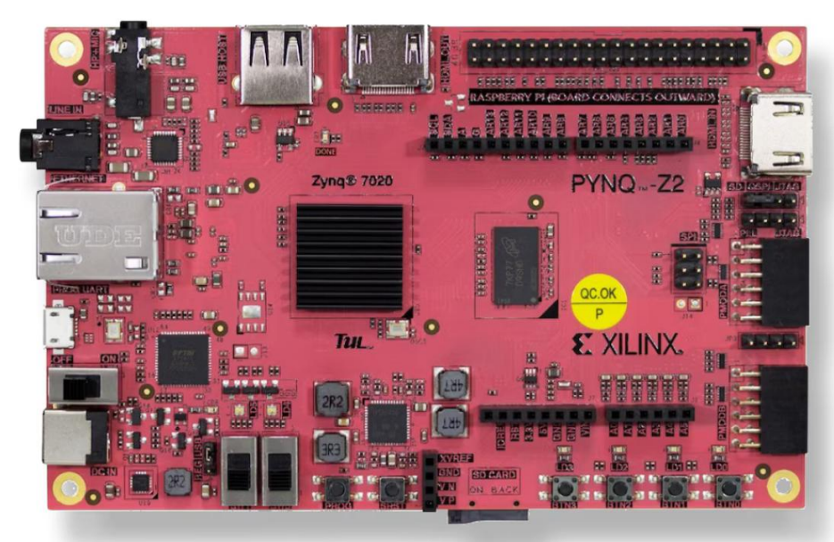
™ fare a lal lp sig An rn te — \ ter o ox eer = me ro Pl (a Hl oi ae oe 7 全 | ae ao ap an ap | »
全国大学生嵌入式芯片与系统设计竞赛'2026 选题指南（AMD） Kria-PYNQ。 ● 适合机器人视觉、工业检测、高清巡检等高带宽实时场景。 ● 参考链接：https://www.amd.com/en/products/system-on-modules/kria/k26/kr260- robotics-starter-kit.html ● 用户指南 UG1092：https://docs.amd.com/r/en-US/ug1092-kr260-starter-kit 2.3 SEA 板卡（Seeed Spartan Edge Accelerator Board） SEA 板卡是 Seeed Studio 出品的 Arduino 扩展板形态 FPGA 板卡，定位于 IO 扩展与执行控制。 ● 器件为 Spartan-7 XC7S15，12,800 个逻辑单元、2,000 个 slice、360 KB 片上 RAM。 ● 板载 Espressif ESP32-D0WDQ6，提供 Wi-Fi 802.11 b/g/n 与 BLE 4.1 连接能力。 ● 形态为 Arduino Shield 兼容（32-pin 排针），可直接叠装于 Arduino 主板之上。 ● 视频与存储：Mini HDMI 输出、CSI/MIPI 摄像头接口（支持树莓派 Camera V1， OV5640）、Micro SD/TF 卡槽。 ● 扩展与板载器件：10-pin FPGA GPIO 排针、2 个 Grove 接口（I2C 与 D2/D3）、8-bit ADC 与 DAC、六轴加速度计与陀螺仪 LSM6DS3TR、2 个单色 LED 与 2 个 RGB LED、 Boot / Reset / User 按键。 ● 供电方式：USB Type-C、VIN（8–17 V）或 Arduino 侧 micro USB。 ● 电平注意事项：SEA 扩展板的 IO 电平为 5 V，而 FPGA 侧 IO 为 3.3 V，因此只能 与 5 V 电平的 Arduino 主板（如 Arduino UNO）配合使用。 ● 参考链接：https://wiki.seeedstudio.com/Spartan-Edge-Accelerator-Board/ 2.4 AMD Ryzen AI PC 具身智能赛道要求以 AMD AI PC 作为上位机，承担端侧 AI 推理、任务决策、人机交互与系统 调度，型号不限。赛事方可提供借用的机型为 AMD Ryzen AI Max+ 395 与 AMD Ryzen AI 9 HX 370。 ● 集成 CPU、基于 RDNA 架构集成显卡 iGPU 与基于 XDNA 架构的 NPU，可在本地 完成视觉、语音与多模态模型推理。 ● 软件栈：ROCm 7.14.0 及以上版本；模型部署亦可参考 Ryzen AI Software 文档。 3
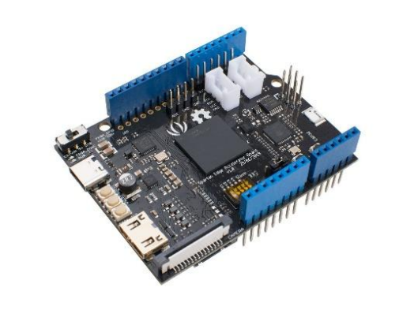
未识别到文字
全国大学生嵌入式芯片与系统设计竞赛'2026 选题指南（AMD） ● ROCm 安装说明：https://rocm.docs.amd.com/en/latest/install/rocm.html ● ROCm 兼容性矩阵：https://rocm.docs.amd.com/en/latest/compatibility/compatibility- matrix.html ● Ryzen AI Software 文档：https://ryzenai.docs.amd.com/en/latest/ ● AMD Ryzen AI PC 所有产品型号： https://www.amd.com/en/products/processors/consumer/ryzen-ai.html#specs 2.5 AMD Radeon PRO W7900 与 Radeon AI PRO R9700 RTL/HLS 本地智能体设计赛道使用 AMD 显卡作为本地模型的运行平台，验证窗口与决赛环境 的配置见 3.1.3.1。 ● AMD Radeon PRO W7900：48 GB 显存，RDNA 3 架构（gfx1100），用于验证窗口 的云资源。 ● AMD Radeon AI PRO R9700：32 GB 显存，RDNA 4 架构（gfx1201），用于决赛部 署验证。 4
全国大学生嵌入式芯片与系统设计竞赛'2026 选题指南（AMD） 三、选题方向 本届 FPGA 创新设计大赛 AMD 赛道共设三个赛道：RTL/HLS 本地智能体设计赛道、具身智能 赛道、自主选题赛道。三个赛道均为自主选题，其中自主选题赛道按学历分为初级组与高级 组，其余两个赛道不限本科生与研究生。各赛道对平台、提交格式与考察重点的要求不同，请 仔细阅读以下内容后选择投递方向。 赛道 参赛资格 核心考察 主要平台 3.1 RTL/HLS 本地智能体 不限 本地模型与智能体在硬件 AMD Radeon 显卡 + 设计赛道 设计任务上的通过率与增 Vivado / Vitis 益 3.2 具身智能赛道 不限 端侧 AI 与 FPGA/Zynq 协 任意 AMD Ryzen AI PC + 同的物理任务闭环 任意 AMD FPGA / Zynq / Versal 3.3 自主选题赛道（初级 大学一年级至三年级在读 基本 FPGA 设计能力与作 可使用 AMD 7 Series 组） 本科生 品完整度 FPGA、Zynq-7000 SoC、 UltraScale或 UltraScale+ 系列器件。 3.3 自主选题赛道（高级 大学四年级本科生及在读 软硬件协同与器件整体性 可使用任意 AMD 组） 硕士生 能的发挥 FPGA、Zynq Adaptive SoC或 Versal Adaptive SoC器件，不设逻辑资源 限制。 5
全国大学生嵌入式芯片与系统设计竞赛'2026 选题指南（AMD） 3.1 RTL/HLS 本地智能体设计赛道 3.1.1 赛道简介 近年来，大模型生成硬件代码的能力有所提升。现有公开评测结果主要反映模型在特定数据集 和评价指标下的表现，与实际工程交付所要求的功能正确性、可综合性及约束收敛能力并不完 全等同。除代码语言与语法能力外，工具反馈的利用方式、失败诊断与重试策略，以及模型外 部领域知识的组织方式，也可能影响方案的工程表现。 模型参数量是影响结果的因素之一，但并非唯一因素。已有部分研究和评测表明，经过硬件领 域专项训练或适配的较小模型，在特定任务上可能达到与更大规模通用模型相近或更好的表 现。因此，在硬件设计任务中，除参数规模外，模型选择、知识组织与智能体设计也值得综合 考虑。 基于上述背景，本赛道重点考察：在一张消费级或工作站级 GPU 的算力与显存约束内，使用 可本地部署的开源模型，并结合自行设计的智能体、领域知识以及 AMD Vivado / Vitis 工具链 的编译、仿真、运行与综合反馈，能够在多大程度上提高硬件设计任务的通过率，以及由此产 生的时间和计算成本。 3.1.2 设计任务 参赛队伍提交一套可在指定环境中运行的完整方案，使其在给定的硬件设计题集上尽可能多地 产出功能正确的代码。 方案须包含 组成 内容 模型 可本地部署的开源权重，须声明来源与版本 推理栈 推理后端及其服务配置 智能体 控制流、重试策略、上下文管理、工具编排 技能包 提示词模板、校验脚本、踩坑清单等领域知识的组织 基线入口 绕过智能体与技能包的单次直接生成脚本，供赛事方计量增益项 提交物为一个基于官方基础镜像构建的容器，该容器在断网沙箱中运行，自行完成从读题到产 出代码的全过程。 两个 track Track 目标语言 RTL Verilog / SystemVerilog HLS Vitis HLS C++ 两个 track 独立排名、独立评奖，推荐参赛队伍只选其一；若两个都做，则在两个榜单上分别 计分，最终排名取其中较高的一个。 数据集 开发阶段建议以下列公开数据集进行自测，并将实测结果写入设计报告： 6
全国大学生嵌入式芯片与系统设计竞赛'2026 选题指南（AMD） 数据集 适用 Track 地址 VerilogEval v2 RTL https://github.com/NVlabs/verilog-eval （dataset_spec-to-rtl） HLS-Eval HLS https://github.com/sharc-lab/HLS-Eval 参赛队伍亦可自行补充其他数据集，其结果一并写入报告。 评测阶段。 赛事方另备一套评测题集，赛前不公开，于评测窗口分发给决赛入围队伍。 题集赛前不公开，方案在其上的表现构成泛化能力的真值。窗口内不得修改方案代码、技能包 或模型权重，提交材料的哈希须与作品提交阶段的方案包一致；赛事方以队伍提交的容器与脚 本抽查复现。评测题集的题量与构成于赛前公告。 判定口径 两个 track 均采用分级判定，逐级递进，只有通过前一级才进入下一级。全部判定在 AMD Vivado / Vitis 2025.2 工具链上完成。 RTL：可编译 → 仿真通过 → 可综合 HLS：可解析 → 可编译 → 可运行（通过全部测试用例） → 可综合 RTL 级别 判定方式 可编译 xvlog 分析与 xelab 详细描述通过 仿真通过 xsim 运行参考测试台，与参考实现逐拍比对无差异 可综合 在 xczu3eg-sbva484-1-e 上 synth_design 产出网表且无 ERROR 目标器件统一为 `xczu3eg-sbva484-1-e`，时钟约束 5 ns，RTL 与 HLS 两个 track 使用同一器 件。 HLS 侧四级全部由 Vitis HLS 完成，两个 track 均同时报告 pass@1 与 pass@5。 3.1.3 设计与优化要求 3.1.3.1 测试环境 开发阶段不限平台。 参赛队伍可使用任何可获取的算力完成开发与迭代，赛事方不作限制也 不提供配额。 验证阶段提供 ROCm 验证平台，供队伍确认方案可在赛事方环境中运行，建议尽早完成一次 跑通验证。 ● 模型须能在单张 32 GB 卡上完整容纳，不允许跨卡。 不设参数量上限，改以显存 为约束。参数量与显存占用并不等价，作为参照：32B 级模型须经 4-bit 量化方可容纳 （约 18 GB），FP16 下约需 64 GB 而装不下；7B 级模型可直接使用 FP16（约 14 GB）。 ● 上下文长度不作统一约束，由参赛队伍自定，但须在 MODEL.md 与设计报告中如实 声明。 ● 云资源经 AMD 中国开发者平台申请，配额另行公告。本赛道具体的验证窗口和测 评窗口时间点将另行公告。 ● 已自行具备 ROCm 环境的队伍可不使用赛事方云资源，但仍须提交可在赛事方环 7
全国大学生嵌入式芯片与系统设计竞赛'2026 选题指南（AMD） 境中重建的容器与脚本。 3.1.3.2 固定与开放的部分 内容 赛事方固定 基础镜像与 EDA 工具链（只提供 Vivado / Vitis，不含第三方工具）、题集与评分器、显存与时 间预算 队伍自主 模型选择与量化、推理后端与服务参数、上下文长度与单次输出上限、智能体全部设计、技能 包与提示词、是否微调 3.1.3.3 微调与专用模型 允许微调，微调后的权重须开源并在提交物中声明，赛事方不提供训练算力；亦允许直接使用 已有的硬件专用开源模型，但须在 MODEL.md 中声明其来源与版本。 3.1.4 优化目标 ● 提高评测题集上分级判定的通过率，尤其是「可综合」这一末级 ● 缩小 pass@1 与 pass@5 的差值，即提升方案稳定性 ● 提升相对同模型裸跑基线的增益幅度 ● 降低单题与总墙钟时间 ● 将失败诊断经验提炼为他人可复用的技能包 3.1.5 提交内容 3.1.5.1 方案包 (参考) <team_name>-agent/ ├── Dockerfile # 基于官方基础镜像构建 ├── model/ │ └── MODEL.md # 模型来源、版本、量化方式、显存占用、上下文配置 ├── agent/ # 智能体源码 ├── skill/ # 技能包 ├── serve/ # 推理服务配置与启动脚本 ├── run.sh # 单题入口：读题 → 产出代码 ├── run_baseline.sh # 基线入口：同一推理服务，绕过智能体与技能包 └── REPORT.md # 设计报告 3.1.5.2 基线入口 run_baseline.sh 与 run.sh 使用同一推理服务与同一上下文配置，但绕过智能体与技能 包，提示词仅含题目本身，单次生成、不重试、不调用工具。其结果作为增益项的基线，须与 run.sh 在同一次运行中产出。 3.1.5.3 模型声明 MODEL.md 中须写明模型来源（仓库地址与版本号，或权重文件的校验和）、量化方式、实测显 存占用与上下文配置，若经微调，须补充基座模型、微调方式、训练数据来源与微调权重的开 源地址。 8
全国大学生嵌入式芯片与系统设计竞赛'2026 选题指南（AMD） 3.1.5.4 设计报告 ● 方案总体架构与设计依据 ● 模型选择的理由，包括曾评估过并放弃的候选及原因 ● 智能体设计：控制流、重试与回退策略、上下文管理方式 ● 技能包的提炼过程：从哪些失败中总结、如何验证有效 ● 在所选数据集上的实测结果 ● 失败分析：哪一类题目仍然做不出来，原因是什么 ● 复现说明 3.1.5.5 评测指标与权重 评测项 权重 能力：题集加权通过率 30 增益：相对同模型裸跑基线的提升 40 代价：墙钟效率 10 智能体与技能包的工程质量 20 合计 100 注：提交内容的方案包，评分公式、判定阈值与各项预算的具体数值以后续分享的本赛道《评 分细则》为准。 3.1.6 赛程安排 报名提交等各节点均以大赛官方公布为准，见 http://www.fpgachina.cn/。 开发阶段不限平台，队伍可自备算力。验证阶段将开放赛事方云资源，可供队伍在 ROCm 上 验证方案可运行并产出自测数据，具体时间点后续公告。 9
全国大学生嵌入式芯片与系统设计竞赛'2026 选题指南（AMD） 3.2 具身智能赛道 3.2.1 赛道简介 具身智能系统需要在真实环境中完成感知、决策和执行。在机器人、智能制造、工业控制和边 缘视觉等应用中，端侧 AI 负责判断，高速传感和实时控制负责把判断转成设备动作。这条链 路的难点不在任何单一环节，而在于闭环：模型再准，若判断到动作之间的延迟不可控、抖动 不可测，系统在物理世界中依然不可用。 本赛道要求参赛队伍使用 AMD Ryzen AI PC 与 FPGA/Zynq 搭建异构协同的具身智能系统。AI PC 负责端侧感知与决策，FPGA/Zynq 负责实时控制和物理接口，两者共同完成一项真实的物 理任务。 系统分工如下： 角色 职责 Ryzen AI PC 端侧 AI 推理、任务规划、人机交互、上层决策与系统调度 AMD FPGA / Zynq 板卡 高速传感接入、实时处理、IO 扩展、运动控制、安全逻辑或低延迟数据桥接 两端协同 通信、数据流、时间同步与控制闭环，共同完成感知—理解—决策—控制—执行 可复用 Skill / Workflow 将部署、硬件调用、模型推理、控制接口与调试方法封装为可迁移的能力（加分 项） 3.2.2 设计任务 参赛队伍自主选择应用场景，完成一套由 Ryzen AI PC 与 FPGA/Zynq 协同实现的具身智能系 统，并至少完成一项真实物理任务。 3.2.2.1 核心命题 作品必须使用 AMD AI PC 作为上位机，运行端侧 AI 推理、任务决策、人机交互或系统调度。 系统还必须包含 FPGA/Zynq 设计，用于高速传感接入、实时数据处理、IO 扩展、运动控制、 安全逻辑或低延迟桥接。FPGA/Zynq 不能只用作普通 USB、串口或 GPIO 转接板。 队伍须说 明其硬件功能和设计方法，并用演示或测试数据说明实际作用。机械结构可以简化，但 AI 决 策到物理执行的闭环必须完整。 3.2.2.2 选题方向 选题可以是以下方向之一，也可自行提出： ● 智能移动机器人导航与避障 ● 视觉识别与自动分拣 ● AI 机械臂抓取与控制 ● 高清视觉检测与实时执行 ● 多传感器融合与运动控制 ● 人机交互驱动的智能执行系统 ● 工业场景下的安全监测与实时控制 10
全国大学生嵌入式芯片与系统设计竞赛'2026 选题指南（AMD） 3.2.2.3 必须完成的技术链路 （1）AI PC 端。 AI PC 负责以下一项或多项功能： ● 本地 AI 推理 ● 图像、语音、传感器或多模态信息理解 ● 任务决策与路径规划 ● 上位机控制界面 ● 与 FPGA/Zynq 通信 ● 系统状态监控与日志记录 ● 策略模型运行 队伍需要说明端侧运行带来的具体收益，如降低延迟、数据本地处理、离线运行，或与物理控 制系统实时协同。 （2）实时控制与数据预处理。 FPGA/Zynq 必须承担至少一项以下功能： ● 实时 IO 控制 ● 电机、舵机或步进电机控制 ● 高清摄像头或高速传感器数据接入 ● 10G Ethernet 高速数据传输 ● AI PC 与底层设备之间的实时桥接 ● 图像预处理或数据流加速 ● 多传感器同步采集和融合 ● 低延迟安全保护逻辑 ● 自定义 RTL/HLS 模块、AXI 外设、Block Design 或 PYNQ Overlay FPGA/Zynq 端必须包含明确的硬件逻辑或系统设计，队伍须说明其实现，并现场演示或提供测 试结果。评测将关注它在实时处理、并行计算、低延迟、高带宽、接口扩展或可靠控制中的实 际作用。 （3）两端协同。 必须给出 AI PC 与 FPGA/Zynq 的通信方式、数据流与时间同步方案，并说明 通信异常时的处理策略。简单地把两套设备连起来不视为协同。 3.2.2.4 平台选择 平台不作限定。 上位机可使用任意 AMD Ryzen AI PC，FPGA 侧可使用任意 AMD FPGA、 Zynq 或 Versal 板卡，队伍按选题需要自行选择，并在提交物中声明具体型号。 赛事方可提供借用的型号为 Ryzen AI Max+ 395 / Ryzen AI 9 HX 370 整机，以及 KR260、 PYNQ-Z2 与 SEA（Spartan Edge Accelerator）板卡，规格与接口见第二节《竞赛技术平台》， 申请方式见 3.2.3.2。这三款板卡在本赛道的适用方向为： 平台 适合方向 KR260 高速视觉与实时传输：10G Ethernet 高速数据通道、高清摄像头接入、多路视频或高带 宽传感数据、FPGA 侧图像预处理、AI PC 与板卡间高速流式传输；机器人视觉、工业 检测、高清巡检 PYNQ-Z2 Python 一体化控制与快速原型：Python 一体化 AI 识别与舵机/电机控制、基于 Overlay 11
全国大学生嵌入式芯片与系统设计竞赛'2026 选题指南（AMD） 的传感器采集与智能执行、桌面级具身智能原型系统 SEA 板卡 IO 扩展与执行控制：多传感器融合与执行器联动、智能工位或自动化控制演示、基于 AI 决策的安全监测与实时控制 使用 PYNQ 框架时，AI PC 端可通过 Python 运行 AI 模型并生成控制指令，再由板卡的 Python 环境调用 FPGA Overlay，完成传感器采集、执行器控制或实时逻辑处理。PYNQ 的 Python 环 境只是统一调用接口，不能替代 FPGA/Zynq 设计，作品仍须包含 FPGA Overlay、Zynq PL/PS 协同设计或硬件逻辑。 3.2.2.5 Skill 与 Agentic Robotics 扩展（加分项） 完成系统演示后，队伍还可开发用于部署和 Agentic Robotics 的 Skill、工具脚本或标准化工作 流。 这里的 Skill 是可复用的能力封装，可供开发者或智能体调用，例如： ● AI PC 端模型部署、启动和推理调用 ● AI PC 与 FPGA/Zynq 的通信初始化和状态检查 ● KR260 高清视频流采集、10G Ethernet 传输或图像预处理调用 ● PYNQ-Z2 Overlay 加载、IO 控制和传感器读取 ● SEA 板卡执行器控制、安全状态机或故障恢复流程 ● 机器人任务分解、动作调用、日志记录和调试流程 队伍可以说明 Skill 或工作流如何复用现有成果，例如把小车方案迁移到机械臂、将单摄像头 扩展为多传感器，或把单一指令控制扩展为 Agentic Robotics 的任务规划和自主执行。 此项不影响参赛资格，在工程完成度、创新性和可扩展性中加分。 3.2.3 设计与优化要求 3.2.3.1 平台与器件限制 ● 上位机必须为 AMD RYZEN AI PC，型号不限，须在提交物中声明整机型号、处 理器型号、内存容量与驱动版本。 ● AI PC 侧的软件栈须使用 ROCm 7.14.0 及以上版本，并在提交物中声明实际使用的 版本。 ● FPGA 侧可使用任意 AMD FPGA、Zynq 或 Versal 板卡，须在提交物中声明具体板 卡与器件型号。 ● 应选择自身可实际获取并完成板级验证的平台。作品须在真实硬件上跑通并提供实 测输出，不接受纯仿真结果。 3.2.3.2 AI PC 支持申请 平台不限并不意味着队伍须自行采购。赛事方为本赛道提供有限数量的 Ryzen AI Max+ 395 / Ryzen AI 9 HX 370 整机借用支持，经中期申请报告评审后发放： 节点 时间 说明 中期申请报告提交 2026 年 10 月 9 日 队伍提交项目 proposal 与中期进展 12
全国大学生嵌入式芯片与系统设计竞赛'2026 选题指南（AMD） 评审与结果发布 2026 年 10 月 13 日 评选出 10 个优秀项目 机器发放 2026 年 10 月 13 日起 为入选的 10 个项目提供 Ryzen AI Max+ 395 或 Ryzen AI 9 HX 370 机 器支持 未获得机器支持的队伍可使用自备的任意 AMD RYZEN AI PC 参赛，不影响评分。 FPGA 板卡方面，赛事方可提供 KR260、PYNQ-Z2 与 SEA 板卡的借用支持，申请方式另行公 告；队伍亦可使用自备的任意 AMD FPGA、Zynq 或 Versal 板卡。 3.2.3.3 基本技术要求 1. 必须使用 AMD RYZEN AI PC 作为上位机，型号不限。 2. 必须包含基于 AMD 器件的 FPGA/Zynq 设计，并说明其在系统中的实际作用。 3. FPGA/Zynq 不能仅作为普通 USB、串口或 GPIO 转接板使用。 4. 必须给出 AI PC 与 FPGA/Zynq 的通信方式和数据流。 5. 必须提供系统架构图、数据流图和关键模块说明。 6. 鼓励使用 Python 打通 AI PC 与 PYNQ-Z2/KR260 的控制流程。 7. 鼓励使用 10G Ethernet、高清摄像头、多传感器、硬件加速或实时控制能力。 8. 鼓励将部署、调试、硬件调用或机器人任务流程封装为可复用 Skill、工具脚本或 标准化工作流。 3.2.4 优化目标与量化指标 3.2.4.1 优化目标 ● 提高任务闭环成功率，降低人工干预次数 ● 压缩端到端响应延迟，尤其是 P95 / P99 与最大值，而非平均值 ● 提高 FPGA/Zynq 在系统中的可量化贡献 ● 降低控制周期抖动与截止期未命中率 ● 在满足性能与时序的前提下合理使用片上资源 ● 将部署、调试与硬件调用经验提炼为他人可复用的 Skill 或工作流 3.2.4.2 指标报告口径 每个技术评分项至少要有一项可复测数据。作品必须报告五类核心指标：任务闭环成功率、端 到端响应延迟、AI 任务效果和推理性能、FPGA/Zynq 的量化贡献，以及 AI PC 与 FPGA/Zynq 的通信性能。再按场景补充至少两项指标，可从视觉、控制、吞吐、可靠性、功耗或复用中选 择。 3.2.4.3 核心必报指标 指标 口径 任务闭环成功率 完整任务的成功次数除以有效测试总次数。测试前需定义成功、失败和人工干预，并说 明测试次数 端到端响应延迟 从传感器产生数据或完成采集，到执行器产生实际物理响应的时间。需说明测量起点和 13
全国大学生嵌入式芯片与系统设计竞赛'2026 选题指南（AMD） 终点，并报告 P50、P95、P99 和最大值，不能只给平均值 AI 任务效果与推理 按场景选用效果指标：分类用 Accuracy 或 Macro-F1，目标检测用 mAP@0.5:0.95，分割 性能 用 mIoU，导航报告到达率、碰撞率或路径效率。推理延迟原则上按单样本（batch=1） 测量，分别列出预处理、模型推理、后处理和总感知延迟；持续性能可用 FPS、 samples/s 或 tokens/s 表示 FPGA/Zynq 可量化 报告 FPGA/Zynq 承担的功能在系统中的实测数据，如处理延迟、持续吞吐率、控制抖 贡献 动、CPU 占用或系统功耗，并说明其功能为何不能由普通转接板或软件方案替代 AI PC 与 按通信方式报告单向延迟或 RTT，并选择有效吞吐率、丢包率、错误率、重传率或指令 FPGA/Zynq 通信性 超时率。单向延迟需说明时钟同步方法；高速通道报告持续有效吞吐率，不以理论带宽 能 代替实测结果 3.2.4.4 场景专项指标（至少选报两项） ● 实时控制：目标和实际控制周期、P99 抖动、截止期未命中率（Deadline Miss Rate）、跟踪均方根误差（RMSE）、超调量、调节时间和稳态误差 ● FPGA 数据处理：输入到输出的处理延迟、像素率、帧率、持续吞吐率，以及目标 时钟、时序收敛状态和最差负裕量（WNS） ● FPGA 资源使用：LUT、FF、BRAM、DSP 和片上存储使用率。资源使用率不是越 高越好，应结合性能、时序和扩展余量判断设计是否合理 ● 视觉与传感：图像处理帧率、丢帧率、多传感器时间同步误差和数据完整率 ● 系统可靠性：连续稳定运行时间、异常次数、人工干预次数、故障恢复时间和安全 状态触发成功率 ● 功耗与能效：空闲功耗、负载平均功耗、峰值功耗和单任务能耗。应说明测量范围 是整机、AI PC、FPGA/Zynq 板卡还是外部执行机构 ● Skill 与工作流复用：在干净环境中的部署成功率和部署时间，以及在第二种设备 或应用场景中的复用结果 3.2.4.5 测试与证据要求 ● 每项指标需注明具体硬件型号、模型及数值精度、输入规格、软件版本、FPGA 时 钟频率、测试次数、测试时长和功耗模式 ● 性能对比必须采用相同测试条件，并提供原始日志、测试脚本、逻辑分析仪或示波 器结果等证据 ● 延迟和抖动需报告分位数和最大值；吞吐与稳定性采用持续运行结果，不以瞬时峰 值代替 ● 不设统一的绝对性能门槛。评分结合任务难度、平台条件与设计目标综合判断 3.2.5 提交内容 所有材料一次性打包提交。下列清单为参考，队伍可根据作品实际情况增减，但须覆盖 3.2.4 要求的全部指标与证据。仓库内所有目录名与文件名须使用纯英文（小写字母、数字、下划线 或连字符），不得出现中文、空格或特殊字符，以保证跨平台复现与脚本自动化。中文只出现 在文件的正文内容中。 14
全国大学生嵌入式芯片与系统设计竞赛'2026 选题指南（AMD） 3.2.5.1 工程包 （1）系统层 ● 系统架构图与数据流图，标明各计算单元、传感器、执行器与通信链路 ● 关键模块说明，含 AI PC 与 FPGA/Zynq 的功能划分依据 ● 接口定义：通信协议、报文格式或寄存器映射、数据类型与时序约定 （2）FPGA/Zynq 侧 ● RTL / HLS 源码，或 Block Design 与 PYNQ Overlay 工程 ● 可复现的构建脚本（Vivado tcl 或等效脚本），以及产出的 .bit / .xsa / .hwh ● 综合与实现报告：LUT / FF / BRAM / DSP 资源占用、时钟频率、时序收敛状态与 WNS ● 仿真或板级验证结果，说明硬件功能正确性是如何确认的 （3）AI PC 侧 ● 模型来源与版本、数值精度或量化方式、推理后端及其配置 ● 上位机应用与通信层源码 ● 部署与启动脚本，以及依赖清单（环境可从零重建） （4）硬件与外设 ● 传感器、执行器、驱动板与机械结构清单 ● 自制部分的图纸、BOM 或接线图 ● 供电与接线说明，使他人可复原同一套物理装置 3.2.5.2 指标报告与原始证据 指标汇总表置于 metrics/ 目录，采用下列表头，每行一项指标： 指标名称 类别 数值 单位 测量条件 测试次数 / 证据文件 时长 端到端响应 核心 ms 起点与终 logs/latency_run1.csv 延迟 P99 点、输入规 格、时钟同 步方法 任务闭环成 核心 % 成功、失败 logs/task_trials.csv 功率 与人工干预 的定义 …… 「测量条件」一列须写明具体硬件型号、模型及数值精度、输入规格、软件版本、FPGA 时钟 频率与功耗模式。 同时提交： ● 每项指标对应的原始日志与测试脚本，脚本须可在提交的环境中重跑 ● 延迟与抖动类指标的波形、示波器或逻辑分析仪截图 ● 运行环境说明：操作系统、驱动版本、依赖版本、板卡与器件型号 15
全国大学生嵌入式芯片与系统设计竞赛'2026 选题指南（AMD） 3.2.5.3 Skill 与工作流（加分项） 置于 skill/ 目录，含 README.md 说明每一项的适用范围、使用方法、失效条件，以及已验 证的复用结果（干净环境部署，或跨设备、跨场景迁移）。 3.2.5.4 设计报告 ● 选题背景与创新点：解决什么实际问题，前人做过什么 ● 系统架构与软硬件划分依据 ● AI PC 端：模型选择理由、端侧运行带来的具体收益、被放弃的候选方案及原因 ● FPGA/Zynq 端：硬件功能、实现方法，以及为何不能由转接板或纯软件替代 ● 两端协同：通信协议、数据流、时间同步方案与异常处理策略 ● 实测结果，数据须与 metrics/ 中的汇总表一致 ● 失败分析：哪些场景仍然做不好，原因是什么 ● 复现说明：一份可供他人从零开始完整执行的操作步骤，含硬件搭建、环境部署、 运行与结果比对 3.2.5.5 推荐目录结构 <project_name>/ ├── README.md # 项目简介 + 复现步骤 ├── docs/ │ ├── architecture.md # 系统架构图与数据流图 │ ├── interface.md # AI PC 与 FPGA/Zynq 的接口定义 │ └── hardware_setup.md # 传感器、执行器、接线与供电说明 ├── fpga/ │ ├── src/ # RTL / HLS 源码或 Block Design 脚本 │ ├── build/ # 构建脚本 + .bit / .xsa / .hwh │ └── report/ # 综合与实现报告 ├── host/ │ ├── model/ # 模型文件或下载脚本 + MODEL.md │ ├── app/ # 上位机应用与通信层源码 │ └── deploy/ # 部署与启动脚本、依赖清单 ├── metrics/ │ ├── metrics.csv # 指标汇总表 │ ├── logs/ # 原始日志 │ ├── scripts/ # 测试脚本 │ └── evidence/ # 波形 / 示波器 / 逻辑分析仪截图 ├── skill/ # 可复用 Skill 与工作流（加分项） │ └── README.md └── report/ # 设计报告 上表为推荐结构，非强制。采用其他组织方式的队伍须在 README.md 中给出目录对照说明。 3.2.5.6 评测指标与权重 评测项 权重 具身智能系统完整度 20 AI PC 端侧 AI 能力 20 FPGA/Zynq 设计质量 25 AI PC 与 FPGA/Zynq 协同 20 16
全国大学生嵌入式芯片与系统设计竞赛'2026 选题指南（AMD） 工程完成度与创新 15 合计 100 同一项数据可以说明多个评分项，但只在其中一项计分。 具身智能系统完整度（20）。 看作品是否完成感知、决策、控制和执行闭环。单独的 AI Demo 或硬件控制 Demo 不计为完整闭环。评分参考任务闭环成功率、端到端响应延迟、人工干预次 数，以及异常时能否进入安全状态。 AI PC 端侧 AI 能力（20）。 AI 模型应在 AI PC 本地运行，并实际参与感知、理解、规划或决 策。可用 Accuracy、Macro-F1、mAP、mIoU、到达率或碰撞率等任务指标说明模型效果，同 时报告单样本推理延迟、总感知延迟、持续吞吐率和离线运行能力。 FPGA/Zynq 设计质量（25）。 FPGA/Zynq 必须承担实际硬件功能，其作用可以是实时处理、 并行计算、降低延迟、提高带宽、扩展接口或保证控制可靠性。评审会结合控制周期、P99 抖 动、截止期未命中率、处理延迟或持续吞吐率、时序收敛状态与资源使用情况进行评分。 AI PC 与 FPGA/Zynq 协同（20）。 关注两端的通信、数据流、时间同步和控制闭环。简单连 接两套设备不能视为协同。参考数据包括单向延迟或 RTT、持续有效吞吐率、丢包或错误率、 指令超时率、多传感器同步误差，以及通信异常后的恢复或安全处理结果。 工程完成度与创新（15）。 综合考察可靠性、演示效果、文档质量、场景创新、用户体验和扩 展能力。可靠性可用连续运行时间、异常和人工干预次数、故障恢复时间、功耗及单任务能耗 说明，部署文档和复现实验结果也计入评分。可复用 Skill、部署脚本、调试工具或 Agentic Robotics 工作流属于加分内容，需通过干净环境部署或跨设备、跨场景复用说明其迁移能力。 3.2.6 赛程安排 除下列本赛道特有节点外，报名、作品设计、作品提交与决赛的时间节点均以大赛官方公布为 准，见 http://www.fpgachina.cn/。 节点 时间 说明 中期申请报告提交 2026 年 10 月 9 日 提交项目 proposal 与中期进展，申请 AI PC 支持 评审结果发布 2026 年 10 月 13 日 评选出 10 个优秀项目，发放 Ryzen AI Max+ 395 / Ryzen AI 9 HX 370 机器 3.2.7 参考资源 AI PC 与 ROCm ● ROCm 安装说明：https://rocm.docs.amd.com/en/latest/install/rocm.html ● AMD 官方 Ryzen AI 技能包：https://github.com/amd/skills ● Lemonade SDK：https://github.com/lemonade-sdk/lemonade ● ROCm 兼容性矩阵（确认 SKU、操作系统与内核组合）： https://rocm.docs.amd.com/en/latest/compatibility/compatibility-matrix.html ● 在 Radeon 与 Ryzen 上使用 ROCm：https://rocm.docs.amd.com/projects/radeon- ryzen/en/latest/ 17
全国大学生嵌入式芯片与系统设计竞赛'2026 选题指南（AMD） ● Ryzen AI Software 文档与安装指引：https://ryzenai.docs.amd.com/en/latest/ ● Ryzen AI Software Linux 安装说明：https://ryzenai.docs.amd.com/en/latest/linux.html FPGA / Zynq 平台 ● 各板卡的规格与获取方式见第二节《竞赛技术平台》 ● Kria KR260 产品页：https://www.amd.com/en/products/system-on- modules/kria/k26/kr260-robotics-starter-kit.html ● Kria KR260 用户指南 UG1092：https://docs.amd.com/r/en-US/ug1092-kr260-starter-kit ● Kria 加速应用文档：https://xilinx.github.io/kria-apps-docs/kr260-docs.html ● Kria Robotics AI 示例仓库：https://github.com/amd/Kria-RoboticsAI ● PYNQ 官方文档：https://pynq.readthedocs.io/en/latest/index.html ● Kria-PYNQ（在 Kria SOM 上安装 PYNQ）：https://github.com/Xilinx/Kria-PYNQ ● SEA 板卡厂商 Wiki：https://wiki.seeedstudio.com/Spartan-Edge-Accelerator-Board/ 提交模板 本赛道不发布示范工程。提交物的格式与深度以 3.2.5 为准，其中推荐目录结构与指标汇总表 表头可直接套用。 18
全国大学生嵌入式芯片与系统设计竞赛'2026 选题指南（AMD） 3.3 自主选题赛道（分初级组与高级组） 3.3.1 赛道简介 本赛道面向完整的 FPGA 作品，对器件、实现方式与应用领域均不作限定。参赛队伍自由选择 题目，综合运用逻辑设计、状态机、时序约束、接口协议与软硬件协同等能力，完成一件可复 现、可演示的作品。 3.3.1.1 组别划分 本赛道按队员学历分为初级组与高级组，两组独立排名、独立评奖。 组别 参赛资格 器件范围 考察侧重 初级组 大学一年级至三年级在读本 可使用 AMD 7 Series FPGA、 逻辑设计、状态机、时序 科生 Zynq-7000 SoC、UltraScale或 约束、接口协议等基本 UltraScale+系列器件。 FPGA 设计能力 高级组 大学四年级本科生及在读硕 可使用任意 AMD FPGA、Zynq 在上述基础上进一步考察 士生 Adaptive SoC或 Versal Adaptive 软硬件协同与器件整体性 SoC器件，不设逻辑资源限制。 能的发挥 队伍中如同时含不同年级或学历的队员，按其中最高者归入高级组。报名后台有学生证与学历 审核流程，违规报名将取消参赛资格。 两组的设计任务、提交内容与评测指标一致，仅在参赛资格、器件范围与考察侧重上有所区 别。下文如无特别说明，各项要求对两组同时适用。 3.3.2 设计任务 参赛队伍自主选择应用方向与实现方式，完成一件完整的 FPGA 作品。 选题要求 ● 应用方向不限。鼓励从 FPGA 之外的学科中寻找题目，也接受面向传统信号处理、 通信、控制、图像与嵌入式系统的选题 ● 鼓励综合考虑软硬件协同，充分发挥器件整体性能 实现方式 不作限定。RTL、Vitis HLS、AI Engine、PS 侧软件及其任意组合均可。作品的核心价值可以 体现在硬件加速、系统集成、接口设计或应用创新中的任意一项或多项。 初级组推荐方向：PYNQ 初级组不限定实现方式，但推荐使用 PYNQ 框架完成作品：PS 侧用 Python 与 Jupyter Notebook 组织算法与数据流，PL 侧以 HLS 或 RTL 实现计算核心并封装为 Overlay，可以把精 力集中在软硬件划分与硬件设计本身，而不必先跨过嵌入式软件栈的门槛。 在此基础上，若能提炼出通用性较高的 PYNQ Skill，将在评分中加分。这里的通用性指该 Skill 不与本队题目绑定，换一个题目、换一块板卡仍然可用，例如： ● 通用的 Overlay 加载与校验流程、寄存器映射与 register_map 使用范式 ● 可复用的 DMA 搬运与缓存一致性处理封装，含常见出错情形的定位方法 19
全国大学生嵌入式芯片与系统设计竞赛'2026 选题指南（AMD） ● 从接口契约自动生成主机侧调用代码或测试骨架的脚本 ● 黄金参考比对、性能与资源数据自动采集并生成报告的工具 Skill 的提交方式与评价标准见 3.3.5.2。从本队作品的开发过程中沉淀即可，但须写清它在本队 题目之外还能用在哪类场景。高级组同样可以提交 PYNQ Skill，评价标准一致。 考察重点 作品的完整性与工程水平：功能是否正确、设计是否经过实测验证、性能与资源数据是否真实 完整、他人能否复现。在此基础上，选题的创新性与应用价值占最高权重。 3.3.3 设计与优化要求 3.3.3.1 工具限制 ● 工具版本：Vivado / Vitis 2026.1（推荐）或 2025.2。如使用其他版本需在报告中说 明并保证脚本可复现 ● 允许使用任意公开大模型、微调后的本地模型，以及基于大模型构建的智能体应 用。须提交体现大模型协作过程的交互记录，含提示词、模型回答与自我纠错轨迹 ● 须将协作过程中沉淀的可复用经验提炼为技能包（Skill），随作品一并提交，见 3.3.5.2 3.3.3.2 板卡与器件限制 ● 初级组：可使用 AMD 7 Series FPGA、Zynq-7000 SoC、UltraScale 或 UltraScale+系 列器件。 ● 高级组：可使用任意 AMD FPGA、Zynq Adaptive SoC 或 Versal Adaptive SoC 器 件，不设逻辑资源限制。 两组均须在提交物中声明具体型号，并应选择自身可实际获取并完成板级验证的器件。 作品须在板上跑通并提供实测输出。 3.3.3.3 开源要求 所有提交作品强烈要求在 GitHub 或 Gitee 上开源，采用允许再分发的开源协议，推荐 MIT 或 Apache-2.0。 3.3.4 优化目标 ● 在目标器件上取得可测量的性能表现，并给出与基线的对比 ● 合理使用片上资源，避免以显著的资源代价换取有限的性能收益 ● 保证工程可由他人从零复现 ● 将设计过程中的判断依据写进报告，而不只是呈现结果 ● 将与大模型协作中获得的经验提炼为他人可复用的技能包 20
全国大学生嵌入式芯片与系统设计竞赛'2026 选题指南（AMD） 3.3.5 提交内容 3.3.5.1 工程包 ● 完整的工程文件与源码（RTL、HLS、PS 侧软件等，按实际采用的实现方式提 交） ● 仿真或验证结果，说明功能正确性是如何确认的 ● 综合与实现报告，含资源占用、时钟频率与关键性能指标 ● 上板工程、运行脚本、实测输出与参考结果的比对数据 ● 可复现的构建脚本 3.3.5.2 技能包 置于 skill/ 目录，含 README.md 说明每一项的适用范围、使用方法与失效条件。技能包是 把与大模型协作过程中沉淀下来的经验显式提炼出来，供他人直接复用，可以是以下任意一种 或多种： ● 提示词工作流：一组经过验证、能稳定完成某类任务的提示词模板及使用说明，例 如从算法描述推导软硬件划分、根据综合报告定位瓶颈 ● 案例模板：可被下一个题目直接套用的工程骨架、脚本模板、报告模板 ● 校验脚本：自动比对黄金参考、检查资源与时序、验证工程可复现性的脚本 ● 踩坑清单：结构化整理的常见错误与定位方法，含触发条件与排查步骤 评价标准是可复用性：一支陌生队伍拿到该目录，能否直接用在自己的题目上。每一项须写明 适用场景、使用方法与已验证的效果，并说明是从哪些失败或观察中总结得出。 通用 PYNQ Skill 单独加分。 若提交的 Skill 面向 PYNQ 框架且不与本队题目绑定（换题目、 换板卡仍可用），在本赛道评分中另行加分，见 3.3.2。 3.3.5.3 设计报告 ● 选题背景与创新点：为什么选这个题目，它解决了什么实际问题，前人做过什么 ● 设计原理与功能框图 ● 软硬件划分依据与接口设计 ● 优化过程，含优化前后的性能与资源对比表 ● 大模型协作记录：提示词、模型回答、自我纠错轨迹、智能体工作流设计（如有） ● 技能包的提炼过程：从哪些失败或观察中总结、如何验证有效、边界如何确定 ● 复现说明：一份可供他人从零开始完整执行的操作步骤 3.3.5.4 推荐目录结构 仓库内所有目录名与文件名须使用纯英文（小写字母、数字、下划线或连字符），不得出现中 文、空格或特殊字符，以保证跨平台复现与脚本自动化。中文只出现在文件的正文内容中。 <project_name>/ ├── README.md # 项目简介 + 复现步骤 ├── src/ # 设计源码（RTL / HLS / PS 侧软件） ├── sim/ # 仿真或验证脚本与结果 21
全国大学生嵌入式芯片与系统设计竞赛'2026 选题指南（AMD） ├── build/ # 可复现的构建脚本 + 综合与实现报告 ├── board/ # 上板工程、运行脚本与实测输出 ├── data/ # 测试数据与参考结果 ├── skill/ # 技能包 │ └── README.md └── report/ # 设计报告 + 大模型协作记录 上表为推荐结构，非强制。采用其他组织方式的队伍须在 README.md 中给出目录对照说明。 3.3.5.5 评测指标与权重 评测项 权重 创新性与应用价值 30 性能与资源优化效果 20 功能正确性与设计完整性 20 大模型协作与技能包 15 文档质量与可复现性 15 合计 100 两组采用同一套评测项与权重，但分组独立排名、独立评奖，评分时结合各自组别的考察侧重 把握尺度。各项均含评委评定成分；功能正确性与可复现性两项以提交物核查与实测数据为主 要依据。 3.3.6 赛程安排 本赛道不单独设定赛程。报名、作品设计、作品提交与决赛的时间节点均以大赛官方公布为 准，见 http://www.fpgachina.cn/。 3.3.7 参考资源 官方文档 ● Vivado 综合用户指南 UG901 ● Vivado 实现用户指南 UG904 ● Vitis HLS 用户指南 UG1399 ● UltraFast 设计方法学指南 UG949 学习资源 ● AMD 官方高层次综合工具项目学习案例： https://xilinx.github.io/xup_high_level_synthesis_design_flow/ ● Vitis Libraries：https://github.com/Xilinx/Vitis_Libraries ● PYNQ 官方文档：https://pynq.readthedocs.io/en/latest/index.html 22
全国大学生嵌入式芯片与系统设计竞赛'2026 选题指南（AMD） 四、开发板获取途径 4.1 FPGA 板卡 各赛道对板卡与器件不作统一指定，队伍可使用自身可实际获取的 AMD 器件，并在提交物中 声明具体型号。在此基础上，赛事方另提供有限数量的借用与远程资源：报名结束后开放 PYNQ-Z2 与 KV260 的远程板卡使用；具身智能赛道的 KR260、PYNQ-Z2 与 SEA 板卡，AMD 将根据参赛方案提供借用支持，申请方式另行公告。 4.2 Ryzen AI PC 支持申请（具身智能赛道） 具身智能赛道的上位机型号不限，队伍可使用自备的任意 AMD AI PC。在此基础上，赛事方 提供有限数量的 Ryzen AI Max+ 395 / Ryzen AI 9 HX 370 整机借用支持，经中期申请报告评审 后发放。 节点 时间 说明 中期申请报告提交 2026 年 10 月 9 日 队伍提交项目 proposal 与中期进展 评审与结果发布 2026 年 10 月 13 日 评选出 10 个优秀项目 机器发放 2026 年 10 月 13 日起 为入选的 10 个项目提供 Ryzen AI Max+ 395 或 Ryzen AI 9 HX 370 机器支持 未获得机器支持的队伍可使用自备的任意 AMD AI PC 参赛，不影响评分。 4.3 GPU 云资源（RTL/HLS 本地智能体设计赛道） 验证窗口开放 AMD Radeon PRO W7900 单卡云资源，供队伍在 ROCm 上验证方案可运行。云 资源经 AMD 中国开发者平台申请，见 https://developer.amd.com.cn/login?source=91kadjjnI，具 体实施细则和配额另行公告。已自行具备 ROCm 环境的队伍可不使用赛事方云资源，但仍须 提交可在赛事方环境中重建的容器与脚本。 23
全国大学生嵌入式芯片与系统设计竞赛'2026 选题指南（AMD） 五、技术支持与技术资源 为帮助参赛同学解决竞赛过程中遇到的各类问题，我们提供多种技术支持渠道。推荐优先在 AMD FPGA 中文技术论坛寻求专业解答。各个赛道的的评分细则将在报名期间陆续发布。 常见问题 FAQ 报名指南、赛道选择等常见问题，将在 2026 年 AMD FPGA 竞赛 FAQ 云文档中持续更新维 护。地址待公布。 培训与交流 ● 交流 QQ 群：1087309750 ● 赛道交流群与示范材料发布渠道：以大赛官方公告为准，见 http://www.fpgachina.cn/ 技术问题咨询: AMD 赛灵思中文社区论坛：面向广大 FPGA 开发者的专业技术交流平台，历史讨论中包含大 量问题解答 ： https://adaptivesupport.amd.com/s/topic/0TO2E000000YOAVWA4/%E8%B5%9B%E7%81%B5%E6 %80%9D%E4%B8%AD%E6%96%87%E7%A4%BE%E5%8C%BA%E8%AE%BA%E5%9D%9B?l anguage=en_US AMD AI 开发者问题 Github 反馈渠道： https://github.com/AMD-DEVELOPERS/AI-issues/tree/main AMD AI 开发者问题邮箱反馈渠道： member-service@mail.developer.amd.com.cn AMD 赛道竞赛问题咨询 邮箱联系： fpgacamp.cn@outlook.com 24
全国大学生嵌入式芯片与系统设计竞赛'2026 选题指南（AMD） 六、其它 所有进入决赛的自主选题队伍需要按照 AMD 提供的 PPT 模板提供一页英文 PPT 海报作为作品 简介，将不包含队伍信息的海报用 A4 纸彩色打印并带到决赛现场。PPT 模板将作为附件提 供。 各赛道的评分公式、判定阈值与提交条件以其各自的《评分细则》为准；报名、作品设计、作 品提交与决赛的时间节点均以大赛官方公布为准，见 http://www.fpgachina.cn/。 25
全国大学生嵌入式芯片与系统设计竞赛 2026 FPGA 创新设计赛道选题指南 （深圳市紫光同创电子有限公司） 1
目录 目录 ......................................................................................................................................................... 2 一、公司介绍 ......................................................................................................................................... 1 二、竞赛技术平台 ................................................................................................................................. 1 三、选题方向 ......................................................................................................................................... 7 四、开发板获取途径 ........................................................................................................................... 15 五、技术支持与技术资源 ................................................................................................................... 15 2
全国大学生嵌入式芯片与系统设计竞赛 2026 选题指南（紫光同创） 一、 公司介绍 深圳市紫光同创电子股份有限公司，专业从事可编程系统平台芯片及其配套 EDA 开发工具 的研发与销售，致力于为客户提供完善的、具有自主知识产权的可编程逻辑器件平台和系统解 决方案。公司是国家高新技术企业，拥有高中低端全系列产品，产品覆盖通信、工业控制、图 像视频、消费电子等应用领域。 紫光同创立足中国大陆，总部设立在深圳，拥有北京、上海、成都等研发中心。 二、 竞赛技术平台 ⚫ RK3568_MES2L100H RK3568_MES2L100H 核心板采用紫光创 logos2 系列 FPGA，型号：PG2L100H-6IFBG484， ARM 采用瑞芯微 RK3568J。开发板采用核心板+扩展板结构，核心板与扩展板之间使用高速板 对板连接器进行连接。核心板的 FPGA 部分主要由 FPGA+1 颗 DDR3+2 颗 FLASH+电源及复位 电路组成，承担了 FPGA 最小系统运行及高速数据处理及存储功能。 FPGA 选用紫光同创 28nm 工艺 FPGA（logos2：PG2L50H-6IFBG484/PG2L100H-6IFBG48）； PG2L50H(PG2L100H)与、DDR3 在数据交互时时钟频率最、高可达 1066Mbps，DDR3 数据位宽 为 16bit，因此数据带宽可达（1066Mbps*16），充分满足高速多路数据存储的需求；另外 PG2L50HFPGA(PG2L100H)带有 4 路 HSST 高速收发器，每路速度高达 6.6Gbps，非常适用于光 纤通信与 PCIe 通信；核心板上的 FLASH 主要用于存储 FPGA 配置文件。 RK3568J 是一颗高性能、低功耗的四核应用处理器芯片，它内置了多种功能强大的嵌入式 硬件引擎，为高端应用提供了优异的性能，RK3568J 为工业级，工作温度范围为-40°C~85。底 板为核心板扩展了丰富的外围接口，其中包括两个光纤模块接口，FMC 接口、40pin 接口，并 配置了按键、LED 灯。 1
全国大学生嵌入式芯片与系统设计竞赛 2026 选题指南（紫光同创） 板卡淘宝店铺购买：https://shop372525434.taobao.com/ 配套资料下载地址：https://www.szlogicmatrix.com/ ⚫ 盘古 676 系列开发板 盘古 676 系列开发板（型号：MES2L676-100HP/MES2L676-200HP/MES2L676-100HP -MINI/MES2L676-200HP-MINI，国产 FPGA 权威指南教材的配套板卡），共有 2 款板卡： 支持 100k 和 200k 两种逻辑规模，主控分别为：Logos-2：PG2L100H-6IFBG676 和 PG2L2 00H-6IFBG676，底板兼容设计。板卡采用了核心板+扩展底板的结构，核心板与扩展底板 之间使用高速板间连接器进行连接。主控和 DDR3 之间的数据传输时钟频率最高为 533 M Hz，2 颗 DDR3 的数据位宽为 32 bit，总的数据带宽最高到 34112 Mbps（1066×32=3411 2）。可选择两款不同的底板： 底板一：包括 HDMI 输出接口、HDMI 输入接口、网口、串口，并配置了按键、LED 灯、EEPROM 器件以及一个高速信号扩展口和三个 40Pin 普通扩展口。 底板二：底板带有8 路HSSTLP 高速串行收发器，每路的数据传输速率高达 6.6Gbps。 2
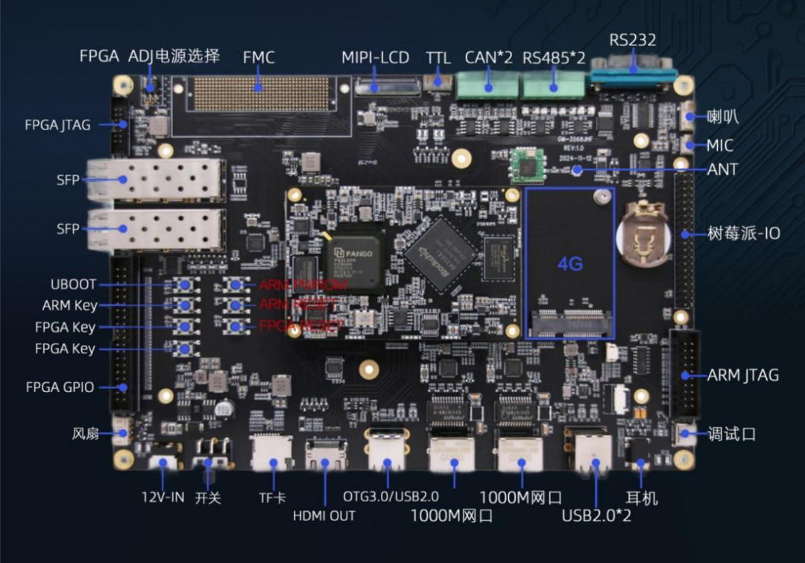
FPGA ADJ 电源选择；FMC；MIPI-LCD；TTL；CAN*2；RS485*2；RS232；FPGA JTAG；SFP（两处）；UBOOT；ARM Key；FPGA Key（两处）；FPGA GPIO；风扇；12V-IN；开关；TF 卡；HDMI OUT；OTG3.0/USB2.0；1000M 网口（两处）；USB2.0*2；耳机；喇叭；MIC；ANT；树莓派-IO；4G；ARM JTAG；调试口。
图中央红字与器件重叠，未作为已校准文字收录；完整原图和未校准 OCR 另附。
232 FPGA ADj电源选择 FMC ° 8 MIPI = TTL CAN*2 s Rs FPGAJTAG —=® aa =! eet iar @ ot: ue @ IC Pi ANT SFP 时 SEE: Saks Ve SFP 对一树莓派-IO ie hee UBOOT CaS AR ARM Key: ta FPGA Key Nes ‘2 FPGA Key TB a) Fe a | 6 —ARM JTAG roo gS fe | poo " im Fund Be ta * & 2) 试口 na BS ne n fTT oe 要 ey IN in TF卡 HDMI OUT 1000M网 口 USB2.0*2
全国大学生嵌入式芯片与系统设计竞赛 2026 选题指南（紫光同创） MES2L676 开发板预留了 2 路光纤接口、1 路 SMA 高速收发接口、1 路 PCIe Gen2×4 数据 通信接口、1 路 HDMI 发送接口、1 路 HDMI 接收接口、1 路 10/100/1000 Mbps 的以太网 接口，以及 1 组 FMC LPC 扩展接口（符合 FMC 接口规范，可用于外接 FMC 模块）。 板卡淘宝店铺购买：https://shop372525434.taobao.com/ 配套资料下载地址：https://www.szlogicmatrix.com/ 3
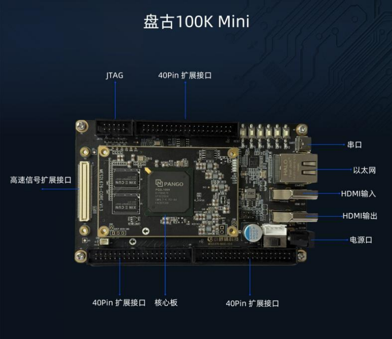
盘古100K Mini；JTAG；40Pin 扩展接口（三处）；高速信号扩展接口；串口；以太网；HDMI 输入；HDMI 输出；电源口；核心板。
转录示意图标注，不包括电路板全部器件丝印。
盘古100K Mini JTAG 40Pin 扩展接口 让全 串口 Branco 以太网 HDMI输入 a | = HOMIE 电源口 40Pin 扩展接口”核心板 40Pin 扩展接口
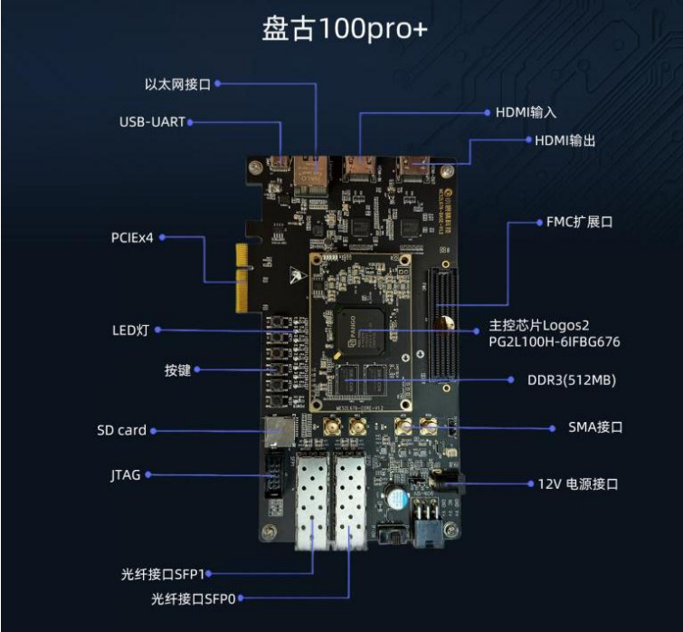
盘古100pro+；以太网接口；USB-UART；PCIEx4；LED 灯；按键；SD card；JTAG；光纤接口 SFP1；光纤接口 SFP0；HDMI 输入；HDMI 输出；FMC 扩展口；主控芯片 Logos2 PG2L100H-6IFBG676；DDR3(512MB)；SMA 接口；12V 电源接口。
转录示意图标注，不包括电路板全部器件丝印。
盘古100pro+ 以太网接口 HDMI输入 HDMI输出 se! 业 =: 19 By iy FMCH RO a mere oe 用 :> 1 ‘ef LEDXT & 5 if 出 。主控芯片Logos2 PG2L100H-6IFBG676 口 i +——_ 0 DDR3(512MB) = SMA接口 SD card -—— RIES: SABES bee: ret STAG 一一一一一12V 电源接口 光纤接口SFP1 光纤接口SFP0
全国大学生嵌入式芯片与系统设计竞赛 2026 选题指南（紫光同创） ⚫ 盘古 50 开发板（MES50HP） 盘古50开发板（MES50HP）采用了核心板+扩展板的结构，核心板与扩展板之间使用 高速板对板连接器进行连接。 核心板主要由 FPGA+2 颗 DDR3+Flash+电源及复位构成， 承担了 FPGA 的最小系统运行及高速数据处理和存储的功能。 FPGA 选用的是紫光同创 40nm 工艺 FPGA（logos 系列：PGL50H-6IFBG484）；PGL5 0H 和 DDR3 之间的数据交互时钟频率最高到 400MHz，2 颗 DDR3 的数据位宽为 32bit， 总数据带宽最高到 25600（800×32）Mbps，充分满足了高速多路数据存储的需求；另外 PGL50HFPGA 带有 4 路 HSST 高速收发器，每路速度高达 6.375Gb/s，非常适合用于光纤通 信和 PCIe 数据通信；电源采用多颗 EZ8303（艾诺）来产生不同的电源电压。 底板为核心板扩展了丰富的外围接口,预留 HDMI 收发接口用于图像验证及处理；预留 的光纤接口、10/100/1000M 以太网接口，PCIE 接口，方便各类高速通信系统验证；预留 了一个 40pin 的 IO 扩展连接器，方便用户在开发平台基础 上验证模块电路功能。 板卡淘宝店铺购买：https://shop372525434.taobao.com/ 配套资料下载地址：https://www.szlogicmatrix.com/ 4
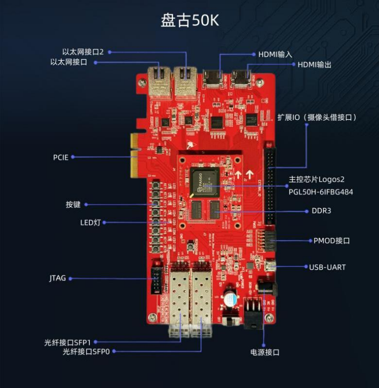
盘古50K；以太网接口2；以太网接口；PCIE；按键；LED 灯；JTAG；光纤接口 SFP1；光纤接口 SFP0；HDMI 输入；HDMI 输出；扩展 IO（摄像头借接口）；主控芯片 Logos2 PGL50H-6IFBG484；DDR3；PMOD 接口；USB-UART；电源接口。
转录示意图标注，保留原图“摄像头借接口”表述；不包括电路板全部器件丝印。
盘古50K 以太网接口2 HDMI输入 以太网接口 HDMI输出 vey Oe wl 扩展IO (摄像头借接口) aig a PCIE 主控芯片Logos2 PGLSOH-6IFBG484 按键 - BE: DDR3 LE0灯e一一一一| 三 一*pPMOD接口 a as | > USB-UART oe Jaco Wi 光纤接口SFP1 光纤接口SFPO 电源接口
全国大学生嵌入式芯片与系统设计竞赛 2026 选题指南（紫光同创） ⚫ SOPC 开发平板 开发板主要由 FPGA 芯片+1 颗 DDR3+Flash+电源及复位构成，承担了 FPGA 的最小 系统运 行及高速数据处理和存储的功能。FPGA 选用的是紫光同创 28nm 工艺的 FPGA（K osmo-2 系列： PG2K100-6IMBG400）；Kosmo2 系列采用 Soc 架构。产品集成了功能丰 富的双核 Cortex-A53 处理器单元（PU）和 28nm 可编程阵列（PA），具有高性能、低功 耗特性。PG2K100 和 DDR3 之间的数据交互频率最高到 533MHz，1 颗 DDR3 的数据位宽 为 16bit，总数据带宽最高到 17056 （1066×16） Mbps，充分满足了高速多路数据存储的 需求；另外 KOSMO 内部集成 ADC 硬核一 块，电源采用矽力杰 SQ20953 将来自输入电源 的 12V 转换成 5V，再由多颗矽力杰 SQ28704 来 产生不同的电源电压。 5
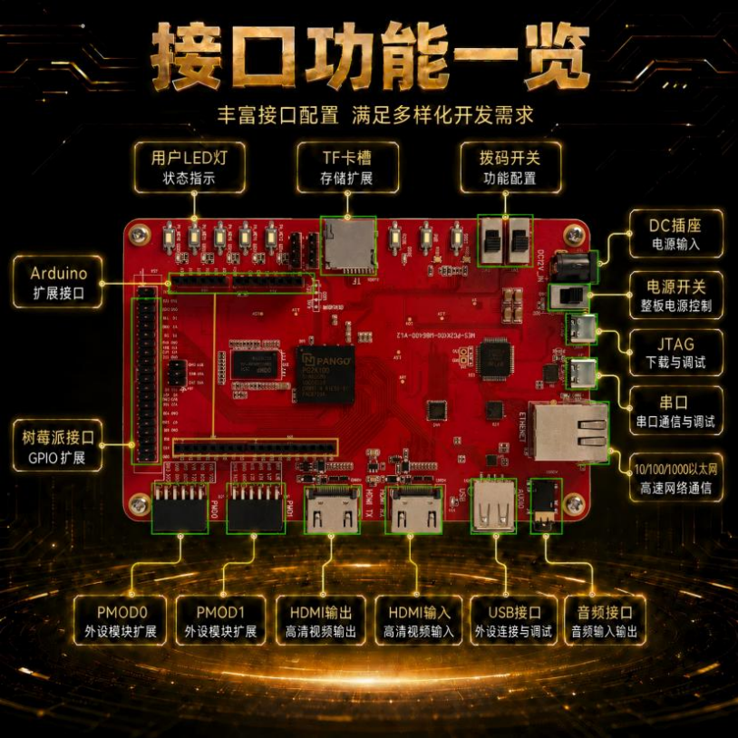
接口功能一览；丰富接口配置 满足多样化开发需求 用户 LED 灯：状态指示 TF 卡槽：存储扩展 拨码开关：功能配置 Arduino：扩展接口 树莓派接口：GPIO 扩展 DC 插座：电源输入 电源开关：整板电源控制 JTAG：下载与调试 串口：串口通信与调试 10/100/1000 以太网：高速网络通信 PMOD0、PMOD1：外设模块扩展 HDMI 输出：高清视频输出 HDMI 输入：高清视频输入 USB 接口：外设连接与调试 音频接口：音频输入输出
根据图中功能标注转录；不替代芯片/板卡手册。
7 ~ 接口功能一览 一 丰富接口配置 满足多样化开发需求 用户LED灯 (Tee R RK 状态指示 [存储扩展 J [ 功能村 DC插座 | 电源输入 rduino 随机 ivy me, bs 电源开关 | [ 整板电源控制 ceases om STAG 下载与调试 ee © 2] 串口通信与调试 树莓派接口 GPIO扩展 一 加 101001000以大| FF TEN 站 高速网络通信 | n® —= rt, pMODO PMOD1 HDMI输出 HDMI输入 USB接口 音频接口 外设模块扩展 上 外设模块扩展 视频输出 高清视频输入 上外设连接与调试 | BAS Aw
全国大学生嵌入式芯片与系统设计竞赛 2026 选题指南（紫光同创） 板卡淘宝店铺购买：https://shop372525434.taobao.com/ 详细资料下载：https://www.szlogicmatrix.com/ ⚫ 配套开发板外设 (1) 摄像头模块 摄像头基于 CMOS 芯片图像传感器 OV5640 双目摄像头，通过 DVP 接口与 FPGA 实现图 像的传输。 6
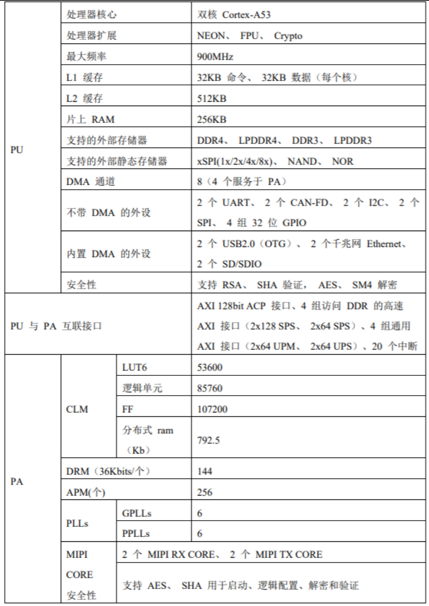
PU 处理器核心：双核 Cortex-A53 处理器扩展：NEON、FPU、Crypto 最大频率：900MHz L1 缓存：32KB 命令、32KB 数据（每个核） L2 缓存：512KB 片上 RAM：256KB 支持的外部存储器：DDR4、LPDDR4、DDR3、LPDDR3 支持的外部静态存储器：xSPI(1x/2x/4x/8x)、NAND、NOR DMA 通道：8（4 个服务于 PA） 不带 DMA 的外设：2 个 UART、2 个 CAN-FD、2 个 I2C、2 个 SPI、4 组 32 位 GPIO 内置 DMA 的外设：2 个 USB2.0（OTG）、2 个千兆网 Ethernet、2 个 SD/SDIO 安全性：支持 RSA、SHA 验证，AES、SM4 解密 PU 与 PA 互联接口 AXI 128bit ACP 接口、4 组访问 DDR 的高速 AXI 接口（2x128 SPS、2x64 SPS）、4 组通用 AXI 接口（2x64 UPM、2x64 UPS）、20 个中断 PA CLM / LUT6：53600 CLM / 逻辑单元：85760 CLM / FF：107200 CLM / 分布式 ram（Kb）：792.5 DRM（36Kbits/个）：144 APM（个）：256 PLLs / GPLLs：6 PLLs / PPLLs：6 MIPI CORE：2 个 MIPI RX CORE、2 个 MIPI TX CORE 安全性：支持 AES、SHA 用于启动、逻辑配置、解密和验证
保留图中“命令”、SPS、UPM、UPS 等原始用词。只做转录，不将平台规格改写为赛题验收门槛。
处理器核心 双核 Cortcx-A53 处理器扩展 NEON、 FPU、 Crypto 最大频率 900MHz Li 缓存 32KB 命令、 32KB 数据 (每个核) L2 缓存 512KB 片上 RAM 256KB 支持的外部存储器 DDR4、 LPDDR4、 DDR3、 LPDDR3 PU 支持的外部蔚态存储器 XxSPI(1x/2x/4x/8x). NAND、 NOR DMA 通道 (4 个服务于 PAD 不带 DMA 的外设 2 个 UART、 2 个 CAN-FD、2 个 PC、2个 SPI、 4组32位GPIO 2 个 USB2.0 (OTG) 、 2 个千兆网 Ethemect、 AH DMA 的外设 2 个 SD/SDIO 安全性 支持 RSA. SHA Wi, AES. SM4 解密 AXI 128bit ACP 接口、4 组访问 DDR 的高速 PU 与 PA 互联接口 AXI 接口 (2x128 SPS. 2x64 SPS) 、4 组通用 AXI 接口 (2x64 UPM、 2x64 UPS) 、20 个中断 LUT6 53600 逻辑单元 85760 CLM FF 107200 分布式 ram 792.5 (Kb) DRM (36Kbits/个) 144 PA APM(个) 256 GPLLs PLLs PPLLs MIPI 2 4 MIPIRX CORE, 2 个 MIPITX CORE 支持 AES、 SHA 用于启动、运辑配置、解密和验证 安全性
全国大学生嵌入式芯片与系统设计竞赛 2026 选题指南（紫光同创） (2) FMC 转普通 IO 模块 配套盘古 676 系列开发板，扩展 40pin*2 的 IO，可接入双目摄像头及配套 ADC 模块。 板卡淘宝店铺购买：https://shop372525434.taobao.com/ 详细资料下载：https://www.szlogicmatrix.com/ 三、 选题方向 ⚫ 选题一：基于紫光同创 RISCV 指令集 CPU 设计 7
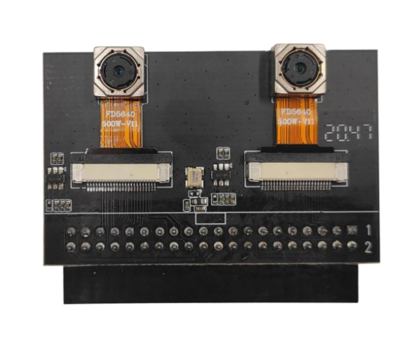
Ne Wi fpeeda Dse4 BooW-Vin, 300". rites i = aa [hme es ae tsa Bey a 外
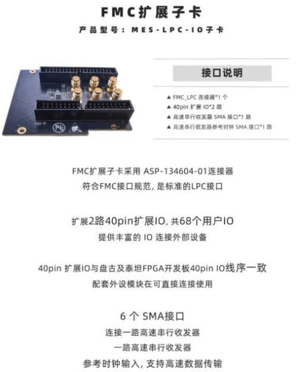
FMC 扩展子卡 产品型号：MES-LPC-IO 子卡 接口说明 FMC_LPC 连接器 1 个 40pin 扩展 IO*2 路 高速串行收发器 SMA 接口*1 路 高速串行收发器参考时钟 SMA 接口*1 路 FMC 扩展子卡采用 ASP-134604-01 连接器 符合 FMC 接口规范，是标准的 LPC 接口 扩展 2 路 40pin 扩展 IO，共 68 个用户 IO 提供丰富的 IO 连接外部设备 40pin 扩展 IO 与盘古及赛坦 FPGA 开发板 40pin IO 线序一致 配套外设模块在可直接连接使用 6 个 SMA 接口 连接一路高速串行收发器 一路高速串行收发器 参考时钟输入，支持高速数据传输
保留图中“在可”和重复的“一路高速串行收发器”等表述。
FMC扩展子卡 产品型号: MES-LPC-10子卡 接口说明 FC Lec IR A 40pin #78 10°28 aR OR SMA BO" 路 a NieRMeA nH SHA or) FMC扩展子卡采用 ASP-134604-01连接器 符合FMC接口规范, 是标准的LPC接口 扩展2路40pin扩展10, 共68个用户I0 提供丰富的 10 连接外部设备 40pin 扩展10与盘古及秦坦FPGA开发板40pin 10线序一致 配套外设模块在可直接连接使用 6个 SMA接口 连接一路高速串行收发器 一路高速串行收发器 参考时钟输入, 支持高速数据传输
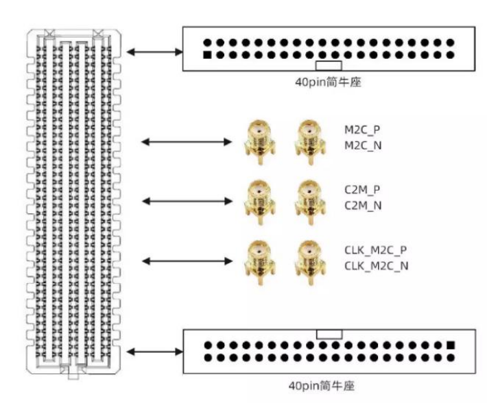
40pin 简牛座（两处） M2C_P / M2C_N C2M_P / C2M_N CLK_M2C_P / CLK_M2C_N
仅转录信号名，连接拓扑见原图。
一 ee ge 5 40pin简牛座 8 Ps Cee & 5 M2C_P M2C_N 多 +B O38 aC 3g bg ec C2M_P Up. aC + i) — & & C2M_N > 9 + i) a » CLK_M2C_P a H — & & CLK_M2C_N CC HH i i 人 人 本 雪人和人四国 rt 40pin简牛座
全国大学生嵌入式芯片与系统设计竞赛 2026 选题指南（紫光同创） 一、 赛题背景与应用前景 RISC-V 作为一种基于精简指令集（RISC）原则的开源指令集架构（ISA），凭借其模块化、 可扩展和开源免费等特性，正迅速重塑全球半导体产业格局。设计高效、稳定且具备高性能的 RISC-V 处理器，不仅是嵌入式开发和集成电路设计的核心技能，更是推动国产芯片在各类前 沿场景中深度落地的重要基石。本赛题旨在引导参赛者在 推荐的紫光同创 FPGA 平台上实现一 个支持 RV32I 指令集的 CPU 核心，通过真实的软硬件协同设计与性能测评，探索开源架构的无 限潜能。 二、 核心设计任务 参赛者需使用 Verilog/SystemVerilog 硬件描述语言，基于推荐的紫光同创 FPGA 自制开发 板完成以下处理器设计任务： 基础任务： 1. 处理器内核构建：实现一个支持 RV32I 基础整数指令集的通用处理单元。 2. 流水线架构设计：设计不少于 3 级的流水线结构，并妥善处理数据冲突与分支跳转等 底层逻辑。 3. 外设系统集成：集成基础外设（如 UART 控制器、GPIO 等）用于系统控制与结果输出。 高阶任务： 1. 存储系统优化：设计并实现支持 2 路组相联的指令与数据 Cache 系统，优化总线突发 传输效率。 2. 高级控制逻辑：实现动态分支预测器（如 BTB）以及完整的 RISC-V 异常/中断处理机 制。 3. AI 加速：基于设计的 RISC-V 处理器，构建一整套的边缘 AI 加速单元，移植 YOLO 或 轻量版大模型，融合一种或者多种传感器或者显示设备，完成图形的加速或语义识别 或者机械控制等功能。 三、 测评工具与开发环境 1. 硬件开发平台：基于赛题推荐的 FPGA 开发板（如上）或基于紫光同创 FPGA 为核心 的开发板。 8
全国大学生嵌入式芯片与系统设计竞赛 2026 选题指南（紫光同创） 2. 软件编译工具链：riscv32-unknown-elf-gcc。 3. 性能基准测试：采用 CoreMark v1.0。 四、 性能测评标准 1. 性能指标 性能评分基于 CoreMark 的跑分结果，公式如下： CoreMark_Iterations Score= Total_Time×Frequency (1) 执行效率 ：比较 CoreMark/MHz。分值越高，代表流水线设计越优化。 (2) 时钟频率：在满足时钟约束的前提下，处理器能达到的最高工作频率。 (3) 资源效率 ：计算 CoreMark / LUTs。即在消耗单位逻辑资源的情况下，换取的性 能提升。 2. 应用场景构建 作品应用场景的构建，基于实际的应用场景，如基于 RISCV 的游戏机、工控机、适配 采集卡，逻辑分析仪，图像加速卡，网络加速卡等特定应用场景。 （1）模型的性能和资源：模型的整体资源，时序，主频。 （2）基于特定模型 AI 处理效率：综合评估延迟和识别率。 3. 技术实现与文档 (1) 代码规范：模块化程度、时序约束的合理性以及注释的完整性。 (2) 分析报告 ：需提交详细的性能分析文档。利用 ILA 抓取的波形图，分析 CPU 在 执行 CoreMark 关键算法时的流水线效率。 五、 参赛注意事项 1、CoreMark 测试时必须设置迭代次数，确保运行时间不低于 10 秒，以获得准确的平 均数据。 2、该赛题初赛不提供板卡借用（进入决赛由企业提供板卡借用），初赛阶段参赛选 手自备板卡或者直接调用远程 FPGA 实验平台： http://www.logicmatrixsemi.com:5174/ ⚫ 选题二：基于紫光同创 FPGA 的任意角度的畸变矫正 9
全国大学生嵌入式芯片与系统设计竞赛 2026 选题指南（紫光同创） 一、赛题背景与应用前景 在现代机器视觉、自动驾驶、智能交通以及航空航天等前沿领域，光学成像系统扮演 着至关重要的角色。然而，受限于镜头的光学物理特性，实际采集到的图像往往伴随着不 同程度的几何畸变（如径向畸变、切向畸变等）。这种“看”到的世界与真实物理世界的偏 差，会导致直线弯曲、边缘拉伸，进而严重影响后续的图像拼接、目标检测、高精度测量 等算法的准确性。因此，相机标定与畸变矫正成为了连接像素坐标系与现实物理坐标系的 桥梁，是视觉测量系统不可或缺的关键步骤。 传统的畸变矫正多依赖后端的 CPU 或 GPU 进行软件计算，这在处理高分辨率视频流 时往往面临实时性不足、功耗较高的问题。本赛题要求利用紫光同创 FPGA 实现任意角度 下的高精度、低延迟图像畸变矫正。 二、核心设计任务 参赛者需基于紫光同创 FPGA 开发平台，使用 Verilog/SystemVerilog 等硬件描述语言，设 计并实现一套完整的图像畸变矫正系统。 基础任务： 1. 图像采集与显示链路：实现视频流（如 HDMI 或摄像头接口）的采集、缓存与显示， 构建完整的图像数据通路。 2. 畸变模型实现：在 FPGA 中实现基于二阶径向畸变（及切向畸变）的坐标映射算法， 将带有畸变的原始像素坐标转换为无畸变的理想坐标。 3. 图像重采样：实现基础的图像插值算法（如双线性插值），根据映射后的坐标提取像 素值，消除矫正后图像中的黑边或空洞现象。 高阶任务： 1. 任意角度与动态矫正：结合外部传感器（如 IMU）或上位机指令，实现相机在发生倾 斜或旋转等任意角度变化时的动态畸变矫正与仿射变换。 2. 硬件加速与流水线优化：针对复杂的坐标映射和浮点/定点运算，实现图像的实时矫正。 3. 自适应预处理：针对强光、夜间等复杂光照环境，在矫正前或矫正过程中集成自适应 Gamma 校正或直方图均衡等图像增强算法，提升极端条件下的矫正效果。 10
全国大学生嵌入式芯片与系统设计竞赛 2026 选题指南（紫光同创） 三、测评工具与开发环境 1. 硬件开发平台：基于赛题推荐的 FPGA 开发板（如上）或基于紫光同创 FPGA 为核心 的自制开发板。 2. 开发工具链：紫光同创 Pango Design Suite (PDS) 集成开发环境。 3. 标定与测试工具：高精度棋盘格/圆点网格标定板、OpenCV 标定工具箱（用于生成基 准畸变参数）、上位机图像质量分析软件。（测试环境由参赛者自行准备） 四、性能测评标准 1. 功能验证与算法精度 （1） 标定参数解析 ：能够正确读取并解析相机内参矩阵（焦距、主点）及畸变系数 （k1, k2 等）。 （2）矫正效果评估 ：使用标准测试图卡（如倾斜的黑色方块或网格线），通过 MTF50 或 SFR（空间频率响应）测试评估矫正后的清晰度；直线度误差需控制在极低范围 内，边缘无明显拉伸或断裂。 2. 实时性能与资源效率 （1） 处理延迟与帧率：系统需达到实时处理标准（如 1080P@30fps 或 60fps），测 量从图像输入到矫正后输出的端到端硬件延迟（越低得分越高）。 （2） 资源利用率 ：评估系统消耗的 LUTs、寄存器及 DSP 资源。在满足性能要求的 前提下，资源占用越少得分越高。 3. 工程规范与文档 （1）代码规范：模块化程度、时序约束的合理性以及注释的完整性。 （2）分析报告 ：需提交详细的性能分析文档。 五、参赛注意事项 1. 标定数据规范：测试时使用的畸变参数需基于真实相机的标定结果，不可使用随意编 造的参数，以保证矫正效果的真实性。 2. 硬件约束：需严格遵守紫光同创 FPGA 的硬件资源限制，注意跨时钟域处理（CDC） 及存储器（BRAM/eRAM）的合理分配，避免因时序问题导致画面撕裂或系统跑飞。 3. 演示要求：决赛现场需提供实时的视频流演示，评委可能会要求动态改变相机的物理 11
全国大学生嵌入式芯片与系统设计竞赛 2026 选题指南（紫光同创） 角度或更换测试图卡，以验证系统的鲁棒性。 ⚫ 选题三：以紫光同创 FPGA 为核心的高级辅助驾驶系统 一、 赛题背景与应用前景 随着智能网联汽车技术的快速发展，高级驾驶辅助系统（ADAS）已成为提升行车安 全、推动自动驾驶落地的关键。FPGA 凭借高并行处理能力与低延迟特性，在实时图像处 理与传感器融合中优势显著。本赛题要求以”紫光同创 FPGA + ARM”为核心架构，充分利 用 FPGA 的并行计算能力与 MCU 的复杂逻辑控制优势，构建一套软硬协同的高级辅助驾 驶系统。该方案要求系统能实时感知汽车周围环境，能识别斑马线，识别路上行人，识别 道路路障等信息，系统能进行模拟虚线变道、超速提醒、碰撞提醒、打转向灯等常用。 二、 核心设计任务 参赛团队需基于紫光同创 FPGA 或 FPGA+MCU（可采用 RISCV 软核或者外接 ARM，要求处理性能不高于 RK3568）构建软硬协同的高级辅助驾驶系统，充分发挥异构 计算优势。 基础任务： 1. 图像采集与显示：通过板载图像视频输入接口，实现基于 HDMI、摄像头（如 OV5640） 或其他图像的输入接口实现图像的输入，通过 LCD 或 HDMI 的图像输出，完成图像采 集-处理-显示的全流程闭环，实现道路环境的感知。 2. 软硬协同通信：设计并实现 MCU 与 FPGA 之间的高速通信机制（如 PCIe 接口），完 成数据交互与指令控制。 3. 图像处理与识别：基于 FPGA 实现系统对道路周围环境的监测和特定场景的感知。 高阶任务： 1. 多路图像采集与低延迟传输：充分应用 FPGA 与 ARM 的高速通信接口，实现至少四路 的视频流的并行采集与低延迟传输（模拟车的前、后、左、右），优化数据流带宽。 2. 复杂应用场景构建：针对特定交通场景（如夜间道路、复杂交通路口），构建完整的 感知和避障功能。 3. AI 模型部署与实时识别：在 MCU 端部署轻量级 AI 模型进行，实现多路视频的实时、 高精度、低延迟识别和自主道路规划及辅助驾驶。 三、 测评工具与开发环境 1. 硬件开发平台：基于赛题推荐的 FPGA 开发板（如上）或者基于紫光同创 FPGA 为核 12
全国大学生嵌入式芯片与系统设计竞赛 2026 选题指南（紫光同创） 心的自制开发板。 2. 软件工具链：PDS，以及 ARM/RISCV 端的 Linux/RTOS 开发环境。 四、 性能测评标准 1. 图像采集与处理 （1）能正确采集一路或多路视频，并能进行图像的拼接或融合，模拟汽车全景影 像。 （2）能进行基础图像处理，如灰度化、去噪、二值化、色彩空间转换等算法对复杂 道路场景进行识别和优化。 （3）系统整体处理延迟与实时帧率满足高级辅助驾驶的低延迟需求。 2. 场景构建与工程价值 （1）能基于特定场景（如强光、夜间、复杂十字路口）完成道路的自主规划。 （2）利用 AI 模型或高效算法完成图像的实时处理，识别准确率高，且端 到端延迟低。 （3）更真实的道路效果模拟及效果呈现。 3. 测试方式 （1）基于给定的十字路口场景视频，此时假定车辆在左车道、右车道或者直行车道 三个车道中的任意车道：当红灯亮起时，车辆停止行驶；当绿灯亮起时，车辆开始行 驶；当亮红灯，强制车辆行驶时，车辆报警；可通过输出图像叠加的方式指示车辆行 驶行为（叠加左、右、直行箭头），或者通过 LED 的方式指示车辆的行驶行为 （如：LED0 代表车辆左转，LED1 代表车辆直行，LED2 代表车辆右转），通过按键 模拟切换车辆所在的车道；通过按键模拟车辆的停止或者行驶行为；通过 LED 亮起 或熄灭模拟车辆报警，或者通过输出图像叠加红色模拟报警。 （2）基于给定的道路图片或者视频，为虚线时，车辆进行变道，为实线时直行，当 给到强制实线变道指令时报警；可通过输出图像叠加的方式指示车辆行驶行为（叠加 左、右、直行箭头）或者通过 LED 的方式指示车辆的行驶行为（如：LED0 代表车辆 左转，LED1 代表车辆直行，LED2 代表车辆右转）；通过按键模拟左转向或者右转 向； （3）提供带导航的真实道路视频，参赛者根据导航完成模拟智驾功能； （4）其他常见的 1~2 个道路视频或者图片场景：如行人闯红灯的汽车刹车等。 注意：现场评测用 U 盘提供所有或者 1~4 种测试场景。 4. 技术实现与文档 （1）代码规范：Verilog/C 代码模块化程度高，时序约束合理，注释完整， 无明显时序违例。 （2）分析报告：提交详细的系统架构设计、软硬协同数据流分析、资源占 用及性能测试报告。 13
全国大学生嵌入式芯片与系统设计竞赛 2026 选题指南（紫光同创） 五、 参赛注意事项 (1) 注重工程实用性：参赛者应重点考虑场景构建的完整性与系统的鲁棒性，避免仅 停留在算法仿真阶段，需提供可现场演示的硬件实物。 (2) 严格把控时序：FPGA端图像处理流水线设计需充分考虑时序完整性，确保在目标 分辨率与帧率下无时序违例。 (3) 规范提交材料：需提交完整的技术文档（含核心亮点预览）、硬件实物、1080P 演示视频（3 分钟以内）及打包的工程源码。 (4) 该赛题现场用 U 盘提供测试数据集，包含：十字路口、变道、红绿灯判断等。 ⚫ 选题四：开放选题：基于紫光同创 SOPC 的创新应用开发 参赛者基于紫光同创推荐的 SOPC 板卡（如上：SOPC 开发平板），以传统 SOPC 应用热点 应用方向为背景，自主命题，在 SOPC 平台上实现 AI 识别、图像处理或者其他创意开发，以作 品创新性、趣味性、实用性进行综合评判。 14
全国大学生嵌入式芯片与系统设计竞赛 2026 选题指南（紫光同创） 四、开发板获取途径 1、紫光同创将提供总计 200 套盘古 50 和盘古 676 开发板借用； 2、软硬协同机器视觉提供 5 套 RK3568_MES2L100H； 3、企业将根据报名队伍的简介及对相应赛题的解题思路综合评判借用，未获得板卡借用 资格的队伍不代表没有参赛资格，参赛者亦可自行到淘宝店铺购买： https://shop372525434.taobao.com/（提供参数队伍编号，所有板卡及模组参赛折扣价格 出售） 五、技术支持与技术资源 技术支持论坛（远程硬件调用）：www.szlogicmatrix.com Bilibili 技术视频网址：https://space.bilibili.com/507416742 2026 年紫光同创技术支持 QQ 群：1070870039；930128629 15
紫光同创 FPGA 开发交... 群号：930128629
群名在原图中即被截断。二维码本身不是 OCR 文字，未解码目标链接。
ZOCEIORPCMT RS. WN) HS: 930128629 ese Seee ee : eee 2。 3 ©: © $ 3 e Se a+ e 23° e RID ecoce @ eee 28 eee eee ee @ @@6@ ee © e0c0e eee ee @ee e08 8280880 6 eee ece ee @ e6 ee eco bet | 3 3 eee e See” Seece ee
紫光同创 FPGA 开放交... 群号：1070870039
群名在原图中即被截断。二维码本身不是 OCR 文字，未解码目标链接。
紫光同创FPGA开放交 Ghee 群号: 1070870039 a) ee ee ee eee ee ee SS ee @ee @ @ e@eee ee ee eee eee @ ee @ e008 ee ee ee @0ee 08 @ eee eco @ ee eee eee eee ee ecco ee ee eee ecce $3 @eoee eee @
全国大学生嵌入式芯片与系统设计竞赛'2026 FPGA 创新设计赛道选题指南 （上海安路信息科技股份有限公司） 1
目录 目录 ..................................................................................................................................................... 2 一、 公司介绍 ...................................................................................................................................... 3 二、 竞赛技术平台 .............................................................................................................................. 4 三、 选题方向 ...................................................................................................................................... 1 四、 开发板获取途径 ........................................................................................................................ 16 五、 技术支持与技术资源................................................................................................................... 1 六、 其它 .............................................................................................................................................. 1 2
全国大学生嵌入式芯片与系统设计竞赛'2025 安路赛道——选题指南 一、 公司介绍 上海安路信息科技股份有限公司（股票代码 688107）专注于 FPGA 芯 片和专用 EDA 软件的研发和产业化，量产产品成功进入工业控制、网络通 信、消费电子、数据中心等主流领域。公司承担了多个国家及上海市级重大 项目，获得国家专精特新“小巨人”、上海市科技进步奖、上海市企业技术 中心、上海市专利试点、高新技术企业等。 2026 年安路科技拟在推动“国产 FPGA 教学”“集成电路发展”等方向 与高校紧密合作，支持高校人才培养改革。 每个成功参赛提交作品的同学均可获得一套定制参赛礼物。 企业额外奖励： 最佳奖项（最佳工程，最佳创意等等）、安路科技杯奖。 所有获得一等奖及以上的参赛队伍人员信息，均入企业 HR 人才库，后期 招聘时优先录取。 根据最终获得实际数量和情况发放。 7
全国大学生嵌入式芯片与系统设计竞赛'2025 安路赛道——选题指南 二、 竞赛技术平台 ⚫ 推荐平台 1 名字 （一）、型号名称：HX4S20C 开发板 （二）、硬件参数配置 安路 EG4 系列 EG4S20BG256 FPGA LUTs：19600 片内集成 SDRAM：2M x 32bit 嵌入式片上 RAM：64 块 9Kb(ERAM9K), 16 块 32Kb 调试下载方式 板载 USB Cable 下载器，USB-B 口 供电方式 USB 口 5V 供电板载：5V、3.3V、2.5V、1.2V 电路系统 4 组输入按键 4 组拨码开关 人机互换信号 1 组控制蜂鸣器开关 1 组切换数码管和双色 LED 开关 4 组 LED 发光管 1 组电源显示 LED 显示信号 1 组配置信号显示 LED 8 组数码管 7
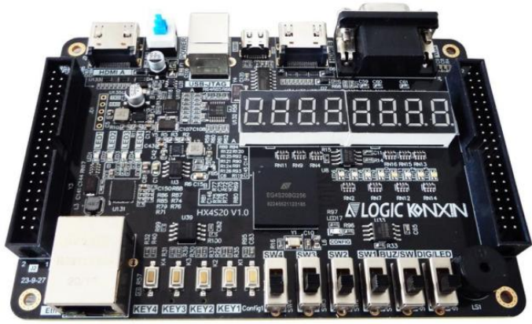
市避 二 电 lek = 引 EEE 口品局 BG 0 V1.0 IC YONXIN 2 “加 mm 027 下， it r DG 呵 CR CRN
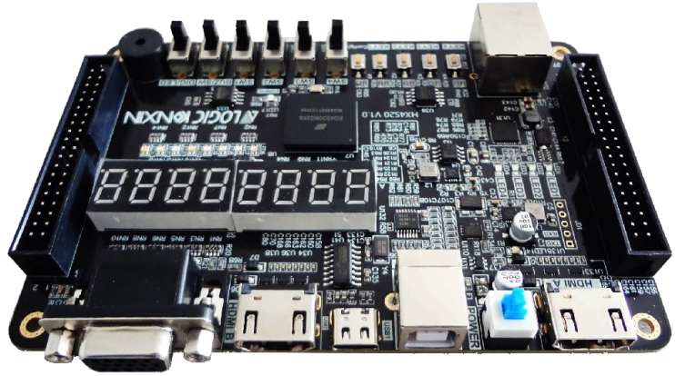
Ca DAP 下本 四 外 全 xs aa pm 8 co WSO, ernest iP ii is sa ms get Sean Wott oO La oss or: Se wo RN i) iy. a i ids | ji [nn] Pap:
全国大学生嵌入式芯片与系统设计竞赛'2025 安路赛道——选题指南 8 组双色 16 个 LED USB 转 UART 通信接口 千兆以太网口 蜂鸣器 掉电配置 Qspi Flash 16MB 存储器 SPI Flash 64MB TF 卡槽，可接插 TF 卡存储器 双 HDMI 接口，可作为视频信号输出 视频处理接口 12 位 VGA 接口 2 组 40PinDC3 接口(多达 72 组扩展 IO)供用户外扩可扩展 LCD、ADC、DAC、 用户外扩 GPIO 摄像头模块、电机、HDMI 输入模块、交通灯、点阵、键盘、语音处理等。 时钟源 50M 有源时钟 配件 USB 数据线、杜邦线若干个 （三）、技术支持 1）开发板的使用手册； 2）开发板的原理图； 3）开发板的基础实验，包括接口例程； 4）提供相关调试软件； 5）提供参赛样例，并配有样例解析。 （四）、提供样例 例程路径 例程描述 lab_ex_4 使用 SD/TF 卡存储图片，读取图片至 SDRAM 中，HDMI 显示，支持按键手动切 图、自动轮播 lab_ex_5 使用 SD/TF 卡存储 640×480 24 位非压缩 BMP 图片，读取至 SDRAM 中，通过 HDMI_B 接口显示，支持按键手动切图、自动轮播及 HDMI 音频输出测试音 板卡资料 通过网盘分享的文件 赛题一：HX4S20_Contest_202606 链接: https://pan.baidu.com/s/1ysv_FmmgZKuM0rBiHfSv8w 提取码：M5N1 7
全国大学生嵌入式芯片与系统设计竞赛'2025 安路赛道——选题指南 ⚫ 推荐平台 2 名字 (一）、型号名称：HX1P35A 开发板 （二）、A.开发板硬件参数配置 安路 PH1P 系列:PH1P35MDG324 LUTs：38184 DFFs:42432 FPGA dis-RAM:507Kbit ERAM:2160Kbit MIPI:2 DSP:40,PLL:6,TVS:6,MCU:1 调试下载方式 板载 AL-LINK-FT 下载器,Type-C 接口 供电方式 ①板载 USB 口 5V 供电、②12DC-5V：5V、3.3V、2.5V、1.2V 电路系统 4 组输入按键 4 组拨码开关 人机互换信号 1 组控制蜂鸣器开关 1 组切换数码管和双色 LED 开关 显示信号 4 组 LED 发光管 7
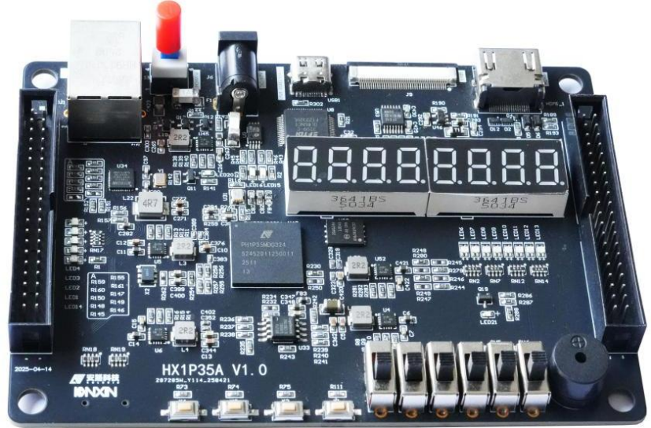
_—— “7p a eae i RA iis ie 1101. 21. oor jm Lt i a. ee a 站ave， 请 BB By ee 1a Ete =B2. ed X1P: 1.0 LN -加 已0 一
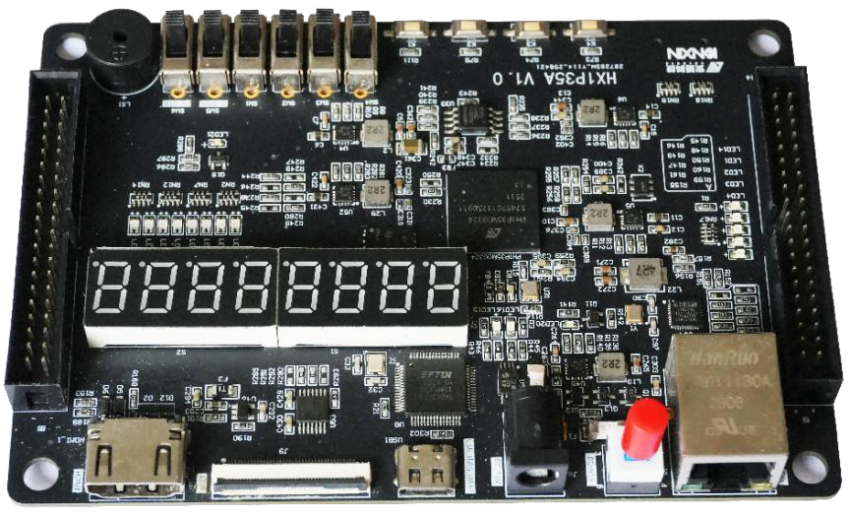
OLA d XH he he er Aeetes nie a Bet eae 8 ni i) i=) 最 Lith) = | ooot aon 图 ales a OOOO: pA ssi Pr fox EM bis | ear rl Ea 下 wll ws Ss 一-一， | we 0
全国大学生嵌入式芯片与系统设计竞赛'2025 安路赛道——选题指南 1 组电源显示 LED 1 组配置信号显示 LED 8 组数码管 8 组双色 16 个 LED USB 转 UART 通信接口 千兆以太网口 蜂鸣器 掉电配置 Qspi Flash 128MB 存储器 SPI Flash 128MB TF 卡槽，可接插 TF 卡存储器 输出：HDMI 1 个，可作为视频信号输出 视频处理接口 专用 MIPI 输入：FPC40 芯接口一个 2 组 40PinDC3 接口(多达 72 组扩展 IO)供用户外扩可扩展 LCD、ADC、DAC、 用户外扩 GPIO 摄像头模块、电机、HDMI 输入模块、交通灯、点阵、键盘、语音处理等。 时钟源 50M 有源时钟 配件 DC12V/1A 电源适配器、USB 数据线、杜邦线若干个 B.SC500CS 摄像头配置(参赛者自购） Smartsens:SC500CS 应用：智能家用、移动、视频会议等 像素：500 万 摄像头：详细请参考数据 像素阵列：2600H x 1952V 手册 最大图像传输速率： 2592H x 1944V@30fps 10bit 输出接口：10/8-bit 2Lane MIPI 连接口：24P-FPC24, 7
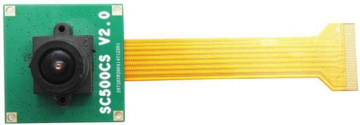
a
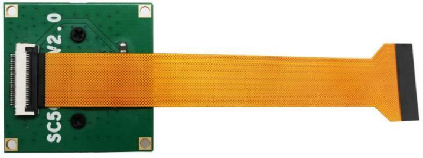
未识别到文字
全国大学生嵌入式芯片与系统设计竞赛'2025 安路赛道——选题指南 连接口 24P-FPC 板和摄像头连接线 提供 40P 转 24P FPC 软线 （三）、技术支持 1）开发板的使用手册； 2）开发板的原理图； 3）开发板的基础实验，包括接口例程； 4）提供相关调试软件； 5）提供参赛样例，并配有样例解析。 （四）、提供样例 例程路径 例程描述 lab_ex_1 使用 MIPI 摄像头实现图像采集，存储至片内集成 DDR 中，并通过 HDMI 接口驱 动显示屏，实现原始图像实时显示。 lab_ex_2 使用 MIPI 摄像头实现图像采集，对采集到的图像进行边缘检测算法处理，存储至片 内集成 DDR 中，并通过 HDMI 接口驱动显示屏，实现边缘检测图像实时显示。 lab_ex_3 使用 MIPI 摄像头实现图像采集，存储至片内集成 DDR 中，并通过 HDMI 接口驱 动显示屏，在实时显示的图像上叠加了安路 Logo 与运行计数器，实现带叠加信息的 图像实时显示。 板卡资料 通过网盘分享的文件 赛题二：HX1P35A_Contest_202606 https://pan.baidu.com/s/12hjB7BiAxT3CIVqzh4Amnw 提取码：Q614 7
全国大学生嵌入式芯片与系统设计竞赛'2025 安路赛道——选题指南 ⚫ 推荐平台 3 名字 （一）、型号名称： MLK-AFH03-AFC03-2GB LPDDR4X+32GB EMMC AFC03 芯片参数：RK3576J 部分 RK 型号 RK3576J CPU：四核 Cortex-A72 + 四核 Cortex-A53，频率最高 2.2GHz GPU：Mail G52 MC3，支持 OpenGL ES 1.1/2.0/3.2、OpenCL 2.1、Vulkan 1.2 NPU：6 TOPS 支持int4/int8/int16/FP16/BF16/TF32，支持TensorFlow/Caffe/Tflite/Pytorch/Onnx /Android 等深度学习框架 支持 HDR 和 3DNR 的 16M Pixel ISP RK 参数 Decoder:支持 4K@60fps /4K@120fps H.264/ H.265 Encoder:支持 4K@60fps H.264/H.265 支持多显示器、支持 HDMI2.1/eDP1.3/MIPI DSI/DP1.4 等 支持 USB2.0/USB3.0/PCIE2.1/SATA3.0/RGMII 等 芯片工作温度：-40℃~+85℃ 内存：2GB，共 1 片 LPDDR4X 频率：2133MHz； EMMC 32GB UFS2.0 UFS2.0 FLASH 空贴 7
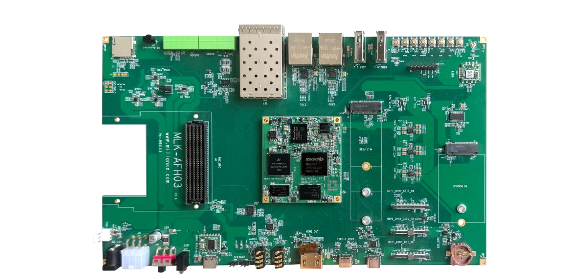
从 q ee CK iS ee 1 = ee ey a = a oe | es Bt ony uf prea, = in ™ ue wr 5 a mt 0 FI Th: mal tr! f 4+) ve nom a fa Pe cot 了 js ©: - enh my wy = rt ih nom oso east 23 i re a tat = Si ii santo st nF "i i 2H son Is ey a 负 on r = ts ag ae % ED Le
全国大学生嵌入式芯片与系统设计竞赛'2025 安路赛道——选题指南 时钟 24MHz 无源时钟 UART 接口 底板 1 路 TYPE-C 的 UART 接口，1 路 UART 端子接口。用于串口通讯 USB2.0 Host 接口 底板 2 路 USB2.0 接口，可用于接 U 盘等外设 HDMI2.1 输出接口 底板 1 路 HDMI2.1 TX 接口，支持 HDMI FRL 模式并向下兼容 HDMI ETH 接口 底板 2 路 千兆以太网接口 10/100/1000Mbit/s PCIE2.0 M.2 接口 底板 1 路 PCIE2.0 的 M.2 接口，1Lanes 4G 接口 底板 1 路连接 4G 模块接口 MIPI_CSI 接口 底板 2 路 MIPI CSI 输入接口，支持 MIPI V1.2 版本，4Lanes，支持最大 2.5Gbps。 MIPI_DSI 接口 底板 1 路 MIPI_DSI 输出接口，支持 MIPI V2.0 版本，4Lanes，支持最大 2.5Gbps。 WIFI/BT 接口 底板 1 路 WIFI/BT 模块 Sensor 芯片 底板 1 路红外接收传感器，1 路姿态传感器（陀螺仪） I3C 接口 底板 1 路 I3C 接口 SARADC 接口 底板 1 路 SARADC 接口 CAN 底板 1 路 CAN 接口 RS485 接口 底板 1 路 RS485 接口 音频接口 底板 1 路 AUDIO 接口，1 路 MIC 接口以及 2 个喇叭接口 TF Card 接口 底板 1 路 TF 卡接口 SPI Flash SPI FLASH ,用于固化程序，存放数据，空贴 底板 RECOVER 检测口按键、RESET 按键等其他功能按键以及 1 个普通按键；电源指示灯及 1 个普 KEY/LED 通 LED AFC03 芯片参数：FPGA 部分 FPGA 型号 PH1A90SEG324 LUT4s 115,776 DFFs(Flip-Flops) 128,640 Dis-RAM 1680 FPGA 参数 20K 272 ERAMa Total(Kbits) 5440 DSP 240 PLL 12 DDR3 DDR3L 256MB，数据带宽 1866MHz*16bit FLASH 128Mbit SPI FLASH ,用于固化程序，存放数据 7
全国大学生嵌入式芯片与系统设计竞赛'2025 安路赛道——选题指南 时钟输入 100MHz 差分时钟*1，25MHz 单端时钟*1 JTAG 底板使用 TYPE-C 接口进行烧录 TYPEC UART 底板 1 路 TYPEC UART RTC$EEPROM 底板 I2C 接口挂 实时时钟芯片 1 路，24LC02B-I/SN 1 路 SFP 底板 2 路 SFP，单路可支持 10.3125Gbps FMC-HPC 底板有 HPC 接口的 FMC 1 路,具有 24 对差分对/4GT Lane@10.3125Gbps+2GT REF_CLK 核心板 底板 MIPI 4LANE RK3576J 与 \ FPGA 交互部分 PCIE2.0x1 PCB 层数 12 层 6 层 时钟输入 100MHz 差分时钟*1，25MHz 单端时钟*1，25MHz 无源时钟*1 JTAG \ 1 路 TYPE-C 接口的 JTAG 电源管理 使用瑞芯微专用 PMIC 分列电源供电 电源输入 5V@3A 12V@3A 外形尺寸 55(mm)*60(mm) 160(mm)*270(mm) 连接器型号 DF40C-100DP-0.4V*6 DF40HC(3.0)-100DS-0.4V*6 最大功耗 24w 连接器合高 3mm 散热方式 被动散热 电源开关 1 个 3 脚电源开关,供电 12V 用于切换 ON/OFF 板卡资料 通过网盘分享的文件 链接: https://pan.baidu.com/s/1EjqUiFM8cBeVD1k_sRK1pQ 提取码: j73u 7
全国大学生嵌入式芯片与系统设计竞赛'2025 安路赛道——选题指南 ⚫ 推荐平台 4 名字 （一）、型号名称： MLK-F3P-DR1M90G MLK-F3P-DR1M90G 硬件参数 DR1 型号 DR1M90GEG400 处理器 双核 Cortex-A35 64 位处理器 处理器扩展 NEON™&单/双精度浮点 CPU 最高主频 1Ghz 定时器 ARM 通用定时器 x2 DMA 频道 8（4 专用于可编程逻辑） JPU 支持 JPEG 硬编解码 DR1 参数 512x MAC， 256KB SRAM， 0.4T 算力+定制算子能 NPU 力 LUTs/DFFs(Flip- 94464/104,960/240/8 Flops)/DSP/PLL Dis-RAM/On-Chip RAM 1340(Kb)/256(KB) 20K 280 ERAM Total (Kbits) 5600 DDR3/DDR3L(单列 1333 (Mbps) DIMM) 核心电源 内核 0V95 电源最大输出 8A 确保系统稳定 PS DDR DDR3 1GB（两片） 1066MHZ*32bits EMMC 8GB SD 卡 1 路 TF 卡接口，一路预留的 TF1 卡接口（不焊接 EMMC 时可使用） FLASH 128Mbit QSPI FLASH 1 片 速度 4bit*125Mbps PS 晶振 33.3333MHZ(核心模块上) PL 晶振 100MHZ(底板上) 7
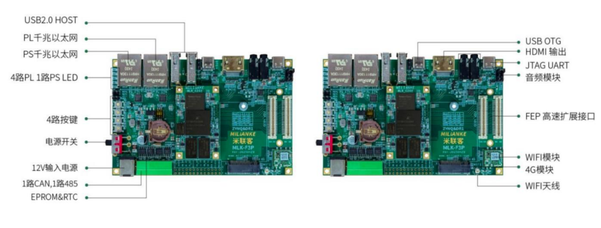
USB2.0 HOST；PL 千兆以太网；PS 千兆以太网；4 路 PL 1 路 PS LED；4 路按键；电源开关；12V 输入电源；1 路 CAN,1 路 485；EPROM&RTC；USB OTG；HDMI 输出；JTAG UART；音频模块；FEP 高速扩展接口；WIFI 模块；4G 模块；WIFI 天线。
图中文字为 EPROM&RTC，正文表格另写 EEPROM/RTC；原始拼写未统一。
USB2.0 HOST PL千兆以太网 USB OTG PS千兆以太网 HDMI 输出 favs Cia Te’ JTAG UART worstiee ye! lio rr 4路PL 1路PSLED er eey ewery onyory 音频模块 x | FEP 高速扩展接口 4路按键 电源开关 米联客 EE a = WIFI模块 12V输入电源 Cy 4G模块 1路CAN,1路485 WIFI天线 EPROM&RTC
全国大学生嵌入式芯片与系统设计竞赛'2025 安路赛道——选题指南 千兆以太网 PS 端 1 路千兆网，PL 端 1 路千兆网 HDMI 1 路 HDMI 输出支持，最大输出 1080@60fps USB2.0 1 路 USB2.0 的 TYPE_C 接口 WIFI 1 路 WIFI+BT 模组 4G 1 路 4G 接口 USB2.0x2 2 路 USB2.0 接口 UART&JTAG 1 路 UART&JTAG 二合一的 TYPE_C 接口 AUDIO 1 路输入 1 路输出 GPIO 1 路 GPIO 接口 CAN 1 路 CAN 接口 RS485 1 路 RS485 接口 EEPROM 1 路 24LC02 RTC 1 路 DS1337 按键 4 路按键 LED 5 路 LED FEP 扩展 IO FEP 高速扩展接口，HR BANK，48GPIO/24 对差分，修改底板跳线帽调整电压 核心模块 5V@3A 电源输入 功能底板 12V@3A 连接型号 核心模块 DF40C-60DP-0.4Vx1 DF40C- 100DP-0.4Vx2 DF40HC(3.0)-60DS-0.4V(51)x1 底板 DF40HC(3.0)- 100DS-0.4V(51)x2 FEP-底板 泰科 5177983 FEP-子卡 泰科 5177984 核心模块 30mm*50mm 外形尺寸 功能底板 125mm*80mm 连接器合高 3mm 板卡资料 通过网盘分享的文件 链接: https://pan.baidu.com/s/14QxuOeN91pFe-4cZUVZ9-g 提取码: r4s4 7
全国大学生嵌入式芯片与系统设计竞赛'2026 选题指南（公司名称） 三、 选题方向 ⚫ 选题一：基于安路 EG4S20 的 HDMI 多媒体播放系统 1.1 推荐选用平台 1：HX4S20C 1.2 赛题简介 基于 FPGA 的 HDMI 多媒体播放系统在数字广告牌、商业展陈终端、应急信息发布、车 载辅助显示及教育演示等场景中具有较高应用价值。与依赖通用处理器的软件栈方案相比， FPGA 方案能够在保证较低系统复杂度的同时，实现更确定的时序、更低的显示延迟和更高的 系统可靠性。 本赛题要求使用定制开发板，以安路科技 EG4S20BG256 器件作为核心平台。该器件采 用 BG256（17mm×17mm）封装，提供 19,600 个 LUT、19,600 个触发器、与一块 SDRAM（2M×32bits）、4 个 PLL、16 路全局时钟以及最多 193 个用户 IO，适合构建存储 介质管理、帧缓存控制、视频显示与音频输出一体化系统。 1.3 赛题要求 在基于安路 EG4S 系列芯片的 FPGA 开发平台上，以音视频融合的多媒体应用为方向，自主 设计并实现一个具有明确应用场景的多媒体展示系统。 系统需体现 FPGA 在并行处理、实时控制、低延迟显示、音画同步及多源信息融合等方面 的优势，并形成稳定的运行状态和良好的现场演示效果。采用的算法或技术方法例如（但不限 于）：本地图像资源扫描、BMP 图像解析、SDRAM 帧缓存管理、HDMI 视频显示、HDMI 音频输出、交互控制、音视频联动展示等，或多个算法的有机结合。 参赛作品中所展示的所有算法、控制逻辑及数据处理流程应在 FPGA 中自主编程实现。允 许根据作品需要搭配外围电路或成品模块，但不得带有额外处理器（无论用于辅助控制还是算 法预处理）。若系统规模较大或功能较为复杂，可使用多块同款 FPGA 板卡构建主从结构，通 过自定义链路将不同功能模块合理部署，实现板间通信。 1.4 扩展要求（加分项） （不强制要求，完成即可获得额外区分度） 在原赛题基础功能稳定实现的前提下，鼓励参赛者挑战以下更具技术深度的功能，以提升 作品的竞争力与展示效果： (1)图层叠加与字幕效果：可尝试在图片播放时叠加动态文字（如时间戳或标语），探索 多图层混合与平滑滚动效果。 (2)图片切换与转场特效：实现图片轮播时，可融入简单的过渡效果（如淡入淡出、滑动 等），力求切换过程画面连续。 (3)图片缩放适配：支持不同分辨率图片的读取与缩放显示，以适应 HDMI 输出分辨率， 鼓励优化缩放质量。 7
全国大学生嵌入式芯片与系统设计竞赛'2026 选题指南（公司名称） (4)实时调节与信息叠加：利用板载开关或按键调节显示参数（如亮度、对比度等），并 尝试在画面上呈现参数变化信息。 (5)音频可视化表现：尝试结合音频数据生成频谱或波形显示，叠加于视频画面，增强交 互展示效果。 注：此部分任务旨在拉开作品层次，非必做项，但成功实现将作为评委评判"创新性与实 用性"的重要依据。 1.5 评分标准 一、基础要求 （1）核心功能完整性 （2）显示稳定性与鲁棒性 （3）基础音频输出 （4）系统工程规范性 二、扩展要求 以下任务均为可选扩展要求，不再设置单项固定分值。评委根据完成数量、技术难度、实 现质量、系统稳定性和现场展示效果综合评分：稳定完成其中 1 项可获得一定分值；完成 2 项且效果良好，可获得扩展部分一半以上的分值；完成 3 项及以上且具有较高完成度，可获得 较高分；完成度高、创新性突出者可获得满分或接近满分。 （1）图层叠加与字幕效果； （2）图片轮播与转场特效； （3）图片自适应缩放显示； （4）实时参数调节与 OSD 信息叠加； （5）音频可视化展示。 1.6 自备设备（选其一） （1）支持 HDMI 音视频输入的显示及声音播放设备（电视机、带喇叭的显示器）； （2）支持 HDMI 音视频输入的显示器+外接音箱； （3）HDMI 转 VGA、音频输出转接器 + VGA 显示器 + 音箱。 7
全国大学生嵌入式芯片与系统设计竞赛'2026 选题指南（公司名称） ⚫ 选题二：基于安路 PH1P35 的实时数字图像处理系统 2.1 推荐选用平台二：HX1P35A 2.2 赛题简介 基于 FPGA 的视频图像处理系统在智能视觉、工业检测、无人系统及嵌入式应用等领域具 有广泛应用，可提供低延迟、高实时性和高可靠性的处理能力。 本赛题要求使用定制开发板，其主芯片为安路科技 PH1P35MDG324（该芯片集成了 42,432 个 DFF 和 38,189 个 LUT，提供复杂逻辑处理能力）。以该开发板为核心，充分利用 安路 FPGA 强大的并行处理能力、灵活的接口特性，构建一种成本优化的高性能、高可靠性的 高清视频图像采集、处理与显示解决方案，设计并实现从 MIPI 视频流输入解码、视频数据缓 存、图像信号处理到 HDMI 高清显示的完整软硬件架构，完成低延迟、实时、稳定的视频流 收发与显示功能。可针对具体应用场景，进行边缘提取、画面卡通化、目标检测以及机电联动 控制等算法优化，构成有实际应用场景的创新设计。 在满足基本功能的基础上，参赛者可围绕图像增强、边缘检测、目标识别等方向开展算法 设计与系统优化，构建具有实际应用价值的创新方案。系统允许外扩自定义电路板（不包含非 安路 FPGA 器件）。 2.3 基础要求 （1）实现视频采集与显示功能：使用 MIPI 摄像头采集视频数据，并通过 HDMI 接口实现视 频实时输出显示； （2）实现基础图像处理功能：在 FPGA 端完成至少一种图像处理算法（如边缘检测、灰度变 换或二值化等），并输出处理后视频； （3）实现图像处理结果显示：处理后的视频需稳定输出至 HDMI 显示设备，画面连续，无明 显异常； （4）实现信息叠加功能：在输出视频画面中叠加简单图形或文字信息（OSD），并包含“安 路”标识 Logo。 2.4 扩展要求 （1）实现视频图像风格化处理或视觉增强功能，如边缘提取与区域填充等； （2）实现基于视频内容的目标检测与识别功能，对简单目标进行识别，并在输出画面中叠加 检测结果与文字说明； （3）面向实际应用场景进行系统设计，如结合移动平台，根据视频识别结果实现外部控制； （4）优化系统性能，在保证功能实现的前提下，提高处理实时性，降低资源占用； （5）自主创意：开展其他基于视频图像处理的创新设计，在系统稳定运行基础上实现功能扩 展。 7
全国大学生嵌入式芯片与系统设计竞赛'2026 选题指南（公司名称） 2.5 进阶要求（加分项） （不强制要求，完成即可获得额外区分度） 在满足基础要求与扩展要求的前提下，鼓励参赛者挑战以下更具难度和演示直观性的功 能，以区分高水平方案： （1）. 多算法切换与状态显示：可尝试通过按键实现多种图像处理算法的实时切换，并在画面 中显示当前算法状态，力求切换平稳。 （2）. 目标跟踪与信息标注：探索对画面中特定颜色或形状目标的动态跟踪，在输出视频上叠 加跟踪标识或坐标信息。 （3）.处理延迟可视化：鼓励设计延迟测量方案，将采集到显示的延迟进行可视化（如帧计 数），以体现系统实时性。 （4）.运动目标检测：尝试用硬件逻辑实现帧差法等运动检测，并叠加运动区域提示或计数。 （5）.图像质量自动调节：可探索自动曝光、白平衡或直方图均衡等 ISP 处理，提升画面适应 能力。 注：此部分任务旨在考验算法实时性与系统架构能力，非必做项，但成功实现将显著提升 作品的"性能优化与创新"得分。 2.6 评分标准 一、基础要求 （1）视频采集与显示功能：MIPI 摄像头采集视频数据，通过 HDMI 接口实现实时输出显 示，画面稳定、清晰、无错位。 （2）基础图像处理算法 （3）OSD 信息叠加 （4）系统稳定性：系统长期运行无花屏、无缓存溢出，光线剧烈变化时工作正常。 二、扩展要求 基础扩展项与高阶挑战项均不设置单项固定分值，根据实现的技术难度和完成质量评分。 完成相同数量扩展要求的情况下，高阶挑战项可获得更高分数。评委根据项目完成数量、技术 难度、算法实时性、实现质量、系统稳定性和现场展示效果进行综合评分：稳定完成 1 项扩展 功能可获得一定分值；完成 2 项且效果良好，可获得扩展部分一半以上的分值；完成多项高阶 挑战且系统运行稳定、展示效果突出，可获得较高分；整体完成度高、创新性强者可获得满分 或接近满分。 （一）基础扩展项 （1）视频图像风格化处理或视觉增强； 7
全国大学生嵌入式芯片与系统设计竞赛'2026 选题指南（公司名称） （2）基于视频内容的目标检测与识别。 （二）高阶挑战项（可选加分） （1）多算法切换与状态显示； （2）动态目标跟踪与坐标叠加； （3）处理延迟可视化； （4）硬件运动目标检测； （5）画面自动曝光/白平衡等优化。 2.7 自备设备 带有 HDMI 输入的显示器，配备相关数据线。像素建议：支持基础像素显示 1280× 720@60Hz，推荐使 HDMI 1.4 及以上版本的纯铜数据线，长度不超过 5 米。 7
全国大学生嵌入式芯片与系统设计竞赛'2026 选题指南（公司名称） ⚫ 选题三：基于 FPGA 的图像采集压缩与智能预处理加速系统设计 一、推荐选用平台三 MLK-AFH03-AFC03-2GB LPDDR4X+32GB EMMC 二、赛题简介 本赛题采用安路国产 FPGA PH1A90SEG324 搭配瑞芯微 RK3576 嵌入式处理器构建异构协同 图像处理平台，围绕机器视觉前端完整链路开展硬件加速系统开发，完整覆盖图像从采集、实 时压缩、硬件级预处理、AI 特征加速到后端智能分析全流程。 1.硬件分工架构 安路 FPGA 作为前端加速核心：负责高速图像传感器原始数据实时采集、流水线式图像 预处理算法硬件并行加速、无损/有损图像压缩（JPEG/LZ77 等）、像素缓存与时序控制，利 用 FPGA 并行流水线、分布式 RAM 资源解决图像大数据量实时处理延时高、带宽占用大的痛 点； RK3576 四核 A55+NPU 作为后端智能处理单元：接收 FPGA 压缩后低带宽图像数据流， 完成目标检测、识别、分类等高层 AI 推理，同时实现人机交互、数据存储、网络传输、参数 配置与系统控制，软硬协同实现轻量化视觉智能。 2. 硬性交付基础任务（所有参赛队伍必须全部完成，缺一不可） 1）完成 MIPI CSI 图像传感器 FPGA 驱动 IP 核，实现至少单路高清图像实时采集； 2）FPGA 硬件实现至少 3 种基础图像预处理算法（灰度化、高斯滤波、直方图均衡三选一为 基础，剩余两项必须硬件并行实现）； 3）搭建 JPEG/LZ77 任意一种硬件图像压缩加速模块，输出压缩后低带宽数据流； 4）完成 FPGA 与 RK3576 高速交互通道（MIPI/PCIE 二选一），稳定传输压缩图像帧； 5）RK3576 NPU 完成轻量化目标检测模型本地推理，输出识别结果； 6）提供完整测试报告：帧率、延迟、FPGA 资源占用、压缩率、推理耗时量化数据。 7
全国大学生嵌入式芯片与系统设计竞赛'2026 选题指南（公司名称） 3. 赛题核心考察点 侧重国产安路 FPGA 开发能力、异构多核软硬件协同设计、数字图像处理硬件加速、高 速接口传输优化、嵌入式 AI 联合开发，贴合国产芯片自主化、机器视觉硬件加速行业需求， 区分纯软件算法与硬件加速设计，突出 FPGA 并行架构带来的实时性优势。 三、平台核心优势（安路 PH1A90SEG324 + AI 异构架构） （一）安路 FPGA PH1A90SEG324 国产芯片核心优势 1. 国产化自主可控，契合赛事国产主题 安路是国内领先 FPGA 厂商，PH1A90 系列为中端高性价比工业级国产器件，无海外芯 片供应链限制，符合当下国产集成电路创新、自主可控大赛导向，是参赛项目核心加分亮点。 2. 硬件资源适配图像加速需求 PH1A90SEG324 具备充足逻辑单元、大量 Block RAM 分布式存储资源，适合搭建多行 图像缓存、流水线并行滤波、压缩编码流水线；可独立实现多像素通道同步运算，相比 MCU 软件处理，处理速度提升数十至上百倍，解决高清图像实时处理瓶颈。 3. 专用图像友好硬件资源 内置高速 IO、差分时序接口，可直接对接 CMOS/CCD 图像传感器；支持并行流水线、 乒乓缓存架构，完美适配图像采集连续数据流，大幅降低画面撕裂、帧丢失问题；低延时硬件 编码压缩，减少片外 DDR 读写压力，降低系统功耗。 4. 开发生态适配大赛开发流程 安路自有完整开发工具 Anlogic TD，配套图像处理 IP 库、高速接口参考工程，提供丰 富国产 FPGA 调试、仿真工具，参赛开发门槛适中，便于快速完成采集、预处理、压缩 IP 模 块化设计，方便后期优化迭代。 5. 工业级稳定特性 宽温、高可靠性，设计成品可长时间连续运行，项目实物演示稳定性更强，现场答辩实 测环节不易出现死机、花屏故障。 7
全国大学生嵌入式芯片与系统设计竞赛'2026 选题指南（公司名称） （二）双芯片异构联合整体差异化优势（赛事核心亮点） 1. 算力分层创新架构 区别于纯 FPGA 或纯嵌入式软件图像处理方案，本设计采用“FPGA 底层硬件并行加速 + RK3576 NPU 高层智能推理”异构架构，充分发挥两种芯片各自特长，技术路线新颖，创 新性突出。 2. 全链路优化，解决行业真实痛点 完整覆盖采集—预处理—压缩—智能分析全链路，解决高清图像传输带宽高、处理延迟 大、边缘设备算力不足三大工程难题，工程实用性强，评审认可度高。 3. 可拓展性强，系统复用价值高 模块化 IP 设计可自由更换图像传感器、切换压缩算法、移植不同 AI 模型，项目具备拓 展延伸空间，答辩时可阐述多场景拓展方案，丰富项目创新维度。 4. 综合性能均衡 FPGA 硬件加速保证图像实时性，压缩模块降低存储与传输成本，RK3576 实现本地智能 分析，整套系统兼顾低延迟、低带宽、低功耗、本地 AI 四大性能指标，综合性能优于单一芯 片解决方案。 四、适用应用领域 本系统方案属于通用轻量化机器视觉加速平台，适配工业、安防、车载、农林检测、便携式智 能设备等多场景，落地性强，大赛评审更看重实际应用价值： 1. 工业机器视觉（PCB 缺陷 / 零件尺寸检测） 工业产线缺陷检测、PCB 质检、零件尺寸测量、流水线高速外观检测；FPGA 实时预处 理压缩大幅降低传输带宽，避免高清图像传输卡顿，RK3576 本地 NPU 完成缺陷识别，无需 上位机，实现边缘端离线检测。 7
全国大学生嵌入式芯片与系统设计竞赛'2026 选题指南（公司名称） 等级 硬性功能展示细则 落地效果要求 简单级 1 路 1080P 图像采集；FPGA 硬件滤波 + 灰度化； 稳定 60fps 运行，无丢帧； （基础 JPEG 压缩；RK3576 实现单类缺陷有无二分类；本 压缩率≥30%；缺陷识别准确 门槛） 地屏幕实时显示原图 + 识别框 率≥80% 60fps 稳定运行；双路同步 中级 双路 MIPI 同步采集；FPGA 增加边缘检测、阈值分 时差＜1ms；缺陷准确率≥ （进阶 割流水线；多帧乒乓缓存；压缩算法动态可调；NPU 90%；支持本地 SD 卡存储 标准） 实现 3 类缺陷分类；千兆网实时上传检测日志 异常截图 4 通道同步图像采集；FPGA 硬件形态学运算、亚像 4K@30fps 单路稳定运行； 高级 素边缘测量；无损 + 有损双模式压缩；PCIE 高速互 测量误差＜0.1mm；多目标 （创新 通；多目标尺寸量化测量；异常画面本地边缘告警； 并行识别；断网本地缓存、 加分） 4G 远程推送异常图像 联网批量上传 2.智能 / 低空安防（园区监控、无人机航拍） 小区监控、园区边缘摄像头、小型无人机航拍图像处理；前端 FPGA 完成图像降噪压缩，本地 RK3576 识别人、车、异常行为，减少云端传输数据量，降低存储与流量成本，低延迟满足实 时告警需求。 等级 硬性功能展示细则 落地效果要求 单路 1080P 采集；FPGA 降噪预处理；固定码率 60fps 无花屏；夜间低光图 简单级 JPEG 压缩；RK3576 人 / 车二分类；HDMI 实时预 像降噪可见；识别延迟＜ 览 200ms 双路摄像头同步采集；FPGA 多段直方图均衡动态调 60fps 双路并发；警戒区入 中级 光；自适应码率压缩；本地划定警戒区域；越界行为 侵识别准确率≥92%；存储 7
全国大学生嵌入式芯片与系统设计竞赛'2026 选题指南（公司名称） 等级 硬性功能展示细则 落地效果要求 触发本地灯光告警；本地存储录像 占用降低 50% 多路航拍图像并行预处理；FPGA 运动前景提取硬件 4K@30fps 航拍实时处理； 高级 加速；低带宽无损压缩；多目标跟踪；4G / 双千兆网 跟踪 ID 无频繁跳变；野外电 双链路传输；云端联动告警；低功耗休眠唤醒机制 池连续工作≥4h 3. 车载与便携智能终端 车载行车视觉、便携式巡检仪、手持工业检测设备；安路 FPGA 低功耗特性搭配 RK3576 嵌入式平台，设备小型化、无高算力 PC 依赖，适配电池供电移动场景。 等级 硬性功能展示细则 落地效果要求 单路 1080P 车载摄像头采集；FPGA 去雾预处理； 60fps 稳定；强光 / 逆光画面 简单级 固定压缩；前方车辆 / 障碍物识别；本地屏幕显示 无过曝；识别延迟＜300ms 预警框 多路车载摄像头同步采集；FPGA 多尺度滤波；动态 60fps 多路并发；车道识别准 中级 压缩；车道线硬件提取；碰撞距离估算；本地语音 确率≥88%；录像循环覆盖不 告警；TF 卡循环录像 卡顿 多传感器融合图像预处理；FPGA HDR 硬件实时映 4K@30fps 车载实时处理；整 高级 射；轻量化无损压缩；多目标测距、行人优先级区 机功耗＜12W；零下 20℃低 分；低功耗休眠；4G 远程回放历史画面 温稳定运行 4. 农林与遥感视觉监测 田间病虫害识别、果园果实计数、小型航拍植被图像采集；野外设备带宽资源有限， FPGA 硬件压缩可大幅缩减图像存储体积，本地智能分析实现现场快速判别。 7
全国大学生嵌入式芯片与系统设计竞赛'2026 选题指南（公司名称） 等级 硬性功能展示细则 落地效果要求 单路航拍图像采集；FPGA 灰度均衡；图像压缩； 60fps 运行；压缩后存储体积 简单级 作物有无基础识别；本地保存图像 减少 40% 多路航拍拼接预处理；FPGA 植被掩膜硬件分割； 60fps；计数误差＜10%；支持 中级 自适应压缩；果实计数 / 病虫害二分类；按地块分 按时间、地块检索图像 类存储图像 多光谱图像并行硬件预处理；FPGA 植被指数并行 4K@30fps 多光谱同步处理； 高级 计算；无损压缩；病虫害分级判定；4G 上传地块分 整机续航≥6h；输出量化病害 析报表；野外低功耗续航 面积数据 5.医疗小型影像设备 便携式内镜、皮肤检测成像设备；硬件预处理降噪、图像无损压缩保障影像画质，边缘端 本地 AI 辅助筛查，降低大型医疗设备部署成本。 等级 硬性功能展示细则 落地效果要求 内镜摄像头采集；FPGA 降噪平滑；无损压缩；病灶区 简单级 60fps；压缩无明显画质损失 域标记；本地屏幕成像 双路内镜同步采集；FPGA 锐化、去伪影流水线；可调 60fps；测算误差＜5%；存 中级 无损压缩；病灶大小粗略测算；影像本地加密存储 储文件加密防篡改 多路医学图像并行预处理；FPGA 多尺度增强；无损高 4K 高清影像实时处理；符合 高级 倍率压缩；AI 辅助病灶分级；图像本地加密 + 远程加 边缘医疗设备低噪声要求 密传输 五、量化评分指标 （一）基础必做项 7
全国大学生嵌入式芯片与系统设计竞赛'2026 选题指南（公司名称） 1.FPGA 图像采集 IP 开发 完成单路 MIPI CSI 稳定采集；实现双路同步采集 + 时序同步优化； 扣分：画面丢帧、花屏、时序错误每项扣 2.FPGA 硬件预处理流水线 硬件并行实现 3 种基础算法；额外增加边缘 / 形态学等高级预处理； 扣分：算法仅软件实现、未做流水线并行 3.硬件图像压缩加速模块 完成 JPEG/LZ77 硬件编码；支持动态码率 / 无损有损双模式； 扣分：压缩模块依赖软编码 4.FPGA-RK3576 高速交互通道 MIPI 通道稳定传输；采用 PCIE 高速通道 + 带宽优化； 扣分：传输帧丢失、延迟＞50ms 酌情扣分 5.RK3576 NPU AI 推理部署 轻量化检测模型本地推理正常运行；多目标 / 多类别识别优化； 完整性能量化测试报告 包含帧率、延迟、FPGA 资源占用、压缩率、推理耗时全部数据； 发挥创新拓展项 1.多通道图像并行采集 中级：双路同步采集 ；高级：4 路及以上同步采集 + 时序校准 2.高级 FPGA 图像硬件算法 中级：边缘检测 / 阈值分割 / 形态学；高级：亚像素测量、HDR、运动前景提取 3.高性能压缩拓展 中级：自适应码率压缩 ；高级：无损 + 有损双模式、低带宽优化传输 4.异构高速传输优化 7
全国大学生嵌入式芯片与系统设计竞赛'2026 选题指南（公司名称） 中级：乒乓缓存优化 ；高级：PCIE 高速传输、带宽压缩、时序收敛优化 5.AI 多任务智能分析 中级：多类别目标识别 ；高级：多目标跟踪、尺寸测量、异常分级告警 6.多网络 / 本地存储 / 远程交互 中级：本地 SD 卡存储、千兆网日志上传 ；高级：4G / 双网传输、远程图像推送 7.场景工程化与低功耗优化 中级：稳定连续运行 2h 无故障 ；高级：宽温适配、低功耗电源优化、电池供电整机 总分规则 基础项得分+ 发挥拓展项得分= 作品总分。 7
全国大学生嵌入式芯片与系统设计竞赛'2026 选题指南（公司名称） ⚫ 选题四：基于安路飞龙系列 SOC 的智能工业应用系统 一、选用平台四：MLK-F3P-DR1M90G 二、赛题简介 本赛题面向工业自动化、机电控制、设备测控、边缘智能等工业场景，依托安路飞龙系列 异构 SoC 硬件平台与配套开发工具链，要求参赛团队自主设计并实现一套完整的智能工业应 用系统。 1. 硬件分工架构 作品需充分发挥芯片 ARM 处理器 (PS)和可编程逻辑 (PL)异构协同能力，结合 FPGA 高实时 性、并行运算优势与端侧 AI 推理能力，完成信号采集、逻辑控制、运动驱动、数据处理、智 能分析、人机交互或工业通信等功能。 2.硬性基础交付任务（所有队伍必须全部完成） 1）PL 端实现至少 1 项工业级高实时硬件功能（多轴 PWM 伺服驱动 / 多通道传感器同步采 集 / 工业总线时序解析三选一硬件实现）； 2）PS 端 Linux 嵌入式系统搭建，完成人机交互界面（显示屏/串口上位机）、本地数据存 储； 3）完成 PL 与 PS 高速数据交互（AXI 总线），实现控制指令、采集数据双向互通； 4）内置 NPU 部署轻量化 AI 模型，完成设备工况识别 / 缺陷分类 / 故障诊断任意一项智能分 析； 5）搭载至少 1 路工业总线接口（CAN/RS485），实现外设通信； 6）输出完整测试报告：控制同步精度、采集延迟、AI 推理耗时、总线通信稳定性量化指标。 3.赛题核心考察点 安路飞龙 SoC 异构协同开发、PL 端硬实时控制逻辑、工业总线时序设计、嵌入式 Linux 应用 开发、端侧 NPU AI 部署、工业场景工程可靠性设计。 7
全国大学生嵌入式芯片与系统设计竞赛'2026 选题指南（公司名称） 三、选用安路飞龙系列 FPSOC 平台 的核心优势 1. 异构架构适配工业场景，软硬协同能力突出 飞龙系列为 FPGA+ARM+NPU 一体化异构 SoC，PS 端双核 Cortex-A35 处理器可运行嵌入 式系统，负责人机界面、任务调度、业务逻辑、网络通信与数据管理；PL 端可编程逻辑具备 强并行计算、精准时序控制能力，完美匹配工业控制高实时、高同步、多 IO 并发的需求；内 置硬件 NPU 可实现轻量化 AI 算法本地推理，无需外接 AI 芯片，一站式完成 “控制 + 计算 + 智能分析”，高度契合智能工业一体化设计趋势。 2. 丰富硬件接口，适配各类工业外设与总线 配套 F3P 开发板原生集成或可拓展 MIPI、HDMI、千兆以太网、CAN-FD、多路 UART、高 速 IO、音频、PWM 等工业常用接口，可直接对接摄像头、传感器、电机驱动模块、工业总 线设备、人机显示屏等外设，无需额外扩展复杂转接电路，大幅降低工业系统硬件搭建难度， 适配多元化工业外设接入需求。 四、适用应用领域 本命题覆盖当下主流工业应用方向，参赛团队可任选其一或融合多场景开展设计： 1：多轴运动与机电伺服控制（多轴步进 / 伺服联动、轨迹加工） 自动化产线机械手、数控点位加工、传送机构同步传动设备；PL 端 FPGA 硬件实现高精度插 补、电子齿轮同步控制，保障多轴运动毫秒级同步无失步，PS 端调度运动流程，内置 NPU 可实时识别振动、卡滞等运行故障，脱离上位机实现设备自主闭环运动控制。 等级 硬性功能展示细则 落地效果要求 简单 单轴步进电机 PL 硬件驱动；点位定点运动；PS 下 定位误差＜0.5°；指令响应延迟 级 发运动指令；简单限位保护；串口显示运动参数 ＜10ms；无失步 双轴同步伺服控制；PL 硬件插补轨迹；加减速平 双轴同步误差＜0.1ms；连续运 中级 滑控制；限位 + 过载双重保护；HDMI 人机界面 行 30min 无抖动；支持多段轨 7
全国大学生嵌入式芯片与系统设计竞赛'2026 选题指南（公司名称） 等级 硬性功能展示细则 落地效果要求 实时显示轨迹；CAN 总线接收外部指令 迹自动运行 四轴联动插补；PL 硬件电子齿轮同步；多段复杂 四轴同步误差＜0.05ms；负载波 高级 轨迹离线规划；振动检测 AI 诊断；4G 远程下发运 动下无失步；远程实时监控运动 动程序；故障自动停机 + 日志存储 状态 2：工业多参量状态监测与闭环测控（温湿度 / 振动 / 压力采集调节） 工厂设备机房、储能机柜、冶金小型装置工况监测；FPGA 并行高速采集多路传感器信号并硬 件数字滤波消除干扰，PS 完成数据存储与曲线可视化，结合 NPU 对设备异常工况提前识 别，自动输出 PID 调节信号实现参数闭环调控，无需后台服务器即可本地超限告警。 等级 硬性功能展示细则 落地效果要求 简单 温湿度单路采集；PL 硬件 AD 采样；超限本地 LED 采样周期 100ms 稳定；超限 级 告警；PS 存储历史数据；屏幕实时数值显示 告警无延迟 温湿度、振动、压力多路同步采集；PL 硬件数字滤 多路采集同步时差＜1ms； 中级 波；PID 闭环调节；RS485 上传监测数据；超限本地 PID 调节稳态误差＜2%；支持 声光告警 历史曲线回看 多通道高速振动频谱硬件分析；多回路协同 PID 控 采样速率≥1kHz；故障识别准 高级 制；NPU 识别异常工况；4G 远程上传监测报表；本 确率≥95%；支持断网本地缓 地 SD 卡长期存储；异常分级告警推送 存数据 3：流水线工业视觉检测（产品外观分拣、尺寸测量、不良品识别） 电子元件、塑胶零部件、包装流水线在线质检；PL 端并行采集高速流水线图像并硬件完成边 缘、尺寸预处理，降低图像传输带宽，板载 NPU 本地完成良品 / 缺陷分类、缺陷分级，同步 输出 IO 信号联动分拣机构，边缘端独立完成全流程检测，省去工控机部署成本。 7
全国大学生嵌入式芯片与系统设计竞赛'2026 选题指南（公司名称） 等级 硬性功能展示细则 落地效果要求 简单 单路 1080P 图像 PL 采集；硬件灰度滤波；NPU 60fps 稳定；识别准确率≥85% 级 产品有无二分类；屏幕显示检测结果 流水线同步图像采集；PL 硬件边缘检测、尺寸粗 60fps；尺寸测量误差＜0.3mm； 中级 测量；多类产品分类；NG 不良品输出 IO 控制； 不良品实时分拣触发 本地存储不良图像 高速流水线多帧并行预处理；亚像素尺寸测量； 60fps 高速流水线无漏检；缺陷分 高级 缺陷分级 AI 判定；流水线速度自适应调节；工业 级准确率≥92%；与产线设备联动 网口对接产线 PLC 联锁 4：工业边缘网关与多协议转换（CAN/RS485 / 以太网设备联网） 工厂多类型现场设备数据汇聚、老旧产线数字化改造；FPGA 硬件并行解析 CAN、RS485 多 类工业总线协议，完成数据打包、压缩转发，PS 端实现本地数据缓存与网页监控，NPU 对设 备通讯异常、数据漂移进行智能判别，支持有线 / 4G 双链路冗余传输，实现现场设备统一上 云 等级 硬性功能展示细则 落地效果要求 RS485 数据采集；PL 协议解析；以太网转发数 简单级 数据转发延迟＜50ms；无丢包 据；本地数据缓存 CAN+RS485 双总线并行解析；多协议双向转 双总线同步并发无冲突；支持多 中级 换；本地数据加密存储；网页端实时监控 设备同时接入 多总线（CAN/485 / 以太网）异构数据融合；PL 支持 16 台以上工业设备并发接 高级 硬件数据打包压缩；NPU 设备故障预测；4G / 以 入；链路断线自动切换；远程 太网双链路冗余传输；远程固件升级 OTA 升级无宕机 7
全国大学生嵌入式芯片与系统设计竞赛'2026 选题指南（公司名称） 5：设备智能运维故障诊断（电机 / 泵体 / 传动设备健康评估） 风机、水泵、电机等旋转类设备在线健康监测；FPGA 高速采集振动、电流、温度原始数据并 硬件提取时域频域特征，PS 存储长期运行波形，内置 NPU 自动区分正常、轻微故障、重度 故障，预测设备剩余使用寿命，本地声光告警同时远程推送运维提醒，实现预测性维护。 等级 硬性功能展示细则 落地效果要求 振动 / 电流数据采集；基础阈值告警；AI 区分正常 / 故 简单级 故障识别准确率≥85% 障两类工况；本地记录故障时间 多传感器融合采集；PL 硬件特征提取；多类故障分类； 多故障识别准确率≥90%；可 中级 故障发生时本地声光告警；存储故障波形数据 回看故障原始波形 硬件实时时域 / 频域特征计算；故障程度分级预测；剩余 预测寿命误差＜10%；支持 高级 寿命评估；4G 推送运维工单；本地故障日志加密存储 批量导出运维报表 五、量化评分指标 （一）基础必做项 1.PL 端工业硬件实时功能开发 完成单路硬件采集 / 驱动；多通道同步硬件逻辑优化； 扣分：全部功能仅 PS 软件实现 2.PS 嵌入式系统与人机交互 Linux 系统 + 基础交互界面；HDMI 可视化曲线 / 参数配置界面； 3.PL-PS AXI 高速数据交互 双向数据稳定传输；带宽 / 时序优化降低延迟； 4.板载 NPU 工业 AI 推理部署 单工况 / 缺陷分类推理运行正常；多类别 / 多任务 AI 模型部署； 5.工业总线通信（CAN/RS485） 7
全国大学生嵌入式芯片与系统设计竞赛'2026 选题指南（公司名称） 单总线稳定收发数据；双总线并行协议解析； 6.完整量化性能测试报告 包含控制精度、采集延迟、AI 耗时、总线稳定性全部数据 （二）发挥创新拓展项 1.多轴联动 / 多通道同步硬件控制 中级：双轴 / 双路同步 ；高级：四轴及多通道并行、硬件插补 / 频谱分析 2.高级工业控制算法硬件实现 中级：PID 闭环、限位保护 ；高级：电子齿轮、振动特征提取、多回路协同控制 3.多协议工业网关拓展 中级：双总线协议转换 ；高级：多总线融合、硬件数据压缩、链路冗余 4.AI 智能运维多任务拓展 中级：多故障分类 ；高级：故障分级、剩余寿命预测、工单推送 5.网络、远程运维与数据存储 中级：本地 SD 卡存储、千兆网数据上传 ；高级：4G 远程监控、OTA 固件升级、数据加密 6.工程可靠性与工业适配优化 中级：连续稳定运行 2h 无故障 ；高级：宽温适配、过载保护、产线实物联动、低功耗整机 总分规则 基础项得分+ 发挥拓展项得分= 作品总分 ⚫ 选题五：自主命题（不限制板卡型号） 参赛者基于安路推荐板卡或自制板卡自主命题，鼓励设计具有创新性，工程完整性的作品。以 作品创新性、趣味性、实用性进行综合评判。 7
全国大学生嵌入式芯片与系统设计竞赛'2026 选题指南（公司名称） 7
全国大学生嵌入式芯片与系统设计竞赛'2026 选题指南（公司名称） 四、 开发板获取途径 （一）报名成功后，安路免押金借用板卡： 报名成功后，在免费借用限制数量内，根据报名情况筛选后，免押金借用板 卡，提交作品截止后，成功提交有效作品不退还板卡，不提交作品或提交无效 作品需退还板卡。（仅限核心板，辅助参赛设备需自购） 步骤如下： ①在 FPGA 大赛官网成功报名比赛 ②并且填写板卡申请表 https://ithinktech.mikecrm.com/brUEIOB ③在收到报名信息后，安路会根据限制赠送套数和报名队伍简介及对相应赛题的解题 思路综合评判筛选，通过邮箱确认参赛队借用资格，随后寄送板卡。（未获得借用板 卡资格的队伍仍有参赛资格，参赛队可自行到推荐的淘宝店铺购买板卡) ④提交作品截止日期后，提交有效作品的队伍，可不用退还板卡，未提交作品或提交 无效作品的队伍，需退回板卡（非有效参赛作品即滥竽充数，提交不完整等） 注：提交完整作品则免费获得平台（不超过平台赠送套数限制的情况）（每支 队伍仅能免费申请一种平台） 7
全国大学生嵌入式芯片与系统设计竞赛'2026 选题指南（公司名称） （二）报名截止后，以折扣价格购买参赛板卡： 如何购买相应选题推荐平台指定的开发板： 平台 1：【淘宝】https://e.tb.cn/h.RCybNupsDxZyAtX?tk=r6A3gmG0er7 CA381 平台 2：【淘宝】https://e.tb.cn/h.RCyY8Gxi8MFdN6k?tk=1WnegmG1624 平台 3：【淘宝】https://e.tb.cn/h.RzwUOXrhFceCKR5?tk=JsBxgMIEl7o 平台 4：【淘宝】https://e.tb.cn/h.RCotd0H3HLwJD0y?tk=FZbugMIFnpj 五、 技术支持与技术资源 平台一&二：QQ 群 1050628457 平台三&四：QQ 群 1009335189 自制平台可加竞赛交流群、竞赛交流 QQ 群：1018913567 六、 其它 参赛作品必须为原创，不得抄袭、盗用他人作品，且版权未移交他人。 本作品支持开源，允许主办方和赛道协办方将作品用于教育用途，鼓励后期参赛学生 学习。 使用时需满足：保留原始版权声明，教育用途需注明来源，不得用于商业培训。 7
全国大学生嵌入式芯片与系统设计竞赛'2026 FPGA 创新设计赛道选题指南 （高云半导体） 1
目录 目录 ..................................................................................................................................................... 2 一、 公司介绍 ...................................................................................................................................... 1 二、 竞赛技术平台 .............................................................................................................................. 3 三、 选题方向 .................................................................................................................................... 12 四、 开发板获取途径 ........................................................................................................................ 19 五、 技术支持与技术资源................................................................................................................. 20 2
全国大学生嵌入式芯片与系统设计竞赛'2026 选题指南（高云半导体） 一、 公司介绍 广东高云半导体科技股份有限公司（以下简称“高云”）成立于 2014 年 1 月，注册 资本 21,890.12 万元，总部位于广州黄埔区科学城总部经济区，是一家拥有百分百自主 知识产权，致力于可编程逻辑芯片（FPGA）产品的国产化，提供集设计、软件、IP 核、参考设计、开发板、定制服务等一体化完整解决方案的国家高新技术企业。高云 从市场产品性能差异化和需求出发，研发出系列极具市场竞争力的产品，目前已经完 成 55nm 和 22nm 制程 FPGA100 多款封装产品的研发和量产。2015、2016 年高云连续 两年被 EETIME 评为全球最值得关注的 60 家初创企业之一，2019-2024 年连续 6 年入 选广州市未来独角兽企业，2018-2021 年连续四年获得中国 IC 设计成就奖，2020 年获 硬核中国芯最佳国产 EDA 产品奖，高云云源软件逻辑综合工具 GowinSynthesis1.9.6、 专利“非易失性 FPGA 片上数据流文件的保密系统及解密方法”获第七届广东专利优秀 奖，2022 年被评为广东省现场可编程逻辑门阵列（FPGA）工程技术研究中心， GW2ALV18PG256A6 荣获汽车级 FPGA 芯片中国半导体汽车市场最佳产品奖，2023 年 认定为国家专精特新小巨人企业、国家知识产权优势企业，荣获年度智能汽车产业链 最受机构关注奖，2024 年通过 ISO26262&IEC61508 功能安全双标准认证，入选国家重 点小巨人，2025 年荣获汽车电子·金芯奖新锐产品奖、2025 中国汽车芯片优秀供应商 奖、2025 电子元器件行业优秀汽车电子芯片国产品牌企业奖，2026 年荣获 2026 国产 车规芯片新品十强、2026 金芯奖创新企业奖，专利“将时钟结构用于组织成多个时钟区 域的 FPGA 的方法和装置”获第十一届广东专利奖银奖。 目前，高云共有员工 200 多人，其中专家及研发人员 130 多人，根据研发职能侧 重点不同，分布于广州、上海、济南、成都四大研发中心，充分利用了各地的人才优 势。高云的研发团队是一支具有年轻活力且经验丰富的创新团队，本科及以上学历占 比达 100%，拥有 FPGA 开发软件全流程开发、数模电路设计、测试、器件综合、软硬 件同步设计等历经数代 FPGA 研发的行业专家，平均从事核心 FPGA 软件、硬件技术 开发超过 15 年。高云目前已经申请国内外知识产权 500 多项，其中发明专利授权 200 多项，软件著作权 100 多项，集成电路布图 40 多件。 高云半导体自主研发的 FPGA 架构及 EDA 软件达到了世界先进水平，多款产品 已经通过车规认证，是国内第一家实现车规级 FPGA 芯片量产的企业，目前总出货量 1
全国大学生嵌入式芯片与系统设计竞赛'2026 选题指南（高云半导体） 已超过一亿五千万片。高云目前已经建立了全球销售网络，在中国大陆、香港、硅 谷、英国设立了销售中心，产品已经成功应用于通信、工业控制、汽车电子、电力、 安防监控、消费电子等领域，并出口至美国、欧洲、韩国、日本、印度等多个国家和 地区。 2
全国大学生嵌入式芯片与系统设计竞赛'2026 选题指南（高云半导体） 二、 竞赛技术平台 ⚫ J280 姿态控制系统竞赛套件 J280 姿态控制系统竞赛套件由 FPGA 控制板与运动机构两个部分组成。 FPGA 控制板采用核心板+底板架构设计，搭载了高云 GW2A-55 系列 FPGA 芯 片，使得其能用于诸多测试测量领域。 “FPGA”核心采用高云晨曦家族系列第一代产品 GW2A-LV55PG484C8/I7，具有功 耗低、性能强、 资源多、使用方便等优点。其采用 BGA 形式 484 脚封装； 晨熙家族第一代产品内部资源丰富，具有高性能的 DSP 资源，高速 LVDS 接口以 及丰富的 BSRAM 存储器资源，这些内嵌的资源搭配精简的 FPGA 架构以及 55nm 工艺 使 GW2A 系列 FPGA 产品适用于高速低成本的应用场合。竞赛套件自带下载器电路， 只需要一根 USB 电缆线即可进行开发。 3
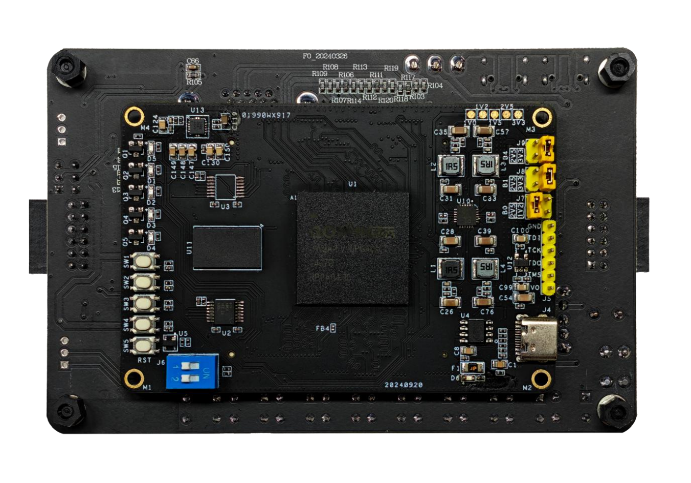
FO_20240326
*
*
2
Ri
Ri08
RUS —RH9 ©. (0. fo
"¢
R06
Rut
Riv
‘
4
Yue
(rl
全Rlo4
RIOTRILG
RUZ piokt Ayhios
ui3
E12, 07 990Hx917
OC
@,
3
如
«0
M4
{fe
7
M3
PR
ew
Ses cee”
BL)’
Ex
see!
oor
FS
~
70
Ls)
| j
x
SooH=—,
a
Coco
ur
7
bal
BF
{fe
>
02
到
a
Vy
ca3
7
en
Tyg ea
see)
ofS)
om
&
03
Opes
eu
=
C28
539
cl
fear
04
Tc
本
o—
el
图
本
iq
Fw
图
of
cha cool
aa
=
es.
on
图
C26
C76
J4
U4
=F
o
on
us
£2,263
F84|
=
四
网并
e
=
ea _)
2
on
)5
BS
RST 46
Ss
06
rife Hite
wa
20249920
M2
~
| a
+
*
全国大学生嵌入式芯片与系统设计竞赛'2026 选题指南（高云半导体） 上面为姿态控制系统竞赛套件的运动机构。 姿态控制系统由上图组成，分为电控器件与结构件，电控器件包括角位移传感 器、电机与编码器。结构件包括固定底座、水平云台、摆臂摆杆等。其工作原理基于 闭环反馈控制，通过机械结构的协同运动与传感器的实时监测，实现对不稳定平衡状 态进行调控。 4
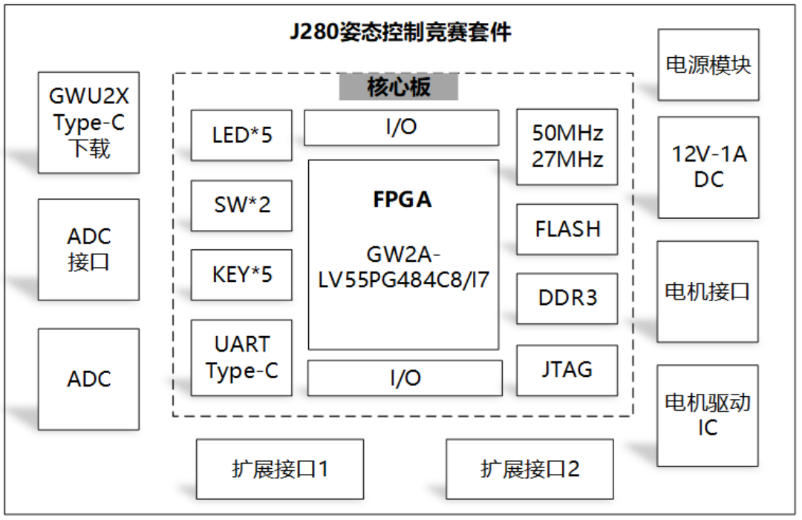
J280 姿态控制竞赛套件 核心板：FPGA GW2A-LV55PG484C8/I7；I/O（上下两处）；LED*5；SW*2；KEY*5；UART Type-C；50MHz / 27MHz；FLASH；DDR3；JTAG 外围：GWU2X Type-C 下载；ADC 接口；ADC；电源模块；12V-1A DC；电机接口；电机驱动 IC；扩展接口1；扩展接口2。
仅转录模块名称，框图布局见原图。
J280姿态控制竞赛套件 ——--—-—-—-—-— ~~ —----—-—-—-— ~~ GWU2X ‘emai Type-C 1 LED* Mo 50MHz 12V-1A Lh | 27MHz FPGA DC Ww*2 ADC | sw | FLASH 接口 GW2A- |一 LV55PG484C8/I7 DDR3 电机接口 UART ADC JTAG pec | [ve 1/0 UJ ------ 电机驱动 1C 扩展接| 口1 扩展接 口2
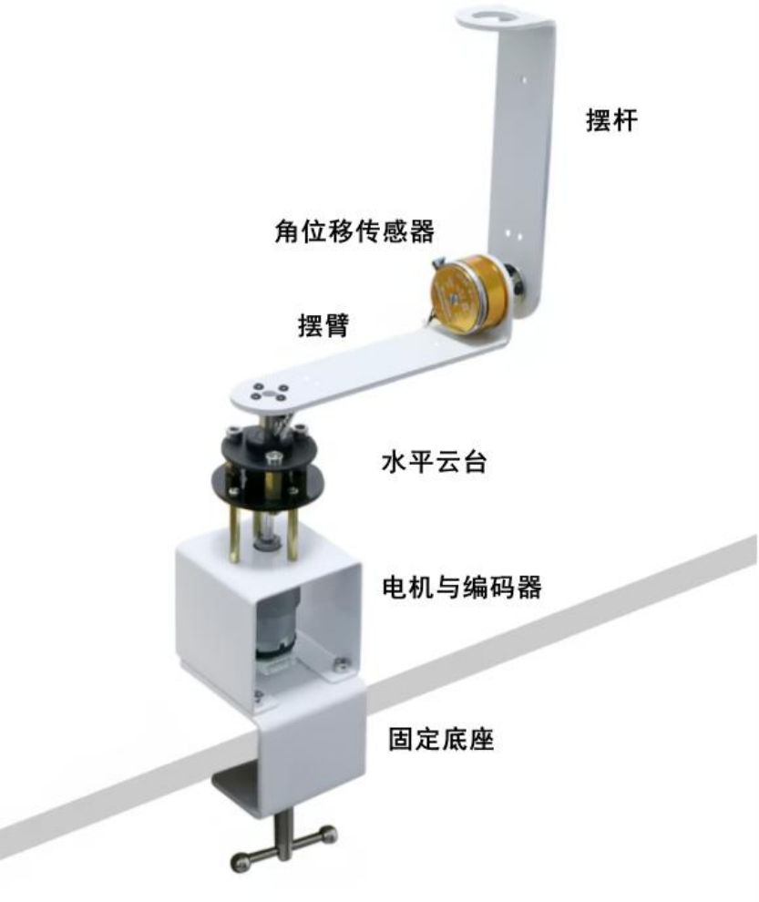
摆杆；角位移传感器；摆臂；水平云台；电机与编码器；固定底座。
示意图无额外数值验收门槛。
BH 角位移传感器 25 2° 水平云台 ia 电机与编码器 固定底座
全国大学生嵌入式芯片与系统设计竞赛'2026 选题指南（高云半导体） 在工作原理上，需要使用 FPGA 通过采集角位移传感器信号，电机编码器的信 号，控制直流电机的转速和转向，使倒立的摆杆能够长时间稳定地保持在垂直平衡位 置。 姿态控制系统的动力学特性是复杂的，其运动方程涉及到角度、角速度、力矩等 多个变量，且系统本身是不稳定的。为了实现有效的控制，设计出能够快速响应系统 状态变化并进行精确控制的算法。 *采购地址： https://e.tb.cn/h.8TDy8fxAwEnTyWF?tk=68iFgAHZ6I1 5
全国大学生嵌入式芯片与系统设计竞赛'2026 选题指南（高云半导体） ⚫ Sipeed Tang 系列开发板 本次推荐使用 Sipeed Tang 系列开发板的 Tang Nano 20K / Primer 25K / Mega 60K / 138K 四款开发板 Tang Nano 20K 是采用 GW2AR-LV18QN88C8/I7 的一款核心板，芯片内部具有 20736 个逻辑查找表(LUT4) 和 15552 个寄存器(FF)，内部有两个 PLL，还带有多个 DSP 单元支持 18 位 x 18 位 的乘法运算来加速数字运算。板载 BL616 芯片来作为 FPGA JTAG 下载器和与 FPGA 通信的串口。板上默认使用 27MHz 晶振用于倍频出 HDMI 显示所需要的时钟，还额外搭载 MS5351 时钟发生芯片来随意生成多种所需要 的时钟。 Tang Primer 25K 是基于 GW5A-LV25MG121NC1/I0 所设计的一款极小封装的核心 板（23x18mm），并配套全引脚引出(除 MIPI 高速脚外)的 25K Dock 底板。极小的核心 板尺寸可以应用于任何体积受限的场景。简洁的底板可以连接 USB 手柄，插接 40Pin SDRAM 模块，3 个 PMOD 接口可以连接 HDMI 显示器，PS2 手柄组成典型的 RetroGame 主机形态。 Tang Mega 60K 开发板核心芯片为 GW5AT-LV60PG484A，具有 60K LUT4 等效逻 辑单元、2.6M bits BSRAM、PCIE 3.0 硬核、DDR3 存储接口，最大支持 4 Lane 模式以 及丰富的用户接口。 6
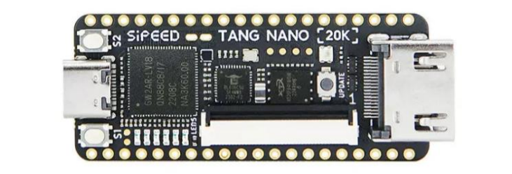
@600860 'y SIPEED 四四 TANG NANO (20K Ea 一-一 :串。。。。阅 一一一 aa! = rt © 0000008 @ © 000000808
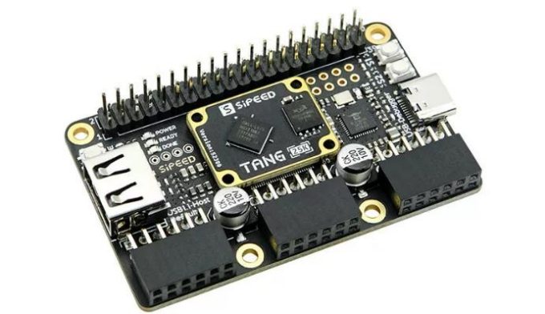
et ook ote ener Co Bae Se eS sie oe or ex AS Xwx <4 ee sa" ax
全国大学生嵌入式芯片与系统设计竞赛'2026 选题指南（高云半导体） Tang Mega 138K 使用 22nm 制程 GW5AST-LV138P484A FPGA 芯片，具有 138240 个查找表单元和近 300 个 DSP 单元。含有八个速度范围在 270Mbps ~ 6.6Gbps 高速收 发器、DDR3 存储接口、RiscV 硬核接口，最大支持 4 Lane 模式以及丰富的用户接口。 *采购地址： *参考资料：https://wiki.sipeed.com/hardware/zh/tang/ 7
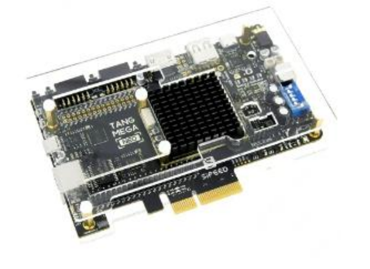
3s Sey e be 的 11. Gh eet ev — ‘ee
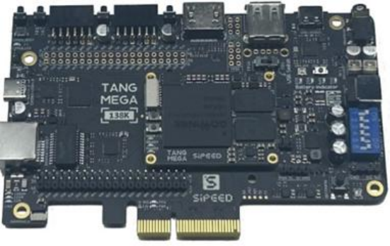
全 vine! LE 38855555 eo: ao 209 ‘ANG MEGA [sx ] 22 va < ‘ = D Trt 6
中国 Ad or (oho om,
全国大学生嵌入式芯片与系统设计竞赛'2026 选题指南（高云半导体） ⚫ 小梅哥 FPGA 系列 ACG720 开发板板载高云 GW5AT-60/138K 高性能 FPGA 芯片，标配 256MB DDR3 与 128Mb QSPI Flash，保障复杂算法与视频图像处理的运行能力；配备 50M 有 源晶振提供精准时钟，电源接口支持 6-12V 宽压供电，基础硬件架构稳定。 ACX750 开发板板载高云 GW5AT-LV138PG484AC1/10 高性能 FPGA 芯片，标配 1GB DDR3 与 128Mb QSPI Flash，保障复杂算法与视频图像处理的运行能力；配备 PCIe 2.0 x1 接口、RGMII 千兆以太网、6.25G SFP 光纤接口×2、HDMI 输出及摄像头 接口，支持高速数据交互与多外设扩展；电源系统采用多路稳压设计，支持宽压输 入，基础硬件架构稳定，兼顾学习与项目调试需求。 8
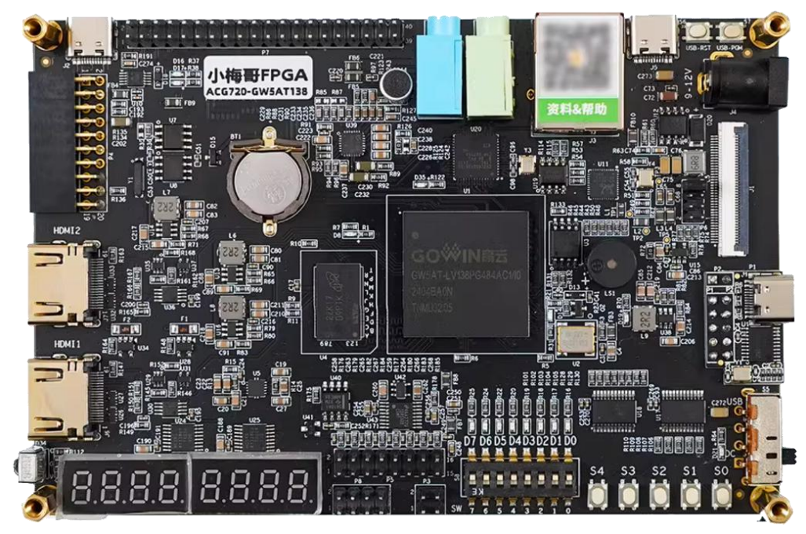
aa 和 wey ee “MGIEFPGA ACG720-GWSAT138 (4 Ea 583和 ise 172 op) oes — ae (SE ahs i we 一 Be HOMTL ites La le ae " Sree 58 ine =F 上 上 7 D6 DS 0403020100 由 i sala} -—E a) 一一| 一| aa as a2 as $4 $3 S2 Si ye ttt BA AA sw ES] SESE
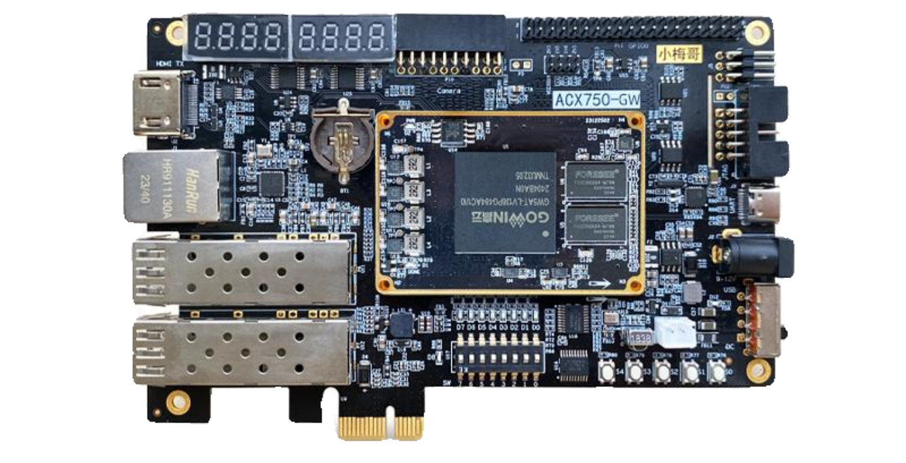
ee ee ee ooo Vy Witt a vos —— Sta ER co Oo ae 9) “era CX750-G' Cr som =) eine a @) oo 5一 =f ant om os om AQ: 地 M “Ce i: ZBINIAAC te = @ One ay BR tf = fi a ne Cie tv ad = i ee Oo oon Hee vb em) waa 1 i | ny aE 全 全 se © .@
全国大学生嵌入式芯片与系统设计竞赛'2026 选题指南（高云半导体） ACG138-RK3588 核心板搭载瑞芯微 RK3588 高性能八核处理器，并集成高云 GW5AT-60K FPGA，构建 CPU+FPGA 异构算力平台，兼顾边缘计算、高速逻辑处理与 复杂算法加速需求；板载 LPDDR4X 高速内存与 eMMC 闪存，保障系统运行流畅及应 用快速启动；核心板通过连接器与底板对接，可对外扩展 MIPI 摄像头输入、 HDMI/DP 显示输出、USB2.0/USB3.0、Type-C、PCIe 3.0 x2、PCIe 2.0/SATA、RGMII 千兆以太网及多路 GPIO 等资源，支持高速数据交互与多外设扩展；同时配合 RK806S 电源管理与多路稳压设计，确保核心板稳定可靠运行，适用于开发调试、视觉处理及 工业控制等应用场景。 BX72 一体板采用高云 GW5AT138 FPGA 作为核心器件，具备丰富的逻辑资源与 高速接口扩展能力，可满足视频显示、图像采集、工业控制及多协议数据处理等应用 需求；板载配置 Flash 与 EEPROM 等存储资源，保障系统稳定启动与可靠运行；整板 对外引出 HDMI、MIPI DSI、摄像头、千兆以太网、USB-UART 及 2 路 40pin 拓展 IO 等接口，方便直接连接显示屏、传感器、通信模块和外部设备，满足多场景开发与方 案验证需求；同时配合完善的电源管理与调试接口设计，进一步提升整板的稳定性与 易用性，适用于 FPGA 开发、功能验证及嵌入式应用开发。 9
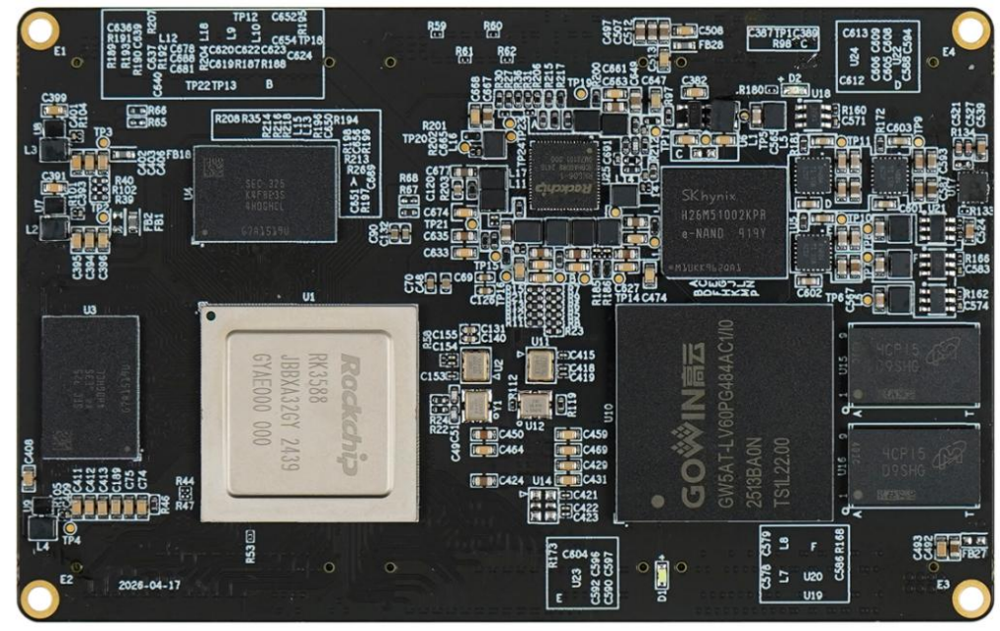
TPiz C6523 ER e. ae acca FREE se Cai HORIBTRICS. TP2zTP13 8 ‘a bars ET R204 csr 933 rae 3 Ge soak 人 UE ET Fale mais x i ia BE ion Rice i ix} oe | ce74| Ee TP21一全 um Ed cos aad 7 $33 ae uw gages Eepittow z w= sem kath — P6018 74 AP goss 131" 140 4 内 AIS cas aot euiz EB |o 3 nico” 医可ck450 和 jw Emo ck Gmoe ul Poe EC421 Rar ER Ie. PBB 1, 到 ie Sy 2g 3s 5 wo 8 2028-04-17 wig e “@
全国大学生嵌入式芯片与系统设计竞赛'2026 选题指南（高云半导体） *采购地址： 10
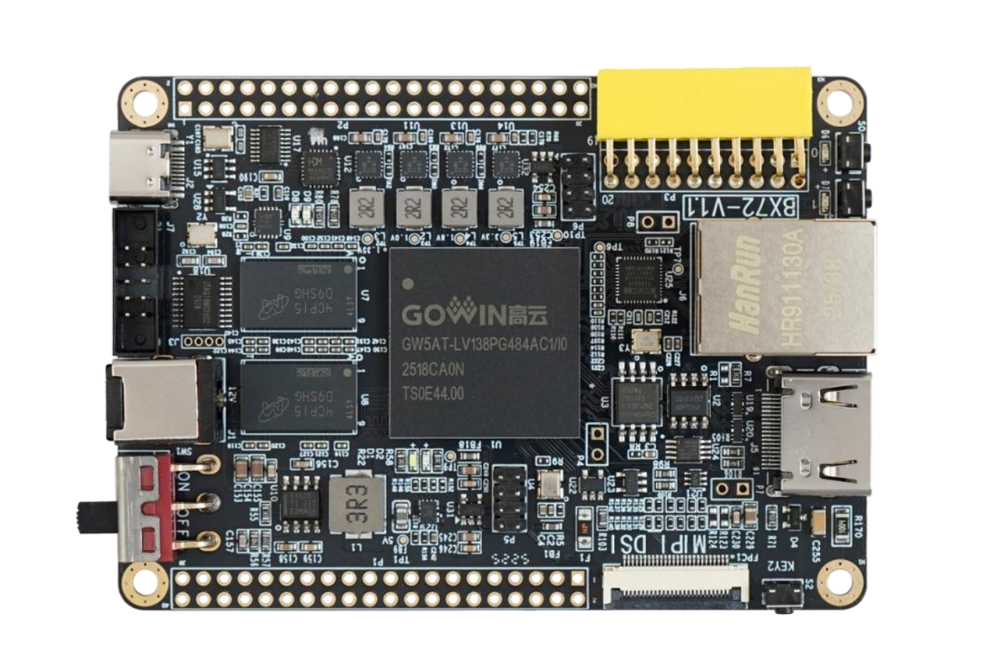
@eegeeeeeeeeeeeeee@e@e@ee@h BOO 0000 0000000800088 e cz TH 区 0 Tals = fc jeter gee a =) WIDE 8 ee 6e@ = Bie 2h BEE | JS CT SAN - xy Grae hse t dt 了 er区 wper pet Teka cA a8 aa i = —l tee F | 一上- 和 ee tas |. ESw Sia ag in otis (Ceadest> 一一 aa mG: sy [ead Cas je = ew | Ve Eelee oR g mF i AS 5d 上 “8D 61 tg Sat 国 eh ssssssssssssssssssa| 站 ‘©
于 es “4 ar
全国大学生嵌入式芯片与系统设计竞赛'2026 选题指南（高云半导体） ⚫ 自备开发板 除申请板卡外，本次比赛亦支持使用第三方以高云半导体 FPGA 芯片为核心的开 发板。 11
全国大学生嵌入式芯片与系统设计竞赛'2026 选题指南（高云半导体） 三、 选题方向 ⚫ 选题一：基于 FPGA 的实时姿态控制系统 设计要求： 设计一套基于倒立摆的实时姿态控制系统。系统通过角度传感器与编码器，实 时、精确地采集摆杆倾角、电机转速及旋转方向；采用 FPGA 作为主控计算平台，在 其内部实现姿态控制算法，根据反馈信息在线计算控制量，并输出 PWM 驱动信号至 直流电机，以实现摆杆的稳定直立控制。在此基础上，系统在稳态条件下具备摆臂定 点位置调节能力，可在维持摆杆不倒的同时完成指定位移控制，从而构建一个具有自 平衡能力与可控运动能力的实时姿态控制系统。 基础要求： 1、摆杆起摆控制，设计并实现一个控制逻辑，使得静止下垂的摆杆能够被抬起，在起 摆时控制电机控制转速和转向，摆杆最终实现停在垂直位置附近。 2、摆杆自平衡控制，设计并完成一套自平衡控制系统算法。系统能实时采集摆杆角度 偏差，通过 FPGA 逻辑运算输出 PWM 占空比，控制电机的转速和转向，使倒立的摆 杆能够长时间稳定地保持在垂直平衡位置。 3、摆杆起摆时，要求在平衡后，摆杆会缓慢停在垂直位置附近，无明显震荡。在平衡 控制时，摆杆长时间保持稳定，不倒下。且能抵抗轻微的外部推力，并在短时间内恢 复稳定。 拓展要求： 1、在保持摆杆平衡的基础上，加入位置控制，通过键盘或拨码开关设定目标位置，控 制电机平滑地移动到指定方向并保持静止； 2、可尝试让电机按照特定的速度曲线或轨迹运动，同时保持摆杆不倒。 3、在位置控制过程中，需要保证摆杆在移动过程中始终保持直立。 适配板卡： J280 姿态控制系统竞赛套件 12
全国大学生嵌入式芯片与系统设计竞赛'2026 选题指南（高云半导体） ⚫ 选题二：基于 FPGA 的实时多音色合成电子乐器引擎 设计要求： 设计一套基于 FPGA 的实时多音色合成电子乐器引擎。系统依托电容触摸、光电 感应、压力检测、无接触手势等任意自研交互方案，实现至少 2 个独立可控演奏维度 的动作采集，精准识别选音、和弦、触发、拨弦等演奏指令。以 FPGA 为核心并行计 算平台，在硬件逻辑层搭建专属实时音频合成引擎，采用波表采样、加法合成、FM 调 频或物理建模等任意合规算法，对演奏控制信号进行逐样本、逐声部实时音频运算， 最终通过 I2S 接口输出音频信号至 DAC 解码发声。系统充分发挥 FPGA 并行流水线运 算优势，具备高复音并发能力、多音色切换、多维表情调控特性，严格控制演奏延 迟，构建低延迟、高实时性、高表现力的纯硬件实时电子乐器系统。 基础要求： 1、多维交互控制检测。自主设计演奏交互形态，基于各类传感器实现演奏动作精准采 集，支持选音、触发、拨弦、力度感应等操作，具备至少 2 个独立可控维度，交互逻 辑灵敏稳定，适配乐器演奏场景。 2、FPGA 纯硬件实时音频合成。完整音频生成通路全部基于 FPGA HDL 硬件逻辑实 现，支持逐样本实时音频运算，可采用波表采样、加法合成、FM 调频、物理建模等任 意方案；严格控制演奏延迟，实现控制信号到音频输出总延迟 ≤10ms，杜绝软件串行 运算滞后问题。 3、合规实时发声与多复音能力。系统基础复音数 ≥4，支持四路及以上独立声部同时 并发发声。严格遵循赛题合规要求：所有输出音频均由 FPGA 根据实时演奏指令逐 音、逐样本实时生成，支持单音实时变调、ADSR 包络调控、多声部实时混音，严禁 直接播放预录 PCM 音频、预置推流及整段录音触发，保障实时合成核心属性。 拓展要求： 1、超高规模并行合成引擎。突破基础复音限制，实现复音数 ≥32，或单音加法合成分 量 ≥32 路，或多条并行物理建模运算单元，最大化发挥 FPGA 并行计算优势，提升振 荡器整体吞吐量。 13
全国大学生嵌入式芯片与系统设计竞赛'2026 选题指南（高云半导体） 2、多维表情控制与音频效果处理。搭建 ≥3 维演奏表情调控逻辑，支持力度动态、滑 音、颤音等演奏效果；支持 ≥2 种乐器音色自由切换；在 FPGA 硬件内部实现混响、 延迟、合唱等数字音频效果器，丰富演奏听觉层次。 3、极致低延迟与实时视听反馈。系统优化流水线架构，将演奏延迟压缩至 ≤5ms 且实 现确定性无抖动延迟；基于 FPGA 硬件逻辑实时生成可视化反馈，包含 LED 演奏指 引、李萨如图形、实时频谱、波形显示等视听效果。 4、智能联动与脱机拓展功能。实现脱机演奏 LED 曲目指引功能，辅助规范演奏节 奏；可搭载蓝牙模块与手机 App 联动，支持在线曲谱下载、演奏键位自定义、演奏录 音回传等拓展功能，提升系统智能化与实用性。 核心评分规则与现场验证标准: 1、振荡器统计规则：独立发声单元为包含独立相位累加器、频率调控、包络控制的完 整振荡器；单波表采样查表不计多谐波数量，仅计单个振荡器；加法合成按运算分量 统计、FM 按调制运算器统计、物理建模按并行弦/模态单元统计。 2、系统吞吐量指标：以「同时活跃可闻独立振荡器总数 × 实际音频输出采样率」为核 心评分依据，过采样不叠加加分。 3、现场验证要求：支持测试模式下输出多路不同频率音频，频谱可观测对应数量独立 谱峰，同时可通过 RTL 代码佐证纯硬件实时合成通路，验证无预录音频播放行为。 适配板卡： Sipeed Tang 系列开发板 Tang Nano 20K / Primer 25K / Mega 60K / 138K 14
全国大学生嵌入式芯片与系统设计竞赛'2026 选题指南（高云半导体） ⚫ 选题三：基于 FPGA 的具身智能机器人实时感知与自主控制系统设计 设计要求： 具身智能机器人需要同时具备环境感知、运动控制和自主决策能力。其中，传感 器数据处理、运动控制与避障等任务对实时性要求极高，非常适合采用 FPGA 实现； 而视觉识别、场景理解等高级智能功能则可由高性能边缘计算平台完成。 本赛题要求参赛队伍基于 FPGA 构建机器人实时控制系统，并探索 FPGA 与边缘 AI 协同工作的实现方案。 基础要求：（仅使用 FPGA + 软核 CPU 即可完成） 任务 1：多传感器感知 完成以下传感器接入： • 摄像头采集与图像显示 • IMU 姿态数据采集 实时显示： • 摄像头画面 • 姿态角信息 任务 2：运动控制 实现移动机器人运动控制： • 前进 • 后退 • 转向 • 定点旋转 支持编码器反馈闭环控制。 任务 3：实时避障 利用超声波、TOF 或激光测距模块实现： • 障碍物检测 • 自动减速 • 自动停车 15
全国大学生嵌入式芯片与系统设计竞赛'2026 选题指南（高云半导体） • 自主绕障 任务 4：自主导航 机器人能够在指定场景中完成： • 起点到终点自主移动 • 障碍物避让 • 路径点导航 拓展要求：(允许使用 RK3588 等边缘 AI 平台) 任务 5：视觉目标识别 实现目标检测或目标跟踪功能，例如： • 人员识别 • 物体识别 • 指定目标跟随 任务 6：智能任务执行 结合视觉识别结果，实现： • 指定目标搜索 • 语义导航 • 自主任务执行 例如： 找到红色水瓶并移动到其附近 评分重点： 项目 占比 FPGA 实时感知与控制 40% 系统稳定性 25% 自主导航能力 20% 创新设计 10% AI 扩展功能 5% 16
全国大学生嵌入式芯片与系统设计竞赛'2026 选题指南（高云半导体） 适配板卡： 小梅哥 ACG720 / ACG750 / BX72 / ACG138-RK3588-CORE 硬件选配说明： 本项目图像采集传感器可选用板卡适配的 OV5640、OV5647 摄像头，也可搭载双 目摄像头或其他更高规格的兼容摄像头，充分满足系统视觉采集、视觉识别等功能需 求；机器人电机驱动、姿态检测、运动执行等相关硬件设备，可由参赛队伍根据实际 开发调试情况、硬件适配性自主灵活选型。 17
全国大学生嵌入式芯片与系统设计竞赛'2026 选题指南（高云半导体） ⚫ 选题四：开放型题目 能充分体现高云 FPGA 芯片的主体地位，体现 FPGA 的性能和非替代性（不使用 MCU），鼓励设计具有创新性，工程完整性的作品。推荐具有较好创意的队伍优先选 择。 18
全国大学生嵌入式芯片与系统设计竞赛'2026 选题指南（高云半导体） 四、 开发板获取途径 ⚫ 免费申请 1、 申请本赛道所提供的开发板需要在报名参赛时同时勾选申请。 2、 每支队伍仅能申请一块开发板。 3、 高云将根据队伍的项目评审过后，在获得参赛资格的队伍中抽取并寄送。 4、 板卡在完赛后请寄回至如下地址： 广州市黄埔区科学大道 235 号 601 房，朱俊香 ， 18389838792 5、 可申请开发板如下： 型号 芯片 推荐选题 J280 姿态控制系统竞赛套件 GW2A-LV55PG484C8/I7 选题 1 Tang Mega 60K 开发板 GW5AT-LV60PG484A 选题 2 小梅哥 ACG720 GW5AT-LV138PG484AC1 选题 3 6、申请渠道： https://www.gowinsemi.com.cn/university/boardapply/2026 19
全国大学生嵌入式芯片与系统设计竞赛'2026 选题指南（高云半导体） 五、 技术支持与技术资源 ⚫ 技术支持渠道： 1、 FPGA 竞赛官方指导群：213923272 2、 官网：高云官网 3、 课程：高云 B 站线上课程 20
全国大学生嵌入式芯片与系统设计竞赛'2026 FPGA 创新设计赛道选题指南 （易灵思）
目录 一、公司介绍 ............................................................................................................................ 3 二、参赛技术平台 .................................................................................................................... 3 三、选题方向 ............................................................................................................................ 4 【赛题一】AI 赋能的「实时绘画」——风格化视频渲染系统 .................................. 4 【赛题二】基于 RISC-V 与 FPGA 异构架构的 2D 图形渲染加速引擎 ................ 7 【赛题三】多模态 AI 智能终端 .................................................................................... 9 【赛题四】基于 FPGA 的实时图像边缘检测系统 .................................................... 12 【自由选题】基于易灵思 FPGA 的开放创新设计 .................................................... 18 四、开发板获取途径 .............................................................................................................. 21 五、技术支持与技术资源 ...................................................................................................... 21
全国大学生嵌入式芯片与系统设计竞赛'2026 选题指南（易灵思） 一、公司介绍 易灵思（Efinix）是一家专注于可编程逻辑器件的半导体公司，致力于为边缘计 算、机器视觉、工业控制、消费电子等领域提供高性能、低功耗、小尺寸的 FPGA 芯 片与配套开发工具。其 Titanium™ 系列 FPGA 采用先进工艺制程，集成高速 MIPI D-PHY 硬核、丰富的 DSP 与片上存储资源，并支持 Sapphire™ RISC-V 软核 SoC， 可实现高效的软硬件协同设计。 本次竞赛指定平台基于易灵思 Titanium 系列 Ti60F225 FPGA 芯片，搭配 Efinity® 集成开发环境，参赛队伍可完成从图像采集、硬件加速处理到高清显示输出 的完整嵌入式视觉系统设计，充分锻炼数字逻辑设计、异构计算与系统集成的综合能 力。 二、参赛技术平台 为保证竞赛公平、统一，并便于组委会提供准确的技术指导与资源支持，建议参 赛队伍使用推荐的开发板平台参赛，对应的参考案例在固定的开发板平台完成验证， 使用推荐以外的开发板平台可能出现参考案例无法直接运行的情况。具体平台要求如 下： 【参赛平台要求】 基于 Ti60F225I3 芯片的 Ti60F225 开发板 硬件接口：标配 MIPI CSI-2 图像输入、HDMI 音视频输出、高速 DDR3 存储及 千兆以太网接口。 3
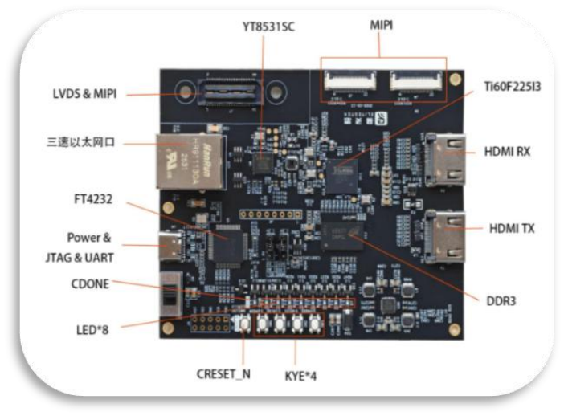
YT8531SC；MIPI；Ti60F225I3；HDMI RX；HDMI TX；DDR3；KYE*4；CRESET_N；LED*8；CDONE；Power & JTAG & UART；FT4232；三速以太网口；LVDS & MIPI。
保留图中的 KYE*4 拼写；其语义通常为按键标注。
MIPI YT85315C 人 Ti60F225B LVDS & MIPI 8 =8uAm0 a we HDMI RX ze b we FT4232 ime 5-2 a= HDMI TX Power & 7 ues STAG & UART CDONE a 四 mee we DDR3 — WERER: of LED"8 e CRESET N KYE"4
全国大学生嵌入式芯片与系统设计竞赛'2026 选题指南（易灵思） 推荐使用摄像头：SC431HAI 基于 Ti60F225 芯片的 VF-Ti60F225 开发板（限赛题四和自由选题使用） 硬件接口：1 路 HDMI 显示，1 路 LVDS LCD 接口，1 路 DVP 相机接口，1 路 MIPI RX+TX 接口。 三、选题方向 【赛题一】AI 赋能的「实时绘画」——风格化视频渲染系统 【赛题背景】 随着边缘计算与 AI 生成内容（AIGC）技术的发展，实时视频风格化已成为计算 机视觉领域的热点应用。然而，传统方案依赖云端 GPU 或高端 AI 芯片，难以在低 功耗、低成本边缘设备上实现低延迟、高吞吐量的视频流处理。 本赛题要求参赛队伍基于 RISC-V + FPGA 异构平台，设计一个轻量化神经网络 硬件加速器。利用 FPGA 的并行流水线架构，将风格迁移网络（如简化版 CycleGAN、Fast Neural Style 或轻量化 CNN）完全或部分硬件化，实现对实时视频流 的逐帧风格化处理。RISC-V 仅负责摄像头采集配置、视频流格式转换、UI 叠加等高 层控制逻辑，从而构建一个低延迟、低功耗、高帧率的边缘 AI 视频处理系统。 【任务说明】 参赛队伍需设计并实现一个完整的实时视频风格化系统。系统通过 MIPI CSI-2 接 口采集摄像头视频流，在 FPGA 中完成轻量化风格迁移网络的推理加速，将每一帧图 4
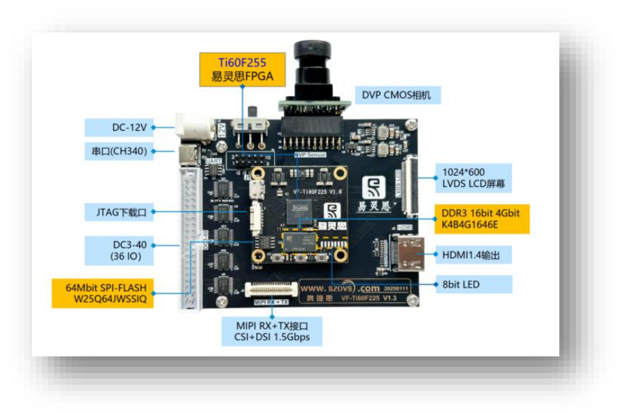
Ti60F255 易灵思 FPGA；DVP CMOS 相机；DC-12V；串口(CH340)；JTAG 下载口；DC3-40 (36 IO)；64Mbit SPI-FLASH W25Q64JWSSIQ；1024*600 LVDS LCD 屏幕；DDR3 16bit 4Gbit K4B4G1646E；HDMI1.4 输出；8bit LED；MIPI RX+TX 接口 CSI+DSI 1.5Gbps。
图中确实标为 Ti60F255，与同页正文 Ti60F225 不一致；未擅自改字，采购时须核对板卡手册。
DvP CMOS相机 DC-12V +— =] fi @ | i SHE 串口(CH340) +— = 1024*600 EO [ LVDS LCD屏幕 STAG FRO 图 Ae! ane DC3-40 + — 1 (3610) HDMI1.4输出 8bit LED ® MIPI RX+TX接口 CSI+DSI 1.5Gbps
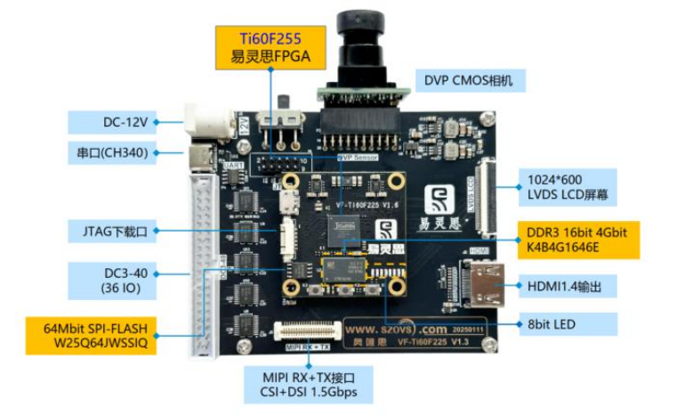
Ti60F255 易灵思 FPGA；DVP CMOS 相机；DC-12V；串口(CH340)；JTAG 下载口；DC3-40 (36 IO)；64Mbit SPI-FLASH W25Q64JWSSIQ；1024*600 LVDS LCD 屏幕；DDR3 16bit 4Gbit K4B4G1646E；HDMI1.4 输出；8bit LED；MIPI RX+TX 接口 CSI+DSI 1.5Gbps。
与同页另一图主要标注相同。板上丝印 VF-Ti60F225 与图外 Ti60F255 标签不一致。
Ti60F255 易灵思FPGA DVP CMOS相机 DC-12V +— 串口(CH340) +— 他 下 aT 1024*600 cos ae) LVDS LCD屏幕 gl SRE STAG FRO DDR3 16bit 4Gbit ane K4B4G1646E DC3-40 «+ — ay 1 (3610) Ooms HDMI1.4输出 8bit LED 64Mbit SPI-FLASH com W25Q64JWSSIQ eat MIPI RX+TX接口 CSI+DSI 1.5Gbps
全国大学生嵌入式芯片与系统设计竞赛'2026 选题指南（易灵思） 像转换为指定艺术风格（如梵高、浮世绘、水墨画等），最终通过 HDMI 输出处理后 的视频流。RISC-V 端需实现 UI 叠加功能，可同时显示原画与风格画对比视图。 【基础要求】 本部分考察学生对视频接口、神经网络硬件加速基础以及软硬协同设计能力的掌 握。 1. MIPI 视频流采集与预处理 • 利用 Ti60 FPGA 的 MIPI 高速 I/O 资源，结合 MIPI D-PHY RX IP 和 CSI-2 RX Controller，完成 CSI-2 摄像头接入。（SC431HAI）。 • FPGA 端需实现 MIPI CSI-2 协议解析、RAW 转 RGB（如 debayer 算法）、图像缩放（Resize）至目标分辨率（最低要求：640×480 @ 30fps）。 • 实现双缓冲（Ping-Pong Buffer）机制，将预处理后的帧存入外部 DDR 存储器，确保数据流不丢帧。 2. 轻量化风格迁移网络的硬件加速器设计 • 选择一个轻量化风格迁移网络（参考：简化版 CycleGAN、Fast Neural Style、或自行设计的微型 CNN）。 • FPGA 端需为该网络设计一个硬件加速器，至少实现： o 卷积层（Convolution）硬件化，支持 3×3 或 5×5 卷积核。 o 激活函数（如 ReLU）硬件化。 o 批归一化（Batch Normalization）或实例归一化（Instance Normalization）的硬件近似计算。 • 加速器需通过系统总线（如 AXI4）从 DDR 读取输入图像块，经流 水线处理后写回结果帧。 3. HDMI 视频输出与软硬件协同 • 生成标准 HDMI 时序（最低要求 720p @ 60fps 或 1080p @ 30fps）， 从 DDR 读取风格化结果帧并输出至显示器。 • RISC-V 端需编写 C 语言驱动，完成： o 摄像头初始化与寄存器配置。 5
全国大学生嵌入式芯片与系统设计竞赛'2026 选题指南（易灵思） o 风格迁移网络权重的加载与部署。 o 硬件加速器的任务调度（启动、等待完成、中断处理）。 • 实现原画 vs 风格画对比显示：屏幕左侧显示原始摄像头画面，右侧 显示风格化后画面（或通过按键切换全屏模式）。 4. 基础 Demo 与性能验证 • 提供一个基础测试 Demo，展示实时风格化效果。 • 在屏幕上叠加显示当前帧率（FPS），要求稳定达到 15fps 以上 （640×480 分辨率）。 【高阶挑战】 本部分考察对神经网络优化、多风格切换、高吞吐量流水线设计的深度理解。 1. 多风格实时切换 • 在 FPGA 内预置至少 2 种不同风格的网络权重（如梵高风格、浮世 绘风格、水墨风格）。 • RISC-V 端可通过按键或串口指令，在不重启系统、不重新配置 FPGA 的前提下动态切换当前风格。 • 风格切换延迟应低于 100ms，且切换过程不丢帧。 2. 分辨率与帧率提升 • 将处理分辨率提升至 1280×720 @ 30fps 或更高。 • 需对硬件加速器进行流水线深度优化（如层间融合、行流式处理），减 少对 DDR 的中间结果读写次数。 • 鼓励使用 DSP 块 实现高效的卷积计算（如脉动阵列、权重固定 流）。 3. 超轻量化网络自设计 • 鼓励队伍自行设计或剪枝一个网络参数量小于 500KB 的超轻量化风 格迁移网络。 • 需提交网络结构图、参数量统计表，并与标准网络（如简化版 CycleGAN）进行画质（PSNR/SSIM）与推理延迟的对比分析。 6
全国大学生嵌入式芯片与系统设计竞赛'2026 选题指南（易灵思） 4. 创意交互展示 • 在基础对比视图之外，增加趣味交互功能。例如： o 语音控制切换风格。 o 手势识别（如挥手）触发特殊滤镜效果。 o 将风格化画面实时推流至手机 APP（通过 WiFi 模块）。 • 鼓励录制 “抖音/B 站风格”展示短视频，作为附加材料提交。 【给参赛者的技术提示】 1. MIPI 内置 IP 优先：使用易灵思芯片内置的 MIPI D-PHY RX IP 和 CSI-2 RX Controller 进行 CSI-2 采集，可大幅降低外部电路复杂度。 2. 网络轻量化策略：建议优先考虑 U-Net 极小版、Fast Neural Style 的 1/4 通道版本，或直接使用 二值/三值神经网络（BNN/TNN） 简化乘法器需 求。 3. 流水线设计关键：避免“整帧输入→整帧输出”的宏流水线，应采用行 流水线（Line-based Pipeline），一行图像数据经卷积、归一化、激活后直接输 出，极大减少 DDR 访问次数。 4. 画质与速度的平衡：不必追求与云端大模型完全一致的画质，体现“边 缘实时性”比“极致画质”更重要。端侧 AI 的产业应用更关注流畅度与低延迟。 5. 展示效果最大化：建议对着彩色图案、人脸或风景画进行展示，风格 化前后对比会更明显。若能做到挥手切换风格，现场互动效果极佳。 【赛题二】基于 RISC-V 与 FPGA 异构架构的 2D 图形渲染加速引擎 【赛题背景】 在早期的 2D 游戏机和现代嵌入式 GUI 系统中，如果完全依靠 CPU 通过死循 环逐个像素搬运来实现图像的渲染，会极大占用 CPU 资源并导致帧率（FPS）骤降。 现代计算架构的核心趋势是“异构计算与软硬件协同设计（HW/SW Co-design）”。 本赛题要求参赛队伍基于 RISC-V + FPGA 异构平台，设计一个定制的硬件 2D 渲染加速器。将 RISC-V 从繁重的像素搬运工作中解放出来，RISC-V 仅负责高层逻 辑与下发指令，由 FPGA 硬件端完成底层像素的高速搬运与混合。 7
全国大学生嵌入式芯片与系统设计竞赛'2026 选题指南（易灵思） 【任务说明】 参赛队伍需在 RISC-V 端运行游戏或图形界面逻辑，并在 FPGA 端设计一个通过 标准总线（如 AXI4 / Wishbone）挂载的 2D 硬件加速引擎（BitBlt Engine）。系统需 能够将内存（DDR/SDRAM）中的图像数据高效搬运至显存（Framebuffer），并最终通 过 VGA/HDMI 接口输出至显示器。 【基础要求】 本部分考察学生对总线协议、视频时序以及软硬接口的基础掌握能力。 1. 硬件 2D 位块传输（BitBlt）引擎设计： o FPGA 端需实现解析 RISC-V 发送的渲染指令（指令需包含：操 作类型、源地址、目的地址、宽度、高度）。 o 硬件支持基础的“图像块拷贝（Block Copy）”和“纯色填充（Solid Fill）”。 o 生成标准 VGA/HDMI 时序，将显存内容输出至显示器（最低分 辨率要求 640×480 @ 60Hz）。 2. 总线读写与存储器优化： o 加速器必须通过系统总线直接访问内存。要求合理使用突发传输 （Burst Transfer）和内部 FIFO 缓存，以提高内存带宽利用率。 3. 软件驱动与基础 Demo： o RISC-V 端需编写 C 语言驱动程序配置寄存器，并实现双缓冲机 制（Double Buffering）以避免画面撕裂（Tearing）。 o 提供一个基础测试 Demo（例如：大量方块的随机移动、多张大图 的快速切换），并能在屏幕上实时对比显示“纯软件 CPU 渲染”与“硬件加 速渲染”的帧率差异。 【高阶挑战】 要求实现现代 2D 游戏引擎中的高级图层渲染管道。 1. 硬件 Alpha 混合 (Hardware Alpha Blending)： o FPGA 加速器在搬运前景图层（Sprite）时，利用内部 DSP/硬件乘 8
全国大学生嵌入式芯片与系统设计竞赛'2026 选题指南（易灵思） 法器，实时读取背景像素并执行透明度混合计算：输出像素 = 前景像素 * Alpha + 背景像素 * (1 - Alpha)。 2. 颜色键控去背 (Color Keying)： o 硬件支持设定“透明色”（如纯品红色）。在搬运图像时，自动跳过 透明色像素，实现不规则边缘精灵图（Sprite）的完美渲染。 3. 高负载互动游戏 Demo 演示： o 在 RISC-V 上运行一个具有极高同屏元素数量的游戏 Demo（如 《吸血鬼幸存者》的简化版或类似《东方 Project》的弹幕射击游戏）。 o 在开启硬件加速（Alpha 混合 + Color Keying）的情况下，挑战保 持 60 FPS 稳定运行时的同屏活动元素（Sprite）数量极限。 【赛题三】多模态 AI 智能终端 • 核心场景：智慧康养（室内老人跌倒检测与预测）、智能家居（感知人体位置和体温 的智能环境控制）、智能安防（多模态异常行为检测） • Ti60 亮点：支持 MIPI 摄像头及 I2C 传感器接口，可在 FPGA 内部署 RISC-V 软 核，结合 TinyML 轻量级 AI 推理框架，实现人体检测、姿态分析等边缘智能应用； 同时可利用 FPGA DSP、片上存储及自定义硬件加速单元对关键 AI 算子进行加速， RISC-V 负责模型调度、多模态数据融合及系统控制。 【赛题背景】 本赛题要求参赛者基于 Ti60 FPGA，构建一个“视觉+红外温度+环境传感”的多模 态 AI 智能终端，在本地完成数据采集、融合推理与事件响应，真正实现低延迟、高 隐私、高可靠的边缘智能。典型应用包括：室内跌倒检测与预警、智能空调人员跟随 控制、非授权区域入侵报警等。 【赛题要求】 任务 1：多传感器数据采集与 FPGA 预处理 目标：建立多模态传感器的数据采集通路，实现数据预处理和时间对齐。 要求： 通过 MIPI CSI 接口驱动摄像头，完成视频流实时采集，分辨率不低于 9
全国大学生嵌入式芯片与系统设计竞赛'2026 选题指南（易灵思） 720p@30fps。 通过 I2C 接口驱动红外温度传感器（如 MLX90640），实现人体温度分布采集 通过 I2C 接口驱动温湿度传感器（如 SHT30），实现环境温度采集 在 FPGA 内实现数据预处理：滑动平均滤波、异常值剔除、多传感器时间戳对齐 通过 HDMI/LCD 显示各传感器实时数据（视频画面+温度热力图+环境参数叠加 显示） 技术要点提示： 多传感器时间对齐：以视频帧时间戳为主时间基准，对红外温度和环境传感器数 据进行时间戳标记，通过最近时间匹配、缓存或插值实现多模态数据的时间对齐。 温度数据预处理：读取 MLX90640 原始红外数据及 EEPROM 校准参数，完成环 境温度、增益、偏置、发射率等补偿，计算各像素目标温度；可采用定点化、分段近 似或 LUT 等方法对部分计算进行硬件优化。 显示叠加：在 HDMI 画面上分区域显示——主区域视频画面、侧边温度热力图小 窗、底部环境参数文字 I2C 多设备管理：使用 I2C 地址区分不同传感器，设计分时复用控制器 任务 2：多模态 AI 处理与感知决策 目标：在 FPGA 端实现轻量级 AI 推理和多模态融合决策。 要求： RISC-V + FPGA AI 推理：在 Ti60 FPGA 内部署 RISC-V 软核，运行 TinyML 等 轻量级 AI 推理框架，实现人体检测、姿态识别或其他视觉感知算法。鼓励利用 FPGA DSP、BRAM、并行逻辑及 RISC-V 自定义指令实现卷积、矩阵运算等关键算子 的硬件加速，提高推理性能。运动分析：通过帧差法或光流法（Farneback 简化版）， 分析人体运动状态（静止/行走/跌倒/异常动作） 多模态融合决策：结合视觉检测结果（位置、动作）+ 红外温度数据（体温异常 检测）+ 环境数据（温度/湿度异常），进行综合判断 事件检测与响应：实现以下场景之一，或自定义一个智能场景： • 跌倒检测：人体姿态突变+长时间静止+温度正常（排除倒地物体），触发报警 10
全国大学生嵌入式芯片与系统设计竞赛'2026 选题指南（易灵思） • 智能空调控制：检测人员位置分布和体温，结合环境温度，输出空调控制建议（或 驱动 GPIO 模拟控制） • 入侵检测：非授权时段人体出现+体温正常（排除热源干扰），触发报警 本地报警与显示：检测到异常事件时，通过 LED 闪烁+蜂鸣器报警+HDMI 画面 红色边框提示+显示事件类型和置信度 技术要点提示： 轻量级神经网络：建议使用定点量化（INT8），利用 DSP 做矩阵乘法加速。网络 结构建议不超过 5 层卷积+2 层全连接，参数量控制在 100K 以内 多模态融合策略：加权投票法——视觉置信度 60% + 温度置信度 25% + 环境置 信度 15%，综合得分超过阈值触发事件 帧差法运动检测：当前帧与背景帧差分，阈值分割后计算连通域面积和质心位 移，判断运动类型 任务 3：系统优化与智能拓展 目标：提升系统智能化水平和实用性。 要求（至少实现 2 项）： 千兆以太网数据上报：通过 RGMII 接口将检测事件（类型、时间、位置、置信 度、缩略图）上传到 PC 服务器 RISC-V 软核决策控制：在 FPGA 内运行 RISC-V 软核，负责复杂决策逻辑（如 多目标跟踪、历史轨迹分析、预测）和协议处理 多目标跟踪：实现简单的多目标跟踪算法（如 IOU Tracker），同时跟踪场景中多 个人体的运动轨迹 行为预测：基于运动轨迹和速度向量，预测人体下一步位置，提前做出响应 低功耗场景管理：无人时进入低功耗模式（降低摄像头帧率、关闭神经网络推 理、保留温度监测）；检测到人体后自动恢复正常模式 Web 远程监控：RISC-V 软核运行轻量级 HTTP 服务器，支持浏览器查看实时画 面、传感器数据、历史事件记录 语音播报：通过 SPI 接口连接语音模块，检测到异常事件时进行语音播报（如 “检测到跌倒，请确认安全”）。 11
全国大学生嵌入式芯片与系统设计竞赛'2026 选题指南（易灵思） 【赛题四】基于 FPGA 的实时图像边缘检测系统 【赛题背景】 图像边缘检测是数字图像处理领域最经典、最基础的技术之一，广泛应用于目标 识别、工业检测、医学影像分析、自动驾驶等场景。传统基于软件（CPU）的边缘检 测方案受限于串行处理架构，难以满足高分辨率、高帧率的实时性要求；而 FPGA 凭 借其天然的并行处理能力，能够以流水线方式逐像素处理图像数据，实现“边采集、边 处理、边显示”的实时效果。 本赛题要求参赛者基于易灵思 FPGA 开发板，搭建一个完整的实时图像处理系 统：通过摄像头采集图像，在 FPGA 内部完成灰度化、中值滤波、Sobel 边缘检测等 处理，最终通过 HDMI/VGA 接口将处理结果实时显示在显示器上。题目涵盖了 FPGA 开发的核心技能模块——外设驱动（摄像头、显示器）、数据流控制、数字图像 处理算法硬件化，是一个综合性强但路径清晰的典型竞赛题目。 【任务说明】 参赛队伍需设计一个基于 FPGA 的实时图像边缘检测系统。系统通过 DVP 或 MIPI 接口接入摄像头，实时采集视频流数据；在 FPGA 内部完成彩色图像转灰度、 中值滤波去噪、Sobel 算子边缘检测等处理；最后驱动 HDMI/VGA 显示器，将原始 图像和处理后的边缘图像分屏或叠加显示。 整个系统要求实现全流水线处理——摄像头采集一行的同时，FPGA 对该行数据 进行处理并输出显示，实现“零延迟”的实时效果。该设计思路与挑战杯获奖项目“基于 FPGA 的实时图像边缘检测与跟踪系统”的核心技术路线一致。 【基础要求】 本部分考察参赛者对 FPGA 外设驱动、数据流控制、基础图像处理算法的掌握能 力。 1. 摄像头驱动与图像采集 • 分辨率要求：640×480 或以上 • 采集图像数据并存入行缓存（FIFO 或 Block RAM），为后续处理做准 备 12
全国大学生嵌入式芯片与系统设计竞赛'2026 选题指南（易灵思） • 要求图像采集稳定，无丢帧、无错位 2. 彩色图像转灰度处理 • 要求使用 FPGA 内部的 DSP 块或移位加法实现乘法运算，避免使用 除法器 • 灰度转换是边缘检测的前置步骤，在挑战杯获奖作品“实时卡通画生成 器”中也有完整实现 3. Sobel 边缘检测算法实现 • 实现 3×3 Sobel 算子，计算水平方向梯度 Gx 和垂直方向梯度 Gy • Sobel 算子卷积核： o Gx（x 方向梯度）：[-1, 0, +1; -2, 0, +2; -1, 0, +1] o Gy（y 方向梯度）：[-1, -2, -1; 0, 0, 0; +1, +2, +1] • 梯度幅值近似计算：G = |Gx| + |Gy|（避免开方运算，节省硬件资源） • 通过阈值比较输出二值化边缘图像（阈值可参数化配置） • 需设计行缓存模块（Line Buffer）缓存 2 行数据，实现 3×3 窗口的滑 动处理 4. HDMI 显示驱动 • 生成标准 HDMI 时序（最低要求：640×480@60Hz） • 实现分屏显示：屏幕左侧/上半部分显示原始灰度图像，右侧/下半部分 显示边缘检测结果 • 或实现画中画叠加显示 • 显示稳定，无闪烁、无撕裂 5. 基础验证 • 提交完整 RTL 源码（Verilog/VHDL）和约束文件 • 提供演示视频：摄像头对着简单几何图形（如黑白棋盘格、印有数字 的纸张、人脸轮廓），展示边缘检测效果 【高阶挑战】 本部分为有余力的队伍提供拓展空间，算法复杂度与视频帧率也是考核维度。 13
全国大学生嵌入式芯片与系统设计竞赛'2026 选题指南（易灵思） 1. 中值滤波去噪 • 在灰度化之后、边缘检测之前插入 3×3 中值滤波模块 • 实现 9 个像素值的排序，取中位数作为输出 • 有效抑制椒盐噪声，提升边缘检测质量 • 需合理设计排序网络（可采用并行比较网络，避免串行排序） 2. 实时阈值调节 • 通过板载按键或拨码开关，实时调整 Sobel 边缘检测的阈值 • 效果：按“+”键提高阈值（边缘减少），按“-”键降低阈值（边缘增多） • 需设计按键消抖模块与阈值寄存器 • 该功能在现场演示时能直观展示阈值对边缘检测结果的影响 3. 帧缓存与 DDR 控制 • 将一帧完整图像写入外部 DDR 存储器，实现“采集-存储-读取-处理” 分离 • 可实现回放、帧冻结、多帧对比等功能 • 需调用易灵思 Efinity 软件中的 DDR 硬核控制器 IP 4. Canny 边缘检测（算法升级） • 实现更高级的 Canny 边缘检测算法（高斯滤波→梯度幅值和方向计算 →非极大值抑制→双阈值分类 → 滞后边缘连接） • Canny 相比 Sobel 能获得更精确、更连续的单像素边缘 • 但实现复杂度显著提升，需要更精细的流水线设计 5. 边缘叠加彩色输出 • 将检测到的边缘以彩色形式（如红色边缘线）叠加到原始彩色图像上 输出 • 视觉效果更直观，适合现场展示 • 需要处理 RGB 三个通道的叠加逻辑 6. 简易目标识别（创意拓展） • 在边缘检测的基础上，识别画面中的特定形状（如圆形、矩形） 14
全国大学生嵌入式芯片与系统设计竞赛'2026 选题指南（易灵思） • 可采用特征匹配法：在边缘图像中检测轮廓，计算几何特征 • 将识别结果显示在屏幕上（如“检测到圆形”） 【关键技术模块说明】 1. 行缓存（Line Buffer）设计 • Sobel 算子需要同时访问 3 行数据的同一列，因此需缓存 2 行数据 • 实现方式：用 2 个 FIFO 或 Block RAM，每行深度为图像宽度（如 640） • 当前行数据 + 缓存行 1 + 缓存行 2，配合列计数器，生成 3×3 窗口 • 时序控制：每来一个像素，行缓存和窗口寄存器同步更新 2. Sobel 计算流水线设计 基础版计算流程： 第一级：计算 Gx 和 Gy 的部分和（窗口数据读取） 第二级：完成 Gx 和 Gy 的完整计算 第三级：计算梯度幅值 G = |Gx| + |Gy| 第四级：阈值比较，输出二值边缘 优化版可采用四级流水线，最高频率可达 220MHz。 3. 中值滤波排序网络（高阶挑战） • 输入 9 个 8 位数据，输出中位数 • 排序策略：先对 3 行各自排序（各 3 个数据），再对列排序 • 典型实现：9 个数据 → 比较器网络 → 5 个时钟周期内输出中值 4. 全流水线处理 • 摄像头输出一个像素 → 灰度化 → （中值滤波） → Sobel → 显示输 出 • 每个模块间用寄存器打拍，无反馈环路，保证每个时钟输出一个结果 • 理论上可实现“零延迟”实时处理 15
全国大学生嵌入式芯片与系统设计竞赛'2026 选题指南（易灵思）
【给参赛者的技术提示】
1. 分模块调试策略
建议按以下顺序逐步调试，每步验证通过再进入下一步：
• ① HDMI/VGA 显示彩条（验证显示通路）
• ② 摄像头采集并直通显示（验证采集通路）
• ③ 加入灰度转换模块
• ④ 加入 Sobel 边缘检测模块
• ⑤ 逐步添加高阶挑战功能
这种模块化调试方法能大幅降低调试难度，避免“最后一刻才发现问题”。
2. Line Buffer 是核心难点
Sobel 需要 3×3 窗口，这意味着必须缓存 2 行数据。理解“滑动窗口”机制是关
键：
• 用两个行缓存（Line Buffer）分别存储前一行和前两行数据
• 每来一个新像素，更新窗口寄存器的三行三列
• 建议先用仿真工具观察行缓存输出波形，确认窗口数据正确后再上板
参考网上的 Verilog 实现方案，基础版使用两个 line_buffer 即可构建 3×3 窗
口。
3. 注意时序约束
• 摄像头像素时钟（如 25MHz @ 640×480）和 VGA 像素时钟
（25MHz）可以同频，简化设计
• 如果不同频，需要异步 FIFO 做跨时钟域处理
• 优化版 Sobel 采用四级流水线，可将最大频率提升至 220MHz
4. 资源优化技巧
• 使用移位加法代替乘法：×2 可用{data, 1'b0}实现，×3 可用{data, 1'b0}
+ data 实现
• 梯度幅值用|Gx|+|Gy|代替 sqrt(Gx²+Gy²)，节省 DSP 资源且效果足够
• 阈值处理可滤除噪声，输出更干净的边缘
16全国大学生嵌入式芯片与系统设计竞赛'2026 选题指南（易灵思） 5. 阈值调节是“性价比”最高的加分项 只需在 Sobel 输出比较前增加一个可配置寄存器，用按键增减其值。这个功能在 演示时可以“动态展示”边缘检测的灵敏度变化，效果直观且实现简单。 6. 备赛周期预估 • 对于有一定 Verilog 基础、完成过基础外设驱动的团队，完成基础要 求约需 3-4 周（含调试） • 完成部分高阶挑战（如中值滤波+阈值调节）约需 5-6 周 • 图像类题目演示效果直观，适合在决赛现场展示 7. 展示效果最大化 决赛现场建议对着以下物体进行演示，边缘检测效果会更明显： • 黑白棋盘格或几何图形（边缘清晰） • 印有大号数字/字母的纸张（便于观众理解） • 人脸轮廓（互动性强，观众感兴趣） 17
全国大学生嵌入式芯片与系统设计竞赛'2026 选题指南（易灵思） 【自由选题】基于易灵思 FPGA 的开放创新设计 【选题说明】 除以上固定赛题外，本届竞赛设置自由选题方向，鼓励参赛队伍结合自身专业背 景、科研项目、创新实践、学科竞赛成果及已有作品，自主设计具有实际应用价值的 FPGA 创新系统。 参赛作品应基于易灵思 FPGA 平台完成设计与实现。已有项目可在原有成果基础 上进行移植和二次开发，鼓励结合易灵思 FPGA 在并行计算、可编程逻辑、DSP 运 算、片上存储、MIPI/LVDS 等高速接口、RISC-V 软核及低功耗设计方面的特点，对 原系统的核心功能、数据通路或计算架构进行重新设计和优化。 自由选题不限定具体应用场景和算法，参赛队伍可结合实际需求自主确定作品主 题。 【参考方向】 自由选题包括但不限于以下方向： 1. 机器视觉与图像处理 面向工业视觉、智能摄像机、红外成像、智能检测等场景，开展图像采集、ISP 图像处理、目标检测、图像增强、图像分割、特征提取、多路视频处理等 FPGA 应用 设计。 2. 边缘 AI 与智能感知 结合 RISC-V 软核、TinyML、DSP 及 FPGA 可编程逻辑资源，实现图像、声 音、传感器等数据的本地智能分析，可开展目标检测、分类识别、姿态识别、异常检 测、语音或声音识别等应用设计。 3. 工业控制与智能装备 面向工业自动化、运动控制、机器人、智能装备、状态监测等场景，发挥 FPGA 在确定性时序、并行处理和实时控制方面的特点，实现高速控制、传感器采集、设备 状态分析、实时反馈等功能。 4. 多传感器数据采集与融合 结合摄像头、红外、IMU、雷达、测距、温度、声音等一种或多种传感器，实现 18
全国大学生嵌入式芯片与系统设计竞赛'2026 选题指南（易灵思） 高速数据采集、接口转换、同步处理、时间对齐、数据融合及实时输出，探索 FPGA 在多源异构数据处理中的应用。 5. 视频、音频与数字信号处理 开展视频编解码前后处理、图像增强、超分辨率、图像缩放、滤波、音频预处 理、频谱分析、数字滤波、FFT 等数字信号处理应用，体现 FPGA 流水线和并行计算 能力。 6. 高速接口与数据处理 围绕 MIPI、LVDS、以太网、SPI、UART、I2C 及其他数字接口，开展数据采 集、协议转换、高速数据搬运、缓存管理、数据预处理和实时传输等系统设计。 7. 医疗电子与便携式智能设备 面向便携式医疗设备、健康监测、智能穿戴、AR/智能眼镜、手持终端等场景，结 合 FPGA 低功耗、小型化、实时处理等特点开展创新应用设计。 8. 其他 FPGA 创新应用 鼓励参赛队伍结合本专业特点，将 FPGA 应用于通信、仪器仪表、电力电子、机 器人、智能交通、物联网、科研仪器及其他新兴应用领域。对于具有明确应用价值和 技术创新性的作品，不受上述方向限制。 【作品要求】 自由选题作品应具有完整、可演示的系统功能，并能够体现 FPGA 在作品中的核 心作用。 参赛队伍应说明作品的系统架构、FPGA 功能模块、软硬件分工及关键技术实 现。对于由既有项目迁移形成的作品，应重点说明原有实现方案、易灵思 FPGA 移植 方案以及移植后在系统架构、实时性能、资源利用、功耗、接口集成或功能实现等方 面所进行的改进。 作品中的 FPGA 部分应承担具有实际意义的核心功能，包括但不限于： • 高速数据采集与接口处理； • 图像、视频、音频或传感器数据的实时处理； • 算法硬件加速； • 自定义数据通路或流水线处理； 19
全国大学生嵌入式芯片与系统设计竞赛'2026 选题指南（易灵思） • RISC-V 软核与 FPGA 的软硬件协同； • 自定义外设或 RISC-V 自定义指令； • 多传感器同步与融合； • 高速通信、协议转换及数据搬运； • 实时控制及其他适合 FPGA 实现的核心功能。 仅将 FPGA 作为简单接口转接、GPIO 扩展或外围控制器，而主要功能由外部 MCU、CPU、GPU 或其他计算平台完成的作品，不作为本方向重点鼓励的设计。 【鼓励内容】 鼓励参赛队伍根据作品特点，对 FPGA 实现进行针对性优化，包括但不限于： • 将原 CPU/MCU 软件算法改造为 FPGA 并行或流水线实现； • 使用 DSP、BRAM、FIFO 等片上资源提高计算效率； • 使用 RISC-V 软核构建软硬件协同系统； • 利用自定义指令或硬件加速模块提升关键算法性能； • 减少外部器件数量，提高系统集成度； • 优化数据通路和存储访问，提高实时处理能力； • 对系统资源占用、运行频率、处理延迟、吞吐率及功耗进行测试和分析； • 结合实际应用需求完成小型化、低功耗或高可靠性设计。 自由选题重点考察参赛队伍能否结合实际应用需求，理解 FPGA 的技术特点，并 通过合理的软硬件架构设计发挥 FPGA 在并行计算、实时处理、接口扩展及系统集成 方面的优势。 20
全国大学生嵌入式芯片与系统设计竞赛'2026 选题指南（易灵思） 四、开发板获取途径 【官方推荐采购渠道】 请扫淘宝店铺（娅妮电子）二维码： 五、技术支持与技术资源 竞赛期间，组委会与易灵思官方渠道将为参赛队伍提供以下技术支持与资源： • 开发工具：Efinity® 集成开发环境，涵盖设计输入、综合、布局布线、时序分析与 在线调试全流程，可通过官网免费申请下载：https://www.elitestek.com/efinity/ • 官方网站：易灵思官网（产品信息、公开文档、IDE 文档、示例和 IP Cores）： https://www.elitestek.com/ • 芯片资料：Ti60F225 芯片介绍、数据手册与相关文档： https://www.elitestek.com/product/gongju/taijinxiliexiangguan/576.html • 软核与 IP 资源：QQ 群内提供 Sapphire™ RISC-V 软核 SoC、MIPI D-PHY RX / CSI-2 控制器、DDR 存储控制器、HDMI/VGA 显示等参考设计。 • 答疑支持：竞赛技术交流 QQ 群：831548702；开发板采购与硬件问题请咨询 官方推荐渠道（见“四、开发板获取途径”）。 建议参赛队伍尽早搭建开发环境并完成基础 Demo 验证，为作品开发预留充足时 间。 21
全国大学生嵌入式芯片与系统设计竞赛 2026 FPGA 创新设计赛道选题指南 上海复旦微电子集团股份有限公司 1
目录 一、公司介绍 ............................................................................................................................................................. 3 二、竞赛技术平台 ................................................................................................................... 错误!未定义书签。 三、选题方向 ............................................................................................................................................................. 5 四、开发板获取途径 ................................................................................................................................................ 7 五、技术支持与技术资源 ........................................................................................................................................ 7 六、其它 ..................................................................................................................................................................... 7 2
一、 公司介绍 上海复旦微电子集团股份有限公司（复旦微电，688385.SH；01385.HK）成立于 1998 年，是国内 较早从事超大规模集成电路设计、开发、测试并提供系统解决方案的专业公司之一。公司长期深耕安 全与识别芯片、非挥发存储器、智能电表芯片、FPGA 及可编程器件、集成电路测试服务等领域，产 品广泛应用于金融、网络通信、工业控制、汽车电子、数据中心、人工智能等场景。 在可编程器件领域，复旦微电子持续推进国产 FPGA、SoC FPGA 和 FPAI 异构融合可编程智能芯 片的研发与应用生态建设，具备从芯片、板卡、工具链到行业解决方案的综合支撑能力。本次赛题希 望通过竞赛平台连接高校创新能力与国产智能芯片生态，鼓励学生围绕真实应用场景开展 AI 算法、 FPGA 硬件加速和系统工程能力训练。 二、 竞技技术平台 平台名称：复旦微电子 FMQL30TAI-悟净开发板 lite（轻量版悟净） FMQL30TAI-悟净开发板 lite（轻量版悟净）以复旦微电子国产 FPAI 芯片 FMQL30TAI 为核心。该 芯片采用异构融合架构，单芯片集成 Processing System（PS）、Neural Processing Unit（NPU）、 FPGA 可编程逻辑和视频处理能力，适合构建端侧 AI 推理、图像/视频处理、传感器数据采集、实时 控制和硬件加速一体化系统。 平台能力概览： • SoC 侧集成 4 核 CPU，主频约 1GHz，可承担系统控制、任务调度、通用计算和应用逻辑。 • NPU 侧集成 ZG330 iCore，具备 8TOPS@INT8、4TFLOPS@BF16/FP16、2TFLOPS@TF32 算力， 3
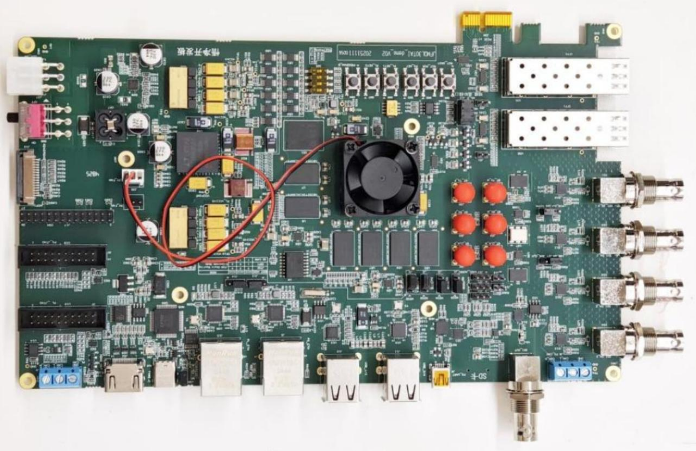
2) -'@ Lf] RELEH mg v0 + bal @ re ii bal] —- FL doling 5 og 388 $4 8. aa eels) nt $4 8 =e a ce he ir ee 2 reo. 国志 A= En Bra o BD rn i fe a Li a a _— a i acd TeIe Te Te 5 a 起 1 a oso ss ae st :, E | hoe “a =a eye | “ee Bal” et bent J O14 PEELE ope 1 a, Me i Oe fhe 人rr i a dy q -一一 ‘a vv $05 =») VV VV
支持 CNN、RNN、Transformer 等神经网络。 • FPGA 侧提供约 125K Logic Cells、400 个 DSP Slices 和 9.3Mb Block RAM，可实现高速接口适 配、数据预处理、自定义算子和实时控制逻辑。 • VPU 支持 4K@30FPS 视频编解码，可面向视觉检测、智慧座舱、机器人、工业质检等场景构建 视频 AI 应用。 • 开发环境包括板载 Ubuntu 20.04、NPU 开发工具 Icraft 和 FPGA 开发工具 Procise，支持模型编 译、量化、仿真、上板运行和硬件逻辑开发。 模块 关键参数/能力 芯片/板卡 FMQL30TAI-悟净开发板，国产 FPAI 异构融合平台 SoC 4 核 CPU，主频约 1GHz，支持系统控制与通用浮点计算 NPU ZG330 iCore，8TOPS@INT8，支持 CNN/RNN/Transformer 等网络 FPGA 约 125K Logic Cells，400 DSP Slices，9.3Mb Block RAM 视频与接口 VPU 支持 4K@30FPS 视频编解码，支持 PCIe Gen2 x4、GTX 等高速接口 软件环境 Ubuntu 20.04，Icraft，Procise 及相关示例工程 *备选平台：复旦微电子 FMQL30TAI-悟净开发板（完整版悟净），轻量版悟净为裁剪版悟净开发 板，采用同一套 PCB，未焊接一些冗余器件，其差异如下表： 序号 功能 位号 备注 1 PL 端千兆网 U30、Y4、J15 轻量版悟净未焊接 2 PS 的 QSPI1 U5 轻量版悟净未焊接 3 PL 端 EMMC US1 轻量版悟净未焊接 4 CAN U12、U13、J8、J9 轻量版悟净未焊接 5 RTC U10、X2 轻量版悟净未焊接 J28、J29、J30、J31、 轻量版悟净未焊接 6 SMA J32、J33 7 光口 SFP1 U32 轻量版悟净未焊接 8 SDI 输入 3 XS3、D12 轻量版悟净未焊接 9 SDI 输入 4 XS4、D13 轻量版悟净未焊接 4
10 SDI 输出 XS5、D14 轻量版悟净未焊接 11 EEPROM U36 轻量版悟净未焊接 12 可调 GT 时钟 U37 轻量版悟净未焊接 13 U52、U53、U54、 轻量版悟净未焊接 U55、U56、U57、 电流监控 U58、U59、U60、 U61、U62 三、 选题方向 随着人工智能技术进入规模化落地阶段，端侧设备需要在功耗、时延、可靠性和灵活性之间取得 平衡。FPAI 异构融合可编程智能芯片把 CPU、NPU、FPGA 和视频处理能力集成在单芯片内，既能承 载 AI 模型推理，又能通过 FPGA 实现定制化数据通路、接口适配和硬件加速。 本赛题要求参赛队围绕具体应用场景，基于复旦微电子 FMQL30TAI-悟净开发板 lite（轻量版悟 净）或者 FMQL30TAI-悟净开发板完成一个包含 AI 算法部署与 FPGA 开发的创新系统。作品应体现异 构协同设计思想，清晰说明哪些任务由 CPU 承担、哪些任务由 NPU 承担、哪些任务由 FPGA 实现， 并通过性能数据证明系统设计的有效性。 鉴于时下发展迅猛的人工智能技术，推荐此次比赛参赛者采用开放式选题的方式进行，鼓励学生 可以自由发散地利用合适的 Agent 工具与大模型进行选题，方案制定，算法实现以及高效开发，总体 任务要求如下： • 比赛全过程中可开放利用各类智能体和大模型工具，包括且不限于复旦微厂家推荐或提供的 Agent 工具、模型以及各类国产 Agent、模型。作品成果中需要细化具体在什么环节中使用了何种 AI 工具及 其在整体工作量中的占比情况。 •选择一个明确应用场景，完成需求分析、系统架构设计、软硬件划分、数据流设计和演示验证。 • 至少部署 1 种 AI 算法到 30TAI 平台上，完成模型转换、量化/精度分析、仿真验证、上板推理和性能 测试。 • 至少完成 1 项 FPGA 相关开发内容，包括但不限于传感器/视频接口、数据预处理、后处理、自定义 硬算子、硬件加速 IP 或实时控制逻辑。 • 形成端到端系统闭环，覆盖数据输入、预处理、AI 推理、后处理、控制/交互反馈和结果展示。 • 提交可复现的工程文件、说明文档、测试数据、演示视频或现场实物演示。 FPGA 开发内容：接口适配，数据处理，自定义硬算子与硬件加速设计 参赛队可围绕 AI 应用中的前处理、后处理或关键计算环节，利用 FPGA 可编程逻辑实现硬件加速 模块，并与 NPU/CPU 协同完成系统运行。重点考察硬件模块的功能正确性、接口定义、资源占用、 时序性能、系统集成和加速效果。 • 可选算子包括图像缩放、颜色空间转换、滤波、特征提取、目标检测后处理、阈值筛选、 5
NMS、语义分割后处理、数据压缩或协议解析等。 • 鼓励使用流水线、并行计算、片上缓存、DMA 传输等方法优化数据通路。 • 应给出软件实现与 FPGA 实现的性能对比，包括吞吐率、延迟、资源占用、功耗估计或系统帧 率。 以下是一些参考作品形态，此外还可以由参赛者自定义选题， 参考作品形态 类别 示例方向 AI 内容 FPGA 开发内容 巡检识别/低小慢空间目标识别与跟踪 目标检测、分割、异常 视频采集、图像预处理、检 智能视觉 （EO/IR）/无人机视觉导航定位 检测、视觉定位 测后处理加速 目标识别、位姿估计、 多传感器接口、实时控制、 机器人与控制 具身智能/移动机器人感知与避障 路径判断 数据融合加速 语音助手/AI 玩具/场景理解/AI 会议一体机 语音识别、关键词检 音频采集、特征提取、低延 语音与多模态 系统 测、多模态分类 迟缓存通路 车辆/行人检测、行为识 多路视频输入、后处理、显 智慧交通 车载/路侧感知与事件检测 别 示与通信接口 ADC 射频数据采集、数字下 信号调制识别、频谱纹 变频 DDC、FIR 滤波/FFT 频 无线电频谱特征识别、雷达信号分选识 理、频谱异常检测、脉 谱硬件加速、脉冲时域检测 射频信号智能 别、RF 指纹、议片段分析、异常检测、置 冲参数 AI 估计、CNN、 链路、IQ 数据预处理、射频 识别与分析 信度评估 Transformer、度量学 AI 推理硬件通路、高速数据 习、协议特征提取 收发接口、多通道射频同步 采集: 大规模 MIMO 数字波束成形 波束自适应优化、干扰 硬件阵列、信道估计算法加 AI-RAN 智能 基站信号调度/MassiveMIMO 波束成形/空 智能辨识、无线信道估 速、基带信号处理流水线、 无线接入网 口干扰抑制/无线资源智能分配 计、资源调度决策、用 空口数据收发链路、AI 调度 户流量预测 指令实时解析 评分标准 项目 评分内容 基础要求 拓展要求 方案设计 场景选择与需求 有明确应用场景和基本需求，能够说明作 场景具有创新性或实际应用价值，并能充分体现 分析 品拟解决的问题。 FPAI 在低时延、并行处理、接口灵活性等方面的 优势。 方案设计 系统架构与软硬 给出基本系统架构，能够说明 CPU、NPU 能够结合计算量、实时性、带宽和资源约束说明 件划分 和 FPGA 分别承担的主要任务。 划分依据，并通过设计对比证明异构协同方案的 合理性。 方案实现 AI模型部署与工 至少一种 AI 模型完成转换、量化、仿真和 模型部署稳定，具有系统化性能优化；提供充分 具链使用 上板推理，能够输出正确结果。 的精度与性能对比数据，并能解释模型结构、算 子兼容和优化方法。 方案实现 FPGA模块开发与 完成至少一项FPGA 功能，如接口适配、数 采用流水线、并行计算、片上缓存或 DMA 等方 系统集成 据预处理、后处理、硬件算子或控制逻 法优化；与软件实现相比具有明确的性能收益， 辑，并能正确运行。 并能完整说明设计与验证过程。 6
方案实现 功能完整性与稳 实现数据输入、AI 推理、结果输出等基本 系统能够长时间稳定运行，交互和展示完整；具 定性 流程，主要功能可以运行。 有多场景测试、异常恢复、外设联动或现场实物 验证。 性能表现 精度、速度与资 提供精度、时延、吞吐率、帧率或资源占 测试全面且可复现，能够分析性能瓶颈；优化效 源分析 用中的部分数据，结果基本可信。 果显著，并对精度、时延、资源和功耗之间的取 舍作出合理说明。 作品成果 文档、代码、答 提交基本工程、代码、说明文档和演示材 工程可直接复现，文档规范；关键设计决策、问 辩与团队协作 料；能够介绍主要功能和团队分工。 题解决过程和团队贡献说明充分，能够准确回答 技术问题。 附加分 AI工具效率提升 说明AI工具用于选题、方案、编码、调试 形成可复用的AI 辅助开发流程，证据完整；能 表现 或文档等具体环节，并提供部分使用记 够说明AI 贡献边界、人工审核机制、错误修正 录。 及对整体工作量和开发质量的实际提升。 四、 开发板获取途径 参赛队可根据大赛组委会与复旦微电子后续发布的通知获取 FMQL30TAI-悟净开发板以及 Lite 版 悟净获取购买或者其他获取方式信息。除申请开发板外，本次比赛也允许使用第三方以复旦微电子 FMQL30TAI676HM 芯片为核心的开发板，或者直接采用 FMQL30TAI676HM 作为核心器件设计硬件的 方式。复旦微提供指定销售渠道或竞赛专属支持方式，并面向参赛队公布板卡和芯片型号、数量、价 格政策、发货周期和售后支持联系人。 五、 技术支持与技术资源 复旦微电子可围绕芯片平台、开发板、工具链和示例工程提供技术资料与线上支持。建议参赛队 优先阅读开发板简介、工具链使用说明、AI 模型部署流程、FPGA 工程示例和大赛发布的统一说明。 • NPU 开发工具：Icraft，用于 AI 模型编译转换、量化分析、仿真验证、上板运行和性能分析。 • FPGA 开发工具：Procise，用于 FPGA 逻辑设计、综合实现、约束配置、比特流生成和调试。 • 平台资料：FMQL30TAI-悟净开发板简介、芯片/板卡接口说明、系统镜像、示例工程、参考位 流文件。 • 技术交流：关注大赛官方公众号及复旦微赛事官方交流 QQ 群：790072144 复旦微嵌入式 FPGA QQ 群 • 参赛支持：设置线上宣讲、技术答疑群、阶段性培训和优秀作品交流机制。 六、 其它 • 参赛作品应由参赛队自主完成，涉及第三方开源模型、数据集、代码或 IP 时，应明确来源并遵 守相应许可。 7
• 作品应避免仅停留在算法演示或单模块验证，鼓励形成可运行、可展示、可测试的端到端系 统。 • 涉及人脸、医疗、交通、安防等数据的作品应注意数据合规、隐私保护和安全边界。 • 未尽事宜以大赛组委会发布的正式通知和企业后续技术说明为准。 8
全国大学生嵌入式芯片与系统设计竞赛'2026 FPGA 创新设计赛道选题指南 中科亿海微 1
目录 目录 ..................................................................................................................................................... 2 一、 公司介绍 ...................................................................................................................................... 1 二、 竞赛技术平台 .............................................................................................................................. 1 三、 选题方向 ...................................................................................................................................... 2 四、 EDA 软件获取途径 ..................................................................................................................... 6 五、 技术支持与技术资源................................................................................................................... 6 2
全国大学生嵌入式芯片与系统设计竞赛'2026 选题指南（中科亿海微） 一、 公司介绍 中科亿海微电子科技（苏州）有限公司，是 “可编程芯片与智能微系统”技术领域 的高新技术企业，由中国科学院空天院于 2017 年 1 月在苏州发起成立。公司以“可编程 逻辑 IP 核与 EDA 工具”为技术特色，以 FPGA 等产品设计与服务为主营业务，是国家 级专精特新“小巨人”企业，工信部 FPGA 通用 EDA 平台链主单位。 中科亿海微公司坚持全正向设计技术路线，研制高度自主可控、高可靠性 FPGA 产品；是国内首家跨 40nm/28nm/12nm 全国产工艺实现嵌入式 FPGA 技术的本土正向 研发企业，公司构建“FPGA 芯片-自研 EDA 工具-嵌入式 IP 核-可重构系统”全栈自主可 控产业链，已经实现 12nm 国产工艺 2000 万门高端 FPGA 量产供货，核心产品已推广 应用于 400 余家用户。 “砺志创芯、产业报国”，中科亿海微肩负国产自主可控高可靠 FPGA 芯片产业化的 重任。亿海微致力于研发中国人自己的 FPGA，为广大行业用户解决问题、创造价 值，从而赢得信任与尊重。 二、 竞赛技术平台 ⚫ 亿灵思 eLinx 软件 eLinx 软件是一款拥有国产自主知识产权的大规模 FPGA 集成开发环境，其核心功 能覆盖了从电路输入、综合映射、布局布线、时序分析、比特流生成到配置下载的全 流程设计。它内置丰富的功能模块和 IP 库，旨在帮助用户高效完成应用电路的开发与 调试。 在应用场景方面，eLinx 软件广泛应用于通信、汽车、工业控制、医疗设备和消费 电子等领域，能够支持复杂的数字信号处理、图像处理和机器学习等应用，满足高性 能和低延迟的需求。eLinx 软件实现了 FPGA EDA 工具链的自主可控，填补了国内空 白，为关键领域提供了高质量的国产化替代方案；并且通过高性能的布局布线算法和 强大的时序分析工具，显著缓解了 FPGA 设计中时序收敛困难的挑战，提升了系统开 发的效率与可靠性。 eLinx 软件的核心特点如下： •从 RTL 到 Bitstream 的全正向自主可控融合架构 EDA 工具； •集成了 IP 核生成器，包含丰富的 IP 软硬核资源，帮助用户快捷地实现复杂设 计； •除传统流程外，还支持 eFPGA 的评估以及定制流程。 •三模冗余(TMR)软件抗辐照加固措施； •高效的时序装箱布局布线算法，在延时/面积方面有着高质量的 QoR； 1
全国大学生嵌入式芯片与系统设计竞赛'2026 选题指南（中科亿海微） •支持工业标准 SDC 文件作为时序约束来满足时序要求； •集成了在线逻辑分析仪，可提供方便的在线调试手段； •支持各类码流下载模式，包括 JTAG/PROM/Flash 下载； •支持第三方仿真工具 ModelSim； •基于 TCL 脚本环境的自动化流程控制； •直观的图形化管脚分配以及 Floorplan 功能； •提供 Microblade CPU 软核和 SDK 开发工具； •软件界面兼容国际主流商业工具,容易上手； •集成 DeepSeek AI 助手，开启智能化 FPGA 编程。 三、 选题方向 ⚫ 选题一：基于以太网 MAC 总线实现 AFDX AFDX 最初被设计并应用最广泛的领域，广泛应用在第五代及以上的战斗机。 AFDX 作为飞机的“中枢神经系统”，连接所有关键的航电子系统。 其替代了上一代笨重、低速的 ARINC 429 和 MIL-STD-1553B 总线，实现了海量数 据（如雷达图像、传感器融合数据）的高速、可靠传输，为“信息优势”和“网络中 心战”提供了基础。 本次设计基于以太网 MAC 控制器作为基础，AFDX 端系统采用可编程逻辑阵列 (FPGA)，实现 A664 网络数据的高完整性通信、UDP/IP 协议处理、缓冲区管理、发送 调度和接收管理、媒体接入控制等功能，。 AFDX 端系统主要功能如下: 1. AFDX 端系统支持 ARINC 664 PART7 规范要求的通信功能; 2. AFDX 端系统必须支持高完整性数据通信功能; 3. AFDX 端系统支持 SNMP 网络管理功能； 4. AFDX 端系统支持 615A 数据加卸载功能； 5. AFDX 端系统支持 RTC 时钟同步功能。 设计初衷以及目的： AFDX，全称为航空电子全双工交换式以太网，是空客公司开发的一种数据网络， 2
全国大学生嵌入式芯片与系统设计竞赛'2026 选题指南（中科亿海微） 后来成为 ARINC 664 Part 7 标准。它是在商用以太网（IEEE 802.3）基础上，为满足航 空电子系统对高可靠性、确定性和实时性的苛刻要求而设计的。 通过开发 AFDX 学生可以接触以太网 MAC 控制器，并熟悉 UDP/IP 协议。了解熟 悉以太网通讯架构，其主要涉及网络技术、实时系统、硬件设计、系统工程和行业标 准的综合性工程实践。 AFDX 参考资料： 1. AFDX 网络技术综述-AET-电子技术应用 2. AFDX 网络仿真系统设计与研究-AET-电子技术应用 3. PowerPoint Presentation 4. AFDX（ARINC664）交换机技术规范详解 - 百度文库 AFDX 技术指标： 传输速率：100 Mbps。 帧格式：基于 IEEE 802.3 + ARINC 664 扩展，含 虚拟链路标识符（VLID） 和 序 列号（1–255），有效载荷通常 ≤ 1471 字节，总帧长 ≤ 1518 字节。 端到端时延：< 1–2 ms（最坏情况），抖动 ≤ 几十微秒。 VL 支持能力：典型端系统支持 最多 128 个发送 VL、4096 个接收 VL。 AFDX 设计建议： 为便于阅读和评议，建议代码中的端口、信号和寄存器一律用小写字符表述，参数 用大写字符表述，对重要的信号和代码段进行简洁的注释。顶层模块统一采用下面的 模板。 module AFDX_top ( input wire clk, //时钟信号 input wire reset, //复位信号 output wire [7:0] tx_data, //发送数据 input wire [7:0] rx_data, //接收数据 output wire tx_valid, //发送数据有效指示 input wire rx_valid, //接收数据有效指示 3
全国大学生嵌入式芯片与系统设计竞赛'2026 选题指南（中科亿海微） output wire tx_ready, //发送数据准备好指示 input wire rx_ready //接收数据准备好指示 ); 测评标准： 代码及仿真环境：40% 设计文档（包括方案和具体设计）：20% 测试（仿真）报告：20% 技术指标：20% ⚫ 选题二：多路选择器 PMUX 结构优化 PMUX（可编程多路复用器）用于复杂数字系统中动态切换信号 / 数据通路，可根 据运行配置多路输入选通一路输出，提升系统灵活度。在 FPGA 逻辑综合流程中， PMUX 原始逻辑结构会占用大量组合逻辑资源，对芯片面积、功耗存在明显负面影 响，因此需要设计专用综合优化算法对 PMUX 电路进行重构优化。 PMUX 优化核心功能要求： 1. 在 Yosys 框架内新增自定义 Tcl 命令，完整实现 PMUX 识别、结构拆解、逻辑重 构优化算法； 2. 优化算法以最小化电路单元数量、缩减面积为核心优化目标； 3. 优化前后网表必须逻辑等价，可通过形式等价工具全自动校验； 4. 算法具备工程实用性，约束运行耗时与内存占用，适配千级节点规模电路。 主要器件 / 平台选型参考： FPGA 芯片：中科亿海微 EQ6HL130P-CSG484 开发环境：Yosys 开源综合框架、EQY 形式等价验证工具 测试输入：标准 Verilog PMUX 测试用例集（单级 PMUX、混合组合逻辑 PMUX） 设计初衷以及目的： 本赛题基于开源 EDA 工具 Yosys 综合框架开展开发，面向国产 FPGA 综合优化场 景，贴合 FPGA 后端资源映射、形式等价验证等工程落地需求。参赛者基于 Yosys 基 4
全国大学生嵌入式芯片与系统设计竞赛'2026 选题指南（中科亿海微） 础综合流程开发 PMUX 专用优化插件，实现可编程多路选择器逻辑结构重构，在完全 保证逻辑功能不变的前提下降低综合后电路单元数量、缩减芯片面积。通过该设计可 掌握开源 EDA 工具二次开发、逻辑化简算法、形式等价验证全套流程，覆盖数字综 合、逻辑等价校验、Verilog 解析等 EDA 核心技术，可直接应用于国产 FPGA 综合工具 研发。 参考资料： 1. 参考文档 https://yosyshq.readthedocs.io/en/latest/tools.html#yosys 技术指标： 功能完整性：优化插件可正常执行，无编译、运行报错； 等价性：所有测试用例优化前后网表通过形式等价检查（Formal Equivalence Check），无逻辑不一致； 面积优化：相比原始 Yosys 默认综合流程，电路单元总数实现缩减 10%以上； 算法性能：节点规模≤1000 的电路，完整优化耗时≤60s，运行内存峰值≤2GB； 兼容性：支持混合组合逻辑 PMUX 的 复杂电路。 测评标准： 功能正确性：10% 优化效果：40% 算法效率：30% 设计文档（包括方案和具体设计）：5% 现场答辩：15% 细分分值细则： 功能正确性（10 分）：自动化批量执行等效性校验，所有测试用例全部通过得满 分；存在任意用例不等价则本项 0 分，其余项不予计分。 面积优化效果（40 分）：对比原始综合流程单元数量，实现资源缩减获得基础分 20 分，优化幅度越高得分越高；优化效果达 20%以上得满分；无优化效果本项 0 分。 算法运行效率（30 分）：运行耗时、内存占用达标得基础分 20 分；超出阈值按比 例扣分，任意指标超限 15% 以上本项不得分，若不超过所有指标的 5%则得满分。 设计文档（5 分）：完整阐述算法原理、整体架构、代码模块划分、测试方案，专 家评审打分。 5
全国大学生嵌入式芯片与系统设计竞赛'2026 选题指南（中科亿海微） 现场答辩（15 分）：讲解逻辑清晰、技术理解深入、团队分工明确，评委综合打 分。 四、 EDA 软件获取途径及技术支持与技术资源 ⚫ 本赛题全部通过 eLinx 软件进行编译及仿真，无需硬件平台。获取链接: 通过网 盘分享的文件：elinx 教育版安装包 链接: https://pan.baidu.com/s/1e1p77F-a-e1vQWsd5o3_rw?pwd=b4tn 提取码: b4tn 参赛 QQ 群：1107062816（FPGA 创新大赛-中科亿海微群） 视频教程：微信视频号“中科亿海微” 官网：www.ehiway.cn 6
没有匹配的页面